<!DOCTYPE html>
<html lang="zh-CN">
<head>
  <meta charset="UTF-8">
  <meta name="viewport" content="width=device-width, initial-scale=1.0, viewport-fit=cover">
  <meta name="description" content="《帝国曙光：第三版》（Twilight Imperium: Third Edition）官方英文规则书全文中文翻译：4X 太空歌剧 · 政治投票，72 页整本译出，含设置、流程、计分与附录，附官方原文 PDF 链接。">
  <title data-zh="帝国曙光：第三版 (Twilight Imperium: Third Edition) · 规则 — 桌游规则书" data-en="Twilight Imperium: Third Edition · Rules — Board Game Rules">帝国曙光：第三版 (Twilight Imperium: Third Edition) · 规则 — 桌游规则书</title>
  <link rel="icon" href="data:image/svg+xml,<svg xmlns='http://www.w3.org/2000/svg' viewBox='0 0 100 100'><text y='0.9em' font-size='90'>🪐</text></svg>">
  <link rel="stylesheet" href="../assets/css/style.css">
  <link rel="canonical" href="https://rule.zhibinai.cn/games/twilight-imperium-3e.html">
  <meta property="og:site_name" content="桌游规则书">
  <meta property="og:locale" content="zh_CN">
  <meta property="og:type" content="article">
  <meta property="og:title" content="帝国曙光：第三版 (Twilight Imperium: Third Edition) · 规则 — 桌游规则书">
  <meta property="og:description" content="《帝国曙光：第三版》（Twilight Imperium: Third Edition）官方英文规则书全文中文翻译：4X 太空歌剧 · 政治投票，72 页整本译出，含设置、流程、计分与附录，附官方原文 PDF 链接。">
  <meta property="og:url" content="https://rule.zhibinai.cn/games/twilight-imperium-3e.html">
  <meta property="og:image" content="https://rule.zhibinai.cn/assets/img/twilight-imperium-3e/01.webp">
  <meta name="twitter:card" content="summary_large_image">
  <meta name="twitter:title" content="帝国曙光：第三版 (Twilight Imperium: Third Edition) · 规则 — 桌游规则书">
  <meta name="twitter:description" content="《帝国曙光：第三版》（Twilight Imperium: Third Edition）官方英文规则书全文中文翻译：4X 太空歌剧 · 政治投票，72 页整本译出，含设置、流程、计分与附录，附官方原文 PDF 链接。">
  <script type="application/ld+json">{
 "@context": "https://schema.org",
 "@graph": [
  {
   "@type": "WebSite",
   "@id": "https://rule.zhibinai.cn/#website",
   "name": "桌游规则书",
   "url": "https://rule.zhibinai.cn/",
   "inLanguage": "zh-CN",
   "description": "免费中文桌游规则书查询站：热门桌游完整中文规则全文 + Board Game Arena 全量官方规则中文版。"
  },
  {
   "@type": "WebPage",
   "@id": "https://rule.zhibinai.cn/games/twilight-imperium-3e.html",
   "url": "https://rule.zhibinai.cn/games/twilight-imperium-3e.html",
   "name": "帝国曙光：第三版 (Twilight Imperium: Third Edition) · 规则 — 桌游规则书",
   "description": "《帝国曙光：第三版》（Twilight Imperium: Third Edition）官方英文规则书全文中文翻译：4X 太空歌剧 · 政治投票，72 页整本译出，含设置、流程、计分与附录，附官方原文 PDF 链接。",
   "isPartOf": {
    "@id": "https://rule.zhibinai.cn/#website"
   },
   "inLanguage": "zh-CN",
   "dateModified": "2026-11-09",
   "primaryImageOfPage": {
    "@type": "ImageObject",
    "url": "https://rule.zhibinai.cn/assets/img/twilight-imperium-3e/01.webp"
   }
  },
  {
   "@type": "BreadcrumbList",
   "itemListElement": [
    {
     "@type": "ListItem",
     "position": 1,
     "name": "首页",
     "item": "https://rule.zhibinai.cn/"
    },
    {
     "@type": "ListItem",
     "position": 2,
     "name": "帝国曙光：第三版 (Twilight Imperium: Third Edition)",
     "item": "https://rule.zhibinai.cn/games/twilight-imperium-3e.html"
    }
   ]
  }
 ]
}</script>
  <!-- seo-wired -->
</head>
<body data-theme="twilight-imperium-3e" data-game-key="twilight-imperium-3e">

  <div class="progress-bar" aria-hidden="true"></div>

  <header class="topbar">
    <button class="menu-btn" aria-label="打开目录" aria-expanded="false" data-i18n-aria="openToc">☰</button>
    <a class="brand" href="../index.html" data-i18n="brand">🎲 桌游规则书</a>
    <span class="topbar-title" data-zh="帝国曙光：第三版" data-en="Twilight Imperium: Third Edition">帝国曙光：第三版</span>
  </header>

  <div class="layout">
    <aside class="sidebar" id="sidebar">
      <nav class="toc" aria-label="本页目录" data-i18n-aria="onThisPage">
        <div class="toc-title" data-i18n="onThisPage">本页目录</div>
        <ul id="toc-list"></ul>
      </nav>
      <nav aria-label="全部游戏" data-i18n-aria="allGames">
        <div class="toc-title" data-i18n="allGames">全部游戏</div>
        <ul>
          <li><a href="../index.html" data-i18n="home">🏠 返回首页</a></li>
          <li><a href="7-wonders.html" data-zh="🏛️ 七大奇迹" data-en="🏛️ 7 Wonders">🏛️ 七大奇迹</a></li>
          <li><a href="brass-birmingham.html" data-zh="🏭 工业革命：伯明翰" data-en="🏭 Brass: Birmingham">🏭 工业革命：伯明翰</a></li>
          <li><a href="vale-of-eternity.html" data-zh="✨ 永恒之谷" data-en="✨ The Vale of Eternity">✨ 永恒之谷</a></li>
          <li><a href="wingspan.html" data-zh="🦜 展翅翱翔" data-en="🦜 Wingspan">🦜 展翅翱翔</a></li>
          <li><a href="pokemon-grove.html" data-zh="🌳 宝可梦林地探索" data-en="🌳 Pokemon Grove">🌳 宝可梦林地探索</a></li>
          <li><a href="puerto-rico.html" data-zh="⛵ 波多黎各" data-en="⛵ Puerto Rico">⛵ 波多黎各</a></li>
          <li><a href="barcelona.html" data-zh="🌸 巴塞罗那" data-en="🌸 Barcelona">🌸 巴塞罗那</a></li>
          <li><a href="dune-imperium.html" data-zh="🏜️ 沙丘：帝国" data-en="🏜️ Dune: Imperium">🏜️ 沙丘：帝国</a></li>
          <li><a href="dune-imperium-uprising.html" data-zh="🪱 沙丘：帝国起义" data-en="🪱 Dune: Imperium – Uprising">🪱 沙丘：帝国起义</a></li>
          <li><a href="ascension.html" data-zh="🃏 创升纪元" data-en="🃏 Ascension">🃏 创升纪元</a></li>
          <li><a href="tulip-bubble.html" data-zh="🌷 郁金香泡沫" data-en="🌷 Tulip Bubble">🌷 郁金香泡沫</a></li>
          <li><a href="trajan.html" data-zh="🦅 图拉真" data-en="🦅 Trajan">🦅 图拉真</a></li>
          <li><a href="galileo-galilei.html" data-zh="🔭 伽利略：伽利莱" data-en="🔭 Galileo Galilei">🔭 伽利略：伽利莱</a></li>
          <li><a href="orloj.html" data-zh="🕰️ 奥洛伊：布拉格天文钟" data-en="🕰️ Orloj: The Prague Astronomical Clock">🕰️ 奥洛伊：布拉格天文钟</a></li>
          <li><a href="food-chain-magnate.html" data-zh="🍔 快餐连锁大亨" data-en="🍔 Food Chain Magnate">🍔 快餐连锁大亨</a></li>
          <li><a href="clank-catacombs.html" data-zh="🐉 CLANK! 地下墓穴" data-en="🐉 Clank!: Catacombs">🐉 CLANK! 地下墓穴</a></li>
          <li><a href="clank-catacombs-underworld.html" data-zh="💀 CLANK! 地下墓穴:地下世界" data-en="💀 Clank! Catacombs: Underworld">💀 CLANK! 地下墓穴:地下世界</a></li>
          <li><a href="clank-adventuring-party.html" data-zh="🗡️ CLANK! 冒险队" data-en="🗡️ Clank!: Adventuring Party">🗡️ CLANK! 冒险队</a></li>
          <li><a href="ark-nova-marine-worlds.html" data-zh="🐙 方舟动物园：海洋世界" data-en="🐙 Ark Nova: Marine Worlds">🐙 方舟动物园：海洋世界</a></li>
          <li><a href="arnak-expedition-leaders.html" data-zh="🗿 阿纳克遗迹:探险队长" data-en="🗿 Lost Ruins of Arnak: Expedition Leaders">🗿 阿纳克遗迹:探险队长</a></li>
          <li><a href="speakeasy.html" data-zh="🎷 地下酒吧" data-en="🎷 Speakeasy">🎷 地下酒吧</a></li>
          <li><a href="power-grid.html" data-zh="⚡ 电力公司" data-en="⚡ Power Grid">⚡ 电力公司</a></li>
          <li><a href="seti.html" data-zh="🛰️ SETI：寻找外星人" data-en="🛰️ SETI: Search for Extraterrestrial Intelligence">🛰️ SETI：寻找外星人</a></li>
          <li><a href="seti-space-agencies.html" data-zh="🚀 地外文明：太空机构" data-en="🚀 SETI: Space Agencies">🚀 地外文明：太空机构</a></li>
          <li><a href="white-castle.html" data-zh="🏯 姬路城" data-en="🏯 The White Castle">🏯 姬路城</a></li>
          <li><a href="white-castle-matcha.html" data-zh="🍵 姬路城：茶道" data-en="🍵 The White Castle: Matcha">🍵 姬路城：茶道</a></li>
          <li><a href="endeavor-deep-sea.html" data-zh="🌊 奋进号：深海" data-en="🌊 Endeavor: Deep Sea">🌊 奋进号：深海</a></li>
          <li><a href="druids-of-edora.html" data-zh="🌲 埃多拉的德鲁伊" data-en="🌲 The Druids of Edora">🌲 埃多拉的德鲁伊</a></li>
          <li><a href="grand-austria-hotel.html" data-zh="🏨 奥地利大饭店" data-en="🏨 Grand Austria Hotel">🏨 奥地利大饭店</a></li>
          <li><a href="the-message.html" data-zh="🕵️ 风声再临" data-en="🕵️ The Message">🕵️ 风声再临</a></li>
          <li><a href="gwt-new-zealand.html" data-zh="🐑 大西部开拓者:新西兰" data-en="🐑 Great Western Trail: New Zealand">🐑 大西部开拓者:新西兰</a></li>
          <li><a href="fields-of-arle.html" data-zh="🌾 阿勒農場" data-en="🌾 Fields of Arle">🌾 阿勒農場</a></li>
          <li><a href="gaiaproject-lost-fleet.html" data-zh="🌌 盖亚计划:失落的舰队" data-en="🌌 Gaia Project: The Lost Fleet">🌌 盖亚计划:失落的舰队</a></li>
          <li><a href="spirit-island.html" data-zh="🏝️ 灵迹岛" data-en="🏝️ Spirit Island">🏝️ 灵迹岛</a></li>
          <li><a href="harmonies.html" data-zh="🦁 自然和弦" data-en="🦁 Harmonies">🦁 自然和弦</a></li>
          <li><a href="agricola-revised.html" data-zh="🌾 农场主（修订版）" data-en="🌾 Agricola (Revised Edition)">🌾 农场主（修订版）</a></li>
          <li><a href="final-girl.html" data-zh="🎬 最终女孩" data-en="🎬 Final Girl">🎬 最终女孩</a></li>
          <li><a href="le-havre.html" data-zh="⚓ 勒阿弗尔" data-en="⚓ Le Havre">⚓ 勒阿弗尔</a></li>
          <li><a href="lotr-duel-for-middle-earth.html" data-zh="🌋 魔戒：中土对决" data-en="🌋 The Lord of the Rings: Duel for Middle-earth">🌋 魔戒：中土对决</a></li>
          <li><a href="marvel-champions.html" data-zh="🦸 漫威群英传：卡牌版" data-en="🦸 Marvel Champions: The Card Game">🦸 漫威群英传：卡牌版</a></li>
          <li><a href="nemesis.html" data-zh="👽 复仇女神号" data-en="👽 Nemesis">👽 复仇女神号</a></li>
          <li><a href="pandemic-legacy-season-0.html" data-zh="🕵️ 瘟疫危机：传承·第0季" data-en="🕵️ Pandemic Legacy: Season 0">🕵️ 瘟疫危机：传承·第0季</a></li>
          <li><a href="pandemic-legacy-season-1.html" data-zh="🦠 瘟疫危机：传承·第一季" data-en="🦠 Pandemic Legacy: Season 1">🦠 瘟疫危机：传承·第一季</a></li>
          <li><a href="android-netrunner.html" data-zh="🤖 安卓：潜袭" data-en="🤖 Android: Netrunner">🤖 安卓：潜袭</a></li>
          <li><a href="arkham-horror-lcg.html" data-zh="🔍 诡镇奇谈：卡牌版" data-en="🔍 Arkham Horror: The Card Game">🔍 诡镇奇谈：卡牌版</a></li>
          <li><a href="bomb-busters.html" data-zh="💣 拆弹小队" data-en="💣 Bomb Busters">💣 拆弹小队</a></li>
          <li><a href="cascadia.html" data-zh="🌲 卡斯卡迪亚" data-en="🌲 Cascadia">🌲 卡斯卡迪亚</a></li>
          <li><a href="everdell.html" data-zh="🌰 仙境幽谷" data-en="🌰 Everdell">🌰 仙境幽谷</a></li>
          <li><a href="five-tribes.html" data-zh="🏜️ 五大部落" data-en="🏜️ Five Tribes: The Djinns of Naqala">🏜️ 五大部落</a></li>
          <li><a href="kanban-ev.html" data-zh="🚗 看板：电动汽车版" data-en="🚗 Kanban EV">🚗 看板：电动汽车版</a></li>
          <li><a href="lisboa.html" data-zh="🏛️ 里斯本" data-en="🏛️ Lisboa">🏛️ 里斯本</a></li>
          <li><a href="mage-knight.html" data-zh="🧙 魔骑士" data-en="🧙 Mage Knight Board Game">🧙 魔骑士</a></li>
          <li><a href="mansions-of-madness-2e.html" data-zh="🏚️ 疯狂诡宅（第二版）" data-en="🏚️ Mansions of Madness: Second Edition">🏚️ 疯狂诡宅（第二版）</a></li>
          <li><a href="paladins-of-the-west-kingdom.html" data-zh="🛡️ 西王国的圣骑士" data-en="🛡️ Paladins of the West Kingdom">🛡️ 西王国的圣骑士</a></li>
          <li><a href="pandemic-legacy-season-2.html" data-zh="🧭 瘟疫危机：传承·第二季" data-en="🧭 Pandemic Legacy: Season 2">🧭 瘟疫危机：传承·第二季</a></li>
          <li><a href="quacks.html" data-zh="🧪 奎德林堡的江湖郎中" data-en="🧪 Quacks">🧪 奎德林堡的江湖郎中</a></li>
          <li><a href="root.html" data-zh="🦊 茂林源记" data-en="🦊 Root">🦊 茂林源记</a></li>
          <li><a href="slay-the-spire-bg.html" data-zh="🗡️ 杀戮尖塔：版图游戏" data-en="🗡️ Slay the Spire: The Board Game">🗡️ 杀戮尖塔：版图游戏</a></li>
          <li><a href="star-wars-imperial-assault.html" data-zh="🎯 星球大战：帝国突击" data-en="🎯 Star Wars: Imperial Assault">🎯 星球大战：帝国突击</a></li>
          <li><a href="star-wars-rebellion.html" data-zh="🚀 星球大战：叛乱" data-en="🚀 Star Wars: Rebellion">🚀 星球大战：叛乱</a></li>
          <li><a href="the-crew-planet-nine.html" data-zh="🪐 星际探险队：第九行星" data-en="🪐 The Crew: The Quest for Planet Nine">🪐 星际探险队：第九行星</a></li>
          <li><a href="the-gallerist.html" data-zh="🖼️ 画商" data-en="🖼️ The Gallerist">🖼️ 画商</a></li>
          <li><a href="ticket-to-ride-legacy.html" data-zh="🚂 车票之旅：传承·西部传奇" data-en="🚂 Ticket to Ride Legacy: Legends of the West">🚂 车票之旅：传承·西部传奇</a></li>
          <li><a href="tzolkin.html" data-zh="🌀 卓尔金历：玛雅历法" data-en="🌀 Tzolk'in: The Mayan Calendar">🌀 卓尔金历：玛雅历法</a></li>
          <li><a href="underwater-cities.html" data-zh="🌊 水下城市" data-en="🌊 Underwater Cities">🌊 水下城市</a></li>
          <li><a href="blood-on-the-clocktower.html" data-zh="🔔 血染钟楼" data-en="🔔 Blood on the Clocktower">🔔 血染钟楼</a></li>
          <li><a href="oathsworn.html" data-zh="🐺 守誓者：深入密林" data-en="🐺 Oathsworn: Into the Deepwood">🐺 守誓者：深入密林</a></li>
          <li><a href="cthulhu-death-may-die.html" data-zh="🐙 克苏鲁：死亡可能会死" data-en="🐙 Cthulhu: Death May Die">🐙 克苏鲁：死亡可能会死</a></li>
          <li><a href="too-many-bones.html" data-zh="💀 太多骨头" data-en="💀 Too Many Bones">💀 太多骨头</a></li>
          <li><a href="crokinole.html" data-zh="🎯 弹指棋" data-en="🎯 Crokinole">🎯 弹指棋</a></li>
          <li><a href="wingspan-asia.html" data-zh="🐦 展翅翱翔：亚洲" data-en="🐦 Wingspan Asia">🐦 展翅翱翔：亚洲</a></li>
          <li><a href="viticulture.html" data-zh="🍇 葡萄酒庄园（核心版）" data-en="🍇 Viticulture Essential Edition">🍇 葡萄酒庄园（核心版）</a></li>
          <li><a href="twilight-struggle.html" data-zh="🌍 冷战热斗" data-en="🌍 Twilight Struggle">🌍 冷战热斗</a></li>
          <li><a href="on-mars.html" data-zh="🔴 火星之上" data-en="🔴 On Mars">🔴 火星之上</a></li>
          <li><a href="war-of-the-ring.html" data-zh="💍 魔戒圣战" data-en="💍 War of the Ring: Second Edition">💍 魔戒圣战</a></li>
          <li><a href="mechs-vs-minions.html" data-zh="⚙️ 机甲大战小兵" data-en="⚙️ Mechs vs. Minions">⚙️ 机甲大战小兵</a></li>
          <li><a href="clank-legacy.html" data-zh="🐉 咔嚓！传承：收购公司" data-en="🐉 Clank! Legacy: Acquisitions Incorporated">🐉 咔嚓！传承：收购公司</a></li>
          <li><a href="eclipse-second-dawn.html" data-zh="🌌 星蚀：银河二次黎明" data-en="🌌 Eclipse: Second Dawn for the Galaxy">🌌 星蚀：银河二次黎明</a></li>
          <li><a href="voidfall.html" data-zh="🌑 虚空坠落" data-en="🌑 Voidfall">🌑 虚空坠落</a></li>
          <li><a href="sleeping-gods.html" data-zh="🛶 沉睡之神" data-en="🛶 Sleeping Gods">🛶 沉睡之神</a></li>
          <li><a href="gloomhaven.html" data-zh="⚔️ 幽港迷城" data-en="⚔️ Gloomhaven">⚔️ 幽港迷城</a></li>
          <li><a href="gloomhaven-jaws-of-the-lion.html" data-zh="🦁 幽港迷城：雄狮之颚" data-en="🦁 Gloomhaven: Jaws of the Lion">🦁 幽港迷城：雄狮之颚</a></li>
          <li><a href="frosthaven.html" data-zh="❄️ 寒霜迷城" data-en="❄️ Frosthaven">❄️ 寒霜迷城</a></li>
          <li><a href="aeons-end-war-eternal.html" data-zh="💠 末日决战：永恒战争" data-en="💠 Aeon's End: War Eternal">💠 末日决战：永恒战争</a></li>
          <li><a href="arcs.html" data-zh="🌟 星弧航记" data-en="🌟 Arcs">🌟 星弧航记</a></li>
          <li><a href="battlestar-galactica.html" data-zh="🚀 太空堡垒卡拉狄加" data-en="🚀 Battlestar Galactica: The Board Game">🚀 太空堡垒卡拉狄加</a></li>
          <li><a href="codenames.html" data-zh="🕵️ 行动代号" data-en="🕵️ Codenames">🕵️ 行动代号</a></li>
          <li><a href="concordia-venus.html" data-zh="🕊️ 康考迪亚：维纳斯" data-en="🕊️ Concordia Venus">🕊️ 康考迪亚：维纳斯</a></li>
          <li><a href="dominant-species.html" data-zh="🦣 优势物种" data-en="🦣 Dominant Species">🦣 优势物种</a></li>
          <li><a href="iberia.html" data-zh="❓ 伊比利亚（待查词条）" data-en="❓ Iberia">❓ 伊比利亚（待查词条）</a></li>
          <li><a href="istanbul.html" data-zh="🏺 伊斯坦布尔" data-en="🏺 Istanbul">🏺 伊斯坦布尔</a></li>
          <li><a href="lotr-journeys-in-middle-earth.html" data-zh="🗺️ 魔戒：中土之旅" data-en="🗺️ The Lord of the Rings: Journeys in Middle-earth">🗺️ 魔戒：中土之旅</a></li>
          <li><a href="lotr-lcg.html" data-zh="💍 魔戒：卡牌游戏" data-en="💍 The Lord of the Rings: The Card Game">💍 魔戒：卡牌游戏</a></li>
          <li><a href="nemesis-lockdown.html" data-zh="🚪 复仇女神号：封锁" data-en="🚪 Nemesis: Lockdown">🚪 复仇女神号：封锁</a></li>
          <li><a href="rising-sun.html" data-zh="🎴 旭日战魂" data-en="🎴 Rising Sun">🎴 旭日战魂</a></li>
          <li><a href="robinson-crusoe.html" data-zh="🏝️ 鲁滨逊漂流记：诅咒之岛" data-en="🏝️ Robinson Crusoe: Adventures on the Cursed Island">🏝️ 鲁滨逊漂流记：诅咒之岛</a></li>
          <li><a href="star-realms.html" data-zh="🚀 星域奇航？" data-en="🚀 Star Realms">🚀 星域奇航？</a></li>
          <li><a href="tainted-grail.html" data-zh="🕯️ 污痕圣杯：阿瓦隆的陷落" data-en="🕯️ Tainted Grail: The Fall of Avalon">🕯️ 污痕圣杯：阿瓦隆的陷落</a></li>
          <li><a href="the-7th-continent.html" data-zh="🏝️ 第七大陆" data-en="🏝️ The 7th Continent">🏝️ 第七大陆</a></li>
          <li><a href="trickerion.html" data-zh="🎩 幻术师：幻象传奇？" data-en="🎩 Trickerion: Legends of Illusion">🎩 幻术师：幻象传奇？</a></li>
          <li><a href="undaunted-normandy.html" data-zh="🎖️ 无畏：诺曼底" data-en="🎖️ Undaunted: Normandy">🎖️ 无畏：诺曼底</a></li>
          <li><a href="unmatched-cobble-and-fog.html" data-zh="🌫️ 无双对决：雾都？" data-en="🌫️ Unmatched: Cobble &amp; Fog">🌫️ 无双对决：雾都？</a></li>
          <li><a href="viscounts-of-the-west-kingdom.html" data-zh="📜 西王国的子爵" data-en="📜 Viscounts of the West Kingdom">📜 西王国的子爵</a></li>
          <li><a href="age-of-steam.html" data-zh="🚂 蒸汽时代" data-en="🚂 Age of Steam">🚂 蒸汽时代</a></li>
          <li><a href="clank-in-space.html" data-zh="🛸 咔嚓！太空！" data-en="🛸 Clank! In! Space!: A Deck-Building Adventure">🛸 咔嚓！太空！</a></li>
          <li><a href="dominion-2e.html" data-zh="🏰 皇舆争霸（第二版）" data-en="🏰 Dominion (Second Edition)">🏰 皇舆争霸（第二版）</a></li>
          <li><a href="dominion-intrigue.html" data-zh="👑 皇舆争霸：暗潮汹涌（二版）" data-en="👑 Dominion: Intrigue">👑 皇舆争霸：暗潮汹涌（二版）</a></li>
          <li><a href="dwellings-of-eldervale.html" data-zh="🏘️ 永恒谷居所？" data-en="🏘️ Dwellings of Eldervale">🏘️ 永恒谷居所？</a></li>
          <li><a href="eldritch-horror.html" data-zh="🐙 全球惊悚" data-en="🐙 Eldritch Horror">🐙 全球惊悚</a></li>
          <li><a href="endeavor-age-of-sail.html" data-zh="⛵ 奋进：风帆时代" data-en="⛵ Endeavor: Age of Sail">⛵ 奋进：风帆时代</a></li>
          <li><a href="glen-more-2.html" data-zh="🌾 格伦莫尔2：编年史" data-en="🌾 Glen More II: Chronicles">🌾 格伦莫尔2：编年史</a></li>
          <li><a href="hansa-teutonica.html" data-zh="🏛️ 汉萨同盟" data-en="🏛️ Hansa Teutonica">🏛️ 汉萨同盟</a></li>
          <li><a href="inis.html" data-zh="🍀 翠屿秘境（INIS）" data-en="🍀 Inis">🍀 翠屿秘境（INIS）</a></li>
          <li><a href="iss-vanguard.html" data-zh="🛰️ ISS 先锋号" data-en="🛰️ ISS Vanguard">🛰️ ISS 先锋号</a></li>
          <li><a href="kemet.html" data-zh="🐍 凯麦特" data-en="🐍 Kemet">🐍 凯麦特</a></li>
          <li><a href="legendary-encounters-alien.html" data-zh="👽 传奇遭遇：异形" data-en="👽 Legendary Encounters: An Alien Deck Building Game">👽 传奇遭遇：异形</a></li>
          <li><a href="mombasa.html" data-zh="💎 蒙巴萨" data-en="💎 Mombasa">💎 蒙巴萨</a></li>
          <li><a href="quest-for-el-dorado.html" data-zh="🏛️ 竞逐黄金国" data-en="🏛️ The Quest for El Dorado">🏛️ 竞逐黄金国</a></li>
          <li><a href="ra.html" data-zh="☀️ RA 太阳神" data-en="☀️ Ra">☀️ RA 太阳神</a></li>
          <li><a href="radlands.html" data-zh="🌵 辐射荒漠？" data-en="🌵 Radlands">🌵 辐射荒漠？</a></li>
          <li><a href="raiders-of-the-north-sea.html" data-zh="⚓ 北海劫掠者" data-en="⚓ Raiders of the North Sea">⚓ 北海劫掠者</a></li>
          <li><a href="rajas-of-the-ganges.html" data-zh="🐘 恒河王侯" data-en="🐘 Rajas of the Ganges">🐘 恒河王侯</a></li>
          <li><a href="search-for-planet-x.html" data-zh="🔭 搜寻行星 X" data-en="🔭 The Search for Planet X">🔭 搜寻行星 X</a></li>
          <li><a href="sherlock-holmes-cd.html" data-zh="🔍 福尔摩斯：侦探顾问" data-en="🔍 Sherlock Holmes Consulting Detective: The Thames Murders &amp; Other Cases">🔍 福尔摩斯：侦探顾问</a></li>
          <li><a href="sw-outer-rim.html" data-zh="🪙 星球大战：外环" data-en="🪙 Star Wars: Outer Rim">🪙 星球大战：外环</a></li>
          <li><a href="sw-x-wing.html" data-zh="✈️ 星球大战：X 翼战机" data-en="✈️ Star Wars: X-Wing Miniatures Game">✈️ 星球大战：X 翼战机</a></li>
          <li><a href="thats-pretty-clever.html" data-zh="🎲 绝顶聪明" data-en="🎲 That's Pretty Clever!">🎲 绝顶聪明</a></li>
          <li><a href="tyrants-of-the-underdark.html" data-zh="🕸️ 地底暴君" data-en="🕸️ Tyrants of the Underdark">🕸️ 地底暴君</a></li>
          <li><a href="vinhos.html" data-zh="🍷 葡萄园：典藏版" data-en="🍷 Vinhos: Deluxe Edition">🍷 葡萄园：典藏版</a></li>
          <li><a href="wonderlands-war.html" data-zh="🐇 仙境之战？" data-en="🐇 Wonderland's War">🐇 仙境之战？</a></li>
          <li><a href="wyrmspan.html" data-zh="🐉 龙翼翱翔" data-en="🐉 Wyrmspan">🐉 龙翼翱翔</a></li>
          <li><a href="xia.html" data-zh="🌌 夏亚：漂流星系传说？" data-en="🌌 Xia: Legends of a Drift System">🌌 夏亚：漂流星系传说？</a></li>
          <li><a href="tfm-ares-expedition.html" data-zh="🔴 重塑火星：战神远征" data-en="🔴 Terraforming Mars: Ares Expedition">🔴 重塑火星：战神远征</a></li>
          <li><a href="mtg.html" data-zh="🃏 万智牌" data-en="🃏 Magic: The Gathering">🃏 万智牌</a></li>
        </ul>
      </nav>
    </aside>
    <div class="backdrop" id="backdrop" aria-hidden="true"></div>

    <main class="content">
      <article data-page-lang="zh" data-alt-body="../assets/i18n/rulebooks/twilight-imperium-3e.en.html">
        <header class="page-header">
          <h1 class="game-title" data-zh="🪐 帝国曙光：第三版" data-en="🪐 Twilight Imperium: Third Edition">🪐 帝国曙光：第三版</h1>
          <p class="game-sub" data-zh="Twilight Imperium: Third Edition · 设计：Christian T. Petersen · Fantasy Flight Games 出版 · 3–6 人 · 官方英文规则书全文翻译（72 页 · AI 辅助机翻）" data-en="Twilight Imperium: Third Edition · Official English rulebook · 72 pages" >Twilight Imperium: Third Edition · 设计：Christian T. Petersen · Fantasy Flight Games 出版 · 3–6 人 · 官方英文规则书全文翻译（72 页 · AI 辅助机翻）</p>
          <div class="meta-chips">
            <a class="meta-chip bgg-chip" href="https://boardgamegeek.com/boardgame/12493" target="_blank" rel="noopener" title="BoardGameGeek：⭐综合评分 7.8，排名 #136，权重/复杂度 -/5（1 轻松 ~ 5 重度），-人评分。点击查看原页面">⭐ BGG 7.8 · 排名 #136</a>
            <span class="meta-chip">👥 3–6 人</span>
            <span class="meta-chip">4X 太空歌剧</span>
            <span class="meta-chip">政治投票</span>
            <span class="meta-chip">📖 官方英文规则书全文翻译</span>
          </div>
        </header>

        <div class="rule-body">
<blockquote>
<p>本页收录《帝国曙光：第三版》（Twilight Imperium: Third Edition, 2005）的<strong>原版官方规则书全部 72 页</strong>（底本：<a href="https://images-cdn.fantasyflightgames.com/filer_public/14/68/14684746-8906-4b9c-b060-1dee7f62de47/ti3rules.pdf" target="_blank" rel="noopener">FFG 官方</a>，ti3rules.pdf），逐页随图排列，<strong>点击任意图片即可放大查看</strong>；每页下方默认折叠了该页的 AI 辅助中文机翻对照，需要时可展开。规则内容归 Fantasy Flight Games 及版权方所有，收录仅供个人学习查阅。</p>
<p><small>整理说明：机翻对照按本站术语口径对齐（牌库/手牌/回合/轮/板块/指示物等），PDF 图文混排页的语序可能与原书视觉顺序略有出入；规则细节请一律以页面上方原书页面为准。</small></p>
</blockquote>

<figure>
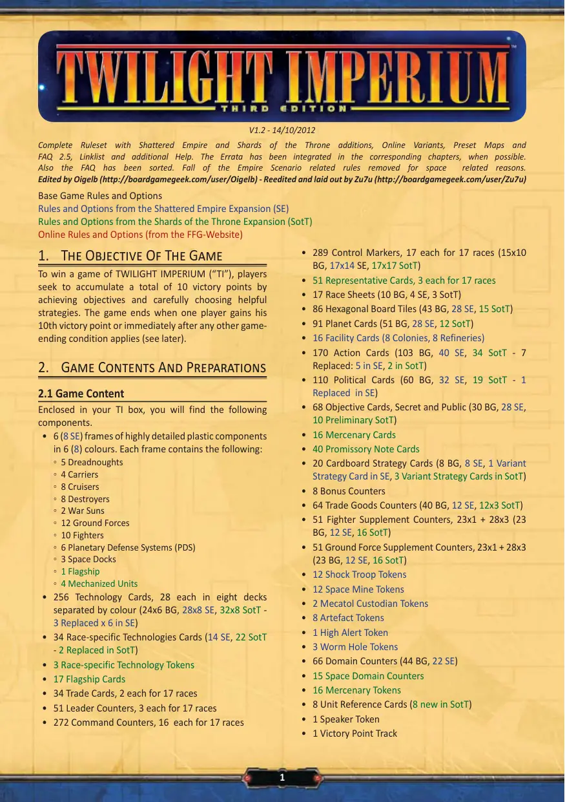
<figcaption>原版规则书 · 第 1 页（点击图片放大）</figcaption>
</figure>

<details class="mt-fold">
<summary>📝 第 1 页 AI 机翻对照（点击展开）</summary>
<div class="mt-body"><h3>1. 游戏目标</h3>

<p>要在《群星》（TWILIGHT IMPERIUM，简称"TI"）游戏中获胜，玩家需要通过达成目标并谨慎选择有利策略来积累总共10个胜利点。当一名玩家获得他的第10个胜利点，或在任何其他游戏结束条件立即适用时（见后文），游戏结束。</p>

<h3>2. 游戏内容与准备</h3>

<p>2.1 游戏内容</p>

<p>在你的TI盒子里，你会找到以下组件。</p>

<p>• 6个（8个SE版）高度详细的塑料组件框架，有6种（8种）颜色。每个框架包含以下内容：</p>

<p>◦◦5艘无畏舰</p>

<p>◦◦4艘航母</p>

<p>◦◦8艘巡洋舰</p>

<p>◦◦8艘驱逐舰</p>

<p>◦◦2艘太阳战舰</p>

<p>◦◦12支地面部队</p>

<p>◦◦10架战斗机</p>

<p>◦◦6个行星防御系统（PDS）</p>

<p>◦◦3个太空船坞</p>

<p>◦◦1艘旗舰</p>

<p>◦◦4个机械化单位</p>

<p>• 256张科技卡牌，8个牌组，每组28张，按颜色分隔（24x6 BG，28x8 SE，32x8 SotT - SE中有3张被替换为6张）</p>

<p>• 34张种族专属科技卡牌（14张SE，22张SotT - SotT中有2张被替换）</p>

<p>• 3个种族专属科技指示物</p>

<p>• 17张旗舰卡牌</p>

<p>• 34张贸易卡牌，17个种族各2张</p>

<p>• 51个领袖指示物，17个种族各3个</p>

<p>• 272个指挥指示物，17个种族各16个</p>

<p>• 289个控制标记，17个种族各17个（15x10 BG，17x14 SE，17x17 SotT）</p>

<p>• 51个代表卡牌，17个种族各3张</p>

<p>• 17张种族版（10张BG，4张SE，3张SotT）</p>

<p>• 86个六边形板块（43张BG，28张SE，15张SotT）</p>

<p>• 91张行星卡牌（51张BG，28张SE，12张SotT）</p>

<p>• 16张设施卡牌（8个殖民地，8个炼油厂）</p>

<p>• 170张行动卡牌（103张BG，40张SE，34张SotT - 7张被替换：5张在SE中，2张在SotT中）</p>

<p>• 110张政治卡牌（60张BG，32张SE，19张SotT - 1张在SE中被替换）</p>

<p>• 68张目标卡牌，秘密和公开（30张BG，28张SE，10张初步SotT）</p>

<p>• 16张雇佣兵卡牌</p>

<p>• 40张期票卡牌</p>

<p>• 20张纸板策略卡牌（8张BG，8张SE，SE中有1张变体策略卡，SotT中有3张变体策略卡）</p>

<p>• 8个奖励指示物</p>

<p>• 64个贸易商品指示物（40张BG，12张SE，12x3 SotT）</p>

<p>• 51个战斗机补充指示物，23x1 + 28x3（23张BG，12张SE，16张SotT）</p>

<p>• 51个地面部队补充指示物，23x1 + 28x3（23张BG，12张SE，16张SotT）</p>

<p>• 12个突击部队指示物</p>

<p>• 12个太空地雷指示物</p>

<p>• 2个梅卡托监护者指示物</p>

<p>• 8个神器指示物</p>

<p>• 1个高度戒备指示物</p>

<p>• 3个虫洞指示物</p>

<p>• 66个领域指示物（44张BG，22张SE）</p>

<p>• 15个太空领域指示物</p>

<p>• 16个雇佣兵指示物</p>

<p>• 8个单位参考卡（SotT中有8张新的）</p>

<p>• 1个发言者指示物</p>

<p>• 1个胜利点轨道</p>

<p>V1.2 - 14/10/2012</p>

<p>包含破碎帝国（Shattered Empire）和王座碎片（Shards of the Throne）扩展的完整规则集，在线变体，预设地图和FAQ 2.5，链接列表和额外帮助。勘误已尽可能整合到相应章节中。FAQ也已整理。由于空间相关原因，已删除帝国陨落场景的相关规则。</p>

<p>由 Oigelb 编辑 (http://boardgamegeek.com/user/Oigelb) - 由 Zu7u 重新编辑和排版 (http://boardgamegeek.com/user/Zu7u)</p>

<p>基础游戏规则与选项</p>

<p>破碎帝国扩展(SE)的规则与选项</p>

<p>王座碎片扩展(SotT)的规则与选项</p>

<p>在线规则与选项(来自FFG官网)</p></div>
</details>

<figure>
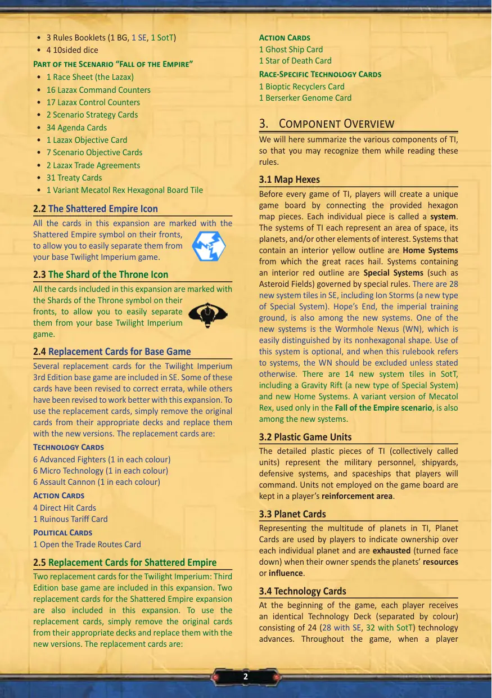
<figcaption>原版规则书 · 第 2 页（点击图片放大）</figcaption>
</figure>

<details class="mt-fold">
<summary>📝 第 2 页 AI 机翻对照（点击展开）</summary>
<div class="mt-body"><p>•	 3本规则书（1本基础版，1本破碎帝国版，1本王座碎片版）</p>

<p>•	 4个十面骰</p>

<p>"帝国陨落"场景的一部分</p>

<p>•	 1个种族卡（拉扎克斯人）</p>

<p>•	 16个拉扎克斯指挥指示物</p>

<p>•	 17个拉扎克斯控制指示物</p>

<p>•	 2个场景策略卡</p>

<p>•	 34个议程卡</p>

<p>•	 1个拉扎克斯目标卡</p>

<p>•	 7个场景目标卡</p>

<p>•	 2个拉扎克斯贸易协定</p>

<p>•	 31个条约卡</p>

<p>•	 1个变体梅卡托尔雷克斯六边形板块</p>

<p>2.2 破碎帝国图标</p>

<p>本扩展中的所有卡牌正面都标有破碎帝国标志，</p>

<p>以便您轻松地将它们与</p>

<p>您的《星际迷航：帝国黄昏》基础游戏区分开。</p>

<p>2.3 王座碎片图标</p>

<p>本扩展中包含的所有卡牌正面都标有</p>

<p>王座碎片标志，以便您轻松地将它们与</p>

<p>您的《星际迷航：帝国黄昏》基础游戏区分开。</p>

<p>2.4 基础游戏的替换卡</p>

<p>SE中包含了《星际迷航：帝国黄昏》第三版</p>

<p>基础游戏的几张替换卡。其中一些卡牌已修订</p>

<p>以勘误，而另一些卡牌已修订以更好地</p>

<p>与此扩展配合使用。要使用替换卡，</p>

<p>只需从相应的牌库中移除原始卡牌，</p>

<p>并用新版本替换即可。替换卡如下：</p>

<p>科技卡</p>

<p>6张先进战斗机（每种颜色1张）</p>

<p>6张微科技（每种颜色1张）</p>

<p>6张突击炮（每种颜色1张）</p>

<p>行动卡</p>

<p>4张直接命中卡</p>

<p>1张毁灭性关税卡</p>

<p>政治卡</p>

<p>1张开放贸易路线卡</p>

<p>2.5 破碎帝国的替换卡</p>

<p>本扩展中包含了《星际迷航：帝国黄昏：第三版》</p>

<p>基础游戏的2张替换卡。还包含了</p>

<p>破碎帝国扩展的2张替换卡。要使用替换卡，</p>

<p>只需从相应的牌库中移除原始卡牌，</p>

<p>并用新版本替换即可。替换卡如下：</p>

<p>行动卡</p>

<p>1个幽灵飞船卡</p>

<p>1个死亡之星卡</p>

<p>种族专属科技卡</p>

<p>1个生物回收器卡</p>

<p>1个狂暴基因组卡</p>

<h3>3. 组件概览</h3>

<p>在此我们将总结TI的各种组件，</p>

<p>以便您在阅读这些规则时能够识别它们。</p>

<p>3.1 地图板块</p>

<p>在每次TI游戏前，玩家将通过连接提供的</p>

<p>六边形地图板块创建一个独特的游戏版图。</p>

<p>每个单独的板块被称为一个星系。</p>

<p>TI的每个星系代表一个太空区域，</p>

<p>其行星和/或其他感兴趣的元素。</p>

<p>包含内部黄色轮廓的星系是</p>

<p>伟大种族的母星系。包含内部红色轮廓的星系是</p>

<p>特殊星系（如小行星场），由特殊规则管理。</p>

<p>SE中有28个新的星系板块，包括</p>

<p>离子风暴（一种新的特殊星系类型）。</p>

<p>希望之终，帝国训练场，也是新的星系之一。其中一个是</p>

<h2>3.1 新系统</h2>

<p>新系统是虫洞枢纽（WN），它可以通过其非六边形的形状轻松识别。使用此系统是可选的，当本规则书提到系统时，应排除虫洞枢纽，除非另有说明。《群星的轨迹》（SotT）中有14个新系统板块，包括一个引力裂隙（一种新的特殊系统类型）和新的母星系统。一个仅用于"帝国陨落"场景的 Mecatol Rex 变体版本也包含在新系统中。</p>

<h2>3.2 塑料游戏单位</h2>

<p>TI 的精细塑料部件（统称为单位）代表玩家将指挥的军事人员、造船厂、防御系统和宇宙飞船。未在游戏版图上使用的单位保存在玩家的增援区。</p>

<h2>3.3 行星卡</h2>

<p>代表 TI 中众多行星的行星卡，用于玩家表明对各行星的所有权，当所有者消耗行星的资源或影响力时，这些卡会被耗尽（翻面）。</p>

<h2>3.4 科技卡</h2>

<p>游戏开始时，每位玩家获得一套相同的科技牌库（按颜色分隔），包含24项科技进步（使用 SE 时为28项，使用 SotT 时为32项）。在整个游戏中，当玩家</p></div>
</details>

<figure>
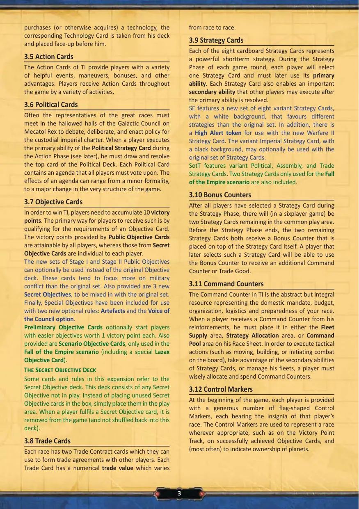
<figcaption>原版规则书 · 第 3 页（点击图片放大）</figcaption>
</figure>

<details class="mt-fold">
<summary>📝 第 3 页 AI 机翻对照（点击展开）</summary>
<div class="mt-body"><p>玩家（或以其他方式）获得一项技术时，相应的技术卡牌将从其牌库中取出，并面朝上地放置在他面前。</p>

<h3>3.5 行动卡牌</h3>

<p>TI的行动卡牌为玩家提供各种有益的事件、策略、奖励和其他优势。玩家通过各种活动在游戏过程中获得行动卡牌。</p>

<h3>3.6 政治卡牌</h3>

<p>伟大种族的代表们经常需要在梅卡托尔雷克斯（Mecatol Rex）的神圣议会大厅会面，讨论、审议并制定监护帝国宪章的政策。当玩家在行动阶段执行政治策略卡牌的主要能力时（参见后文），他必须抽取并解决政治牌堆顶部的卡牌。每张政治卡牌包含一项所有玩家必须投票表决的议程。议程的效果可能从一种形式上的小事，到对游戏结构本身的重大改变不等。</p>

<h3>3.7 目标卡牌</h3>

<p>为了赢得TI，玩家需要累积10个胜利点。玩家获得胜利点的主要方式是满足目标卡牌的要求。公共目标卡牌提供的胜利点所有玩家都可以获得，而秘密目标卡牌的胜利点则是个性化的。</p>

<p>新的第一阶段和第二阶段公共目标卡牌可以选择性地替代原始目标牌组使用。这些卡牌比原始套装更侧重于军事冲突。还提供了3张新的秘密目标卡牌，与原始套装混合使用。最后，特别目标卡牌已包含在内，用于两个新的可选规则：神器和议会之声选项。</p>

<p>初步目标卡牌可选择性地让玩家以每个1个胜利点的价值开始游戏，拥有更容易的目标。还提供了场景目标卡牌，仅在帝国陨落场景中使用（包括一张特殊的拉扎克斯（Lazax）目标卡牌）。</p>

<p>秘密目标牌堆</p>

<p>本扩展中的一些卡牌和规则指的是秘密目标牌堆。这个牌堆由任何未使用的秘密目标卡牌组成。不要将未使用的秘密目标卡牌放入盒中，而是直接将其放置在游戏区域。当玩家完成一张秘密目标卡牌时，它将被移出游戏（并且不会洗回这个牌堆）。</p>

<h3>3.8 贸易卡牌</h3>

<p>每个种族有两张贸易契约卡牌，可用于与其他玩家形成贸易协议。每张贸易卡牌都有一个数值贸易价值，因种族而异。</p>

<h3>3.9 策略卡牌</h3>

<p>八张纸板策略卡牌中的每一张都代表一个强大的短期策略。在每个游戏回合的策略阶段，每位玩家将选择一张策略卡牌，并且之后必须使用其主要能力。每张策略卡牌还 enables 一个重要的</p>

<p>3.10 奖励指示物</p>

<p>在所有玩家在战略阶段选择了战略卡牌后，（在六人游戏中）将有两张战略卡牌留在公共游戏区域。在战略阶段结束前，这两张剩余的战略卡牌都会获得一个奖励指示物，该指示物被放置在战略卡牌本身之上。之后选择此类战略卡的玩家将能够使用奖励指示物来获得额外的指挥指示物或贸易品。</p>

<p>3.11 指挥指示物</p>

<p>在TI中，指挥指示物是代表你种族的国内授权、预算、组织、后勤和战备的抽象但必不可少的资源。当玩家从其增援中获得指挥指示物时，他必须将其放置在其种族版图上的舰队补给区、战略分配区或指挥池区中。为了执行战术行动（如在版图上移动、建造或发起战斗）、利用战略卡牌的次要能力或管理其舰队，玩家必须明智地分配和使用指挥指示物。</p>

<p>3.12 控制标记</p>

<p>游戏开始时，每位玩家都会获得大量旗帜形状的控制标记，每个标记上都带有该玩家种族的徽章。控制标记用于在适当的地方代表一个种族，例如在胜利点轨道上、在成功达成的目标卡牌上，以及（最常见的是）表示行星的所有权。</p></div>
</details>

<figure>
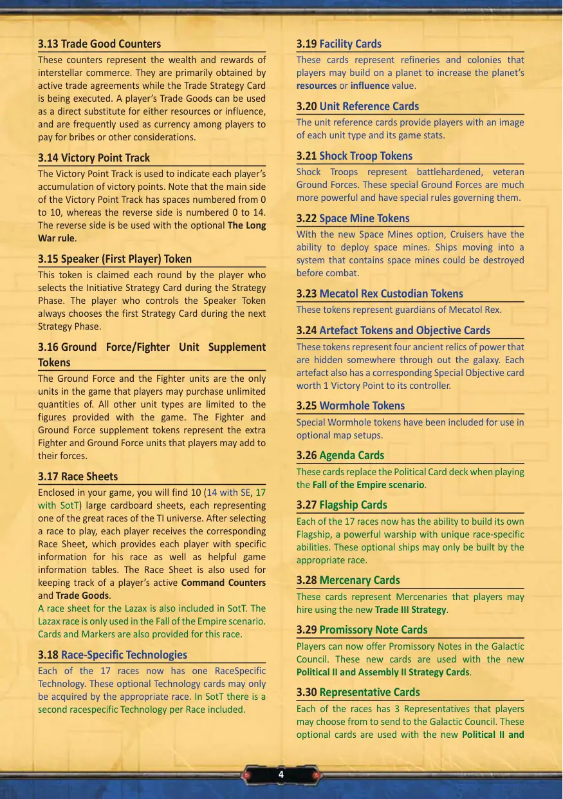
<figcaption>原版规则书 · 第 4 页（点击图片放大）</figcaption>
</figure>

<details class="mt-fold">
<summary>📝 第 4 页 AI 机翻对照（点击展开）</summary>
<div class="mt-body"><p>3.13 贸易品指示物</p>

<p>这些指示物代表星际贸易的财富和奖励。它们主要通过执行贸易策略卡时通过活跃的贸易协议获得。玩家的贸易品可作为资源或影响力的直接替代品使用，并且经常被玩家用作货币来支付贿赂或其他报酬。</p>

<p>3.14 胜利点轨道</p>

<p>胜利点轨道用于显示每位玩家积累的胜利点。请注意，胜利点轨道的主面有从0到10编号的格子，而反面则有从0到14编号的格子。反面将与可选的"漫长战争"规则一起使用。</p>

<p>3.15 主持人（首位玩家）指示物</p>

<p>每位回合中，选择策略阶段中的主动策略卡的玩家将获得此指示物。控制主持人指示物的玩家在下一个策略阶段总是首先选择策略卡。</p>

<p>3.16 地面部队/战斗机单位补充指示物</p>

<p>地面部队和战斗机是游戏中唯一允许玩家无限量购买的单位。所有其他单位类型都限于游戏提供的模型。战斗机和地面部队补充指示物代表玩家可以添加到其部队中的额外战斗机和地面部队单位。</p>

<p>3.17 种族版图</p>

<p>在你的游戏中，你会发现10张（SE版为14张，SotT版为17张）大型纸板，每张代表TI宇宙中的一个伟大种族。选择要扮演的种族后，每位玩家会获得相应的种族版图，为每位玩家提供其种族的特定信息以及有用的游戏信息表格。种族版图也用于记录玩家的活跃指挥官指示物和贸易品。</p>

<p>SotT中还包含了Lazax种族的版图。Lazax种族仅在"帝国陨落"场景中使用。该种族也提供了卡牌和指示物。</p>

<p>3.18 种族专属科技</p>

<p>现在17个种族中的每一个都有一个种族专属科技。这些可选的科技卡只能由相应的种族获取。在SotT中，每个种族还包含第二张种族专属科技。</p>

<p>3.19 设施卡</p>

<p>这些卡牌代表玩家可以在行星上建造的炼油厂和殖民地，以增加行星的资源或影响力值。</p>

<p>3.20 单位参考卡</p>

<p>单位参考卡为玩家提供了每种单位类型的图像及其游戏数据。</p>

<p>3.21 突击部队指示物</p>

<p>突击部队代表身经百战的老兵地面部队。这些特殊的地面部队更加强大，并有特殊规则管理它们。</p>

<p>3.22 太空地雷指示物</p>

<p>通过新的太空地雷选项，巡洋舰有能力部署太空地雷。舰船进入一个</p>

<h2>3.23 梅卡托尔雷克斯守护者指示物</h2>

<p>这些指示物代表梅卡托尔雷克斯的守护者。</p>

<h2>3.24 文物指示物和目标卡</h2>

<p>这些指示物代表四个隐藏在银河系某处的古老力量文物。每个文物也对应一张特殊目标卡，其控制者可获得1个胜利点。</p>

<h2>3.25 虫洞指示物</h2>

<p>特殊虫洞指示物已包含在内，用于可选的地图设置。</p>

<h2>3.26 议程卡</h2>

<p>在玩"帝国陨落"情境时，这些卡牌会取代政治卡牌库。</p>

<h2>3.27 旗舰卡</h2>

<p>现在17个种族中的每一个都有能力建造自己的旗舰，这是一艘具有独特种族专属能力的强大战舰。这些可选舰船只能由相应种族建造。</p>

<h2>3.28 雇佣兵卡</h2>

<p>这些卡牌代表玩家可以使用新的贸易III策略雇佣的雇佣兵。</p>

<h2>3.29 本票卡</h2>

<p>玩家现在可以在银河议会中提供本票。这些新卡牌与新的政治II和议会II策略卡一起使用。</p>

<h2>3.30 代表卡</h2>

<p>每个种族有3名代表，玩家可以选择他们派往银河议会。这些可选卡牌与新的政治II和议会II策略卡一起使用。</p></div>
</details>

<figure>
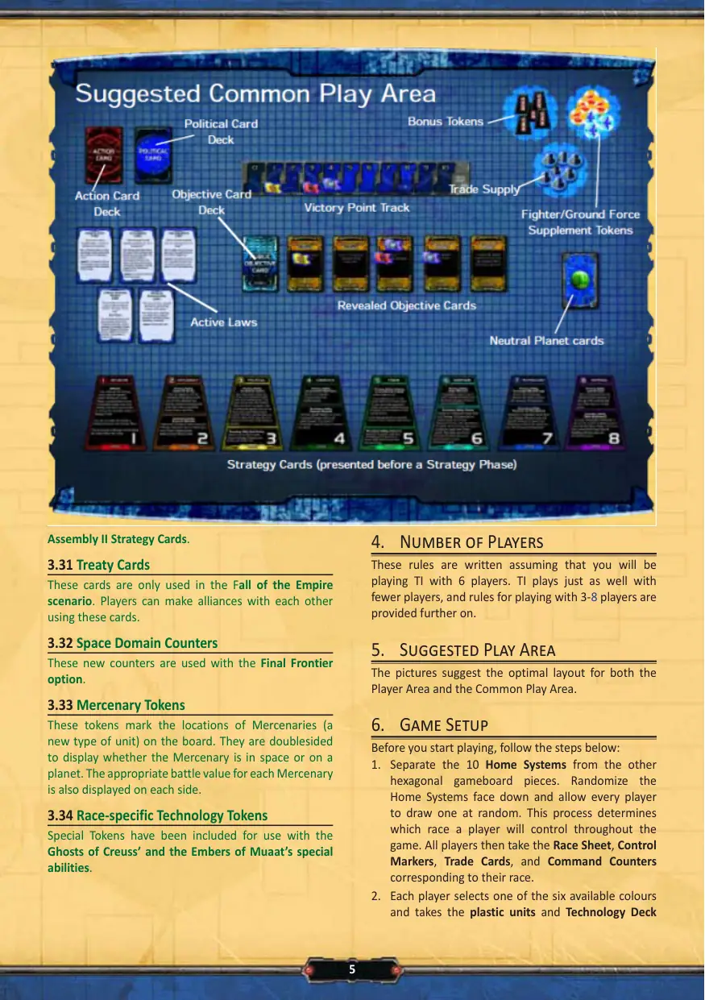
<figcaption>原版规则书 · 第 5 页（点击图片放大）</figcaption>
</figure>

<details class="mt-fold">
<summary>📝 第 5 页 AI 机翻对照（点击展开）</summary>
<div class="mt-body"><p>集会II策略卡。</p>

<h3>3.31 条约卡</h3>

<p>这些卡牌仅在帝国陨落场景中使用。玩家可以使用这些卡牌彼此结盟。</p>

<h3>3.32 太空领域指示物</h3>

<p>这些新的指示物与最终边疆选项一起使用。</p>

<h3>3.33 雇佣兵指示物</h3>

<p>这些指示物标记版图上雇佣兵（一种新单位类型）的位置。它们是双面的，以显示雇佣兵是在太空还是行星上。每面也显示了每个雇佣兵的相应战斗值。</p>

<h3>3.34 种族专属科技指示物</h3>

<p>为配合克鲁斯之鬼和穆阿特余烬的特殊能力，包含了特殊指示物。</p>

<h3>4. 玩家人数</h3>

<p>这些规则是假设您将进行6人TI游戏编写的。TI游戏在较少玩家的情况下同样可以很好地进行，后续提供了3-8人游戏的规则。</p>

<h3>5. 建议游戏区域</h3>

<p>图片显示了玩家区域和公共游戏区域的最佳布局。</p>

<h3>6. 游戏设置</h3>

<p>在开始游戏前，请遵循以下步骤：</p>

<ol>
  <li>将10个母星系统与其他六边形游戏板块分开。将母星系统面朝下随机化，并允许每位玩家随机抽取一个。此过程决定了玩家在整个游戏中将控制的种族。然后所有玩家取走与其种族对应的种族表、控制标记、贸易卡和指挥指示物。</li>
  <li>每位玩家选择六种可用颜色中的一种，并拿取塑料单位和技术牌库。</li>
</ol></div>
</details>

<figure>
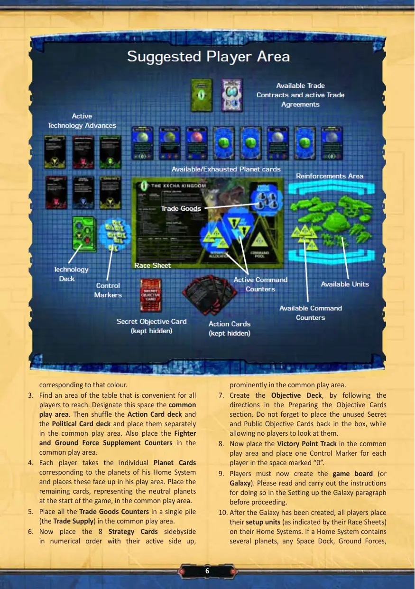
<figcaption>原版规则书 · 第 6 页（点击图片放大）</figcaption>
</figure>

<details class="mt-fold">
<summary>📝 第 6 页 AI 机翻对照（点击展开）</summary>
<div class="mt-body"><p>与该颜色相对应。</p>

<h3>3. 找到一个所有玩家都能方便触及的桌面区域。将此区域指定为公共游戏区域。然后洗混行动牌库和政治牌库，并将它们分别放置在公共游戏区域。同时将战斗机和地面部队补充指示物也放置在公共游戏区域。</h3>

<h3>4. 每位玩家取走与其母星行星对应的个人行星牌，并将这些牌面朝上放置在其游戏区域中。将代表游戏中立行星的剩余牌放置在公共游戏区域。</h3>

<h3>5. 将所有贸易货物指示物堆叠成单个堆（贸易供应），放置在公共游戏区域。</h3>

<ol>
  <li>现在将8张策略牌按数字顺序并排放置，正面朝上，显眼地放在公共游戏区域。</li>
</ol>

<h3>7. 通过遵循"准备目标牌"部分的说明创建目标牌库。不要忘记将未使用的秘密和公共目标牌放回盒中，同时不允许任何玩家查看它们。</h3>

<h3>8. 现在将胜利点轨道放置在公共游戏区域，并为每位玩家放置一个控制标记在标记为"0"的格上。</h3>

<ol>
  <li>玩家现在必须创建游戏版图（或银河）。在继续之前，请阅读并执行"设置银河"段落中的说明。</li>
</ol>

<h3>10. 银河创建完成后，所有玩家将其初始单位（如其种族表所示）放置在其母星系统中。如果一个母星系统包含多个行星，任何太空码头、地面部队，</h3></div>
</details>

<figure>
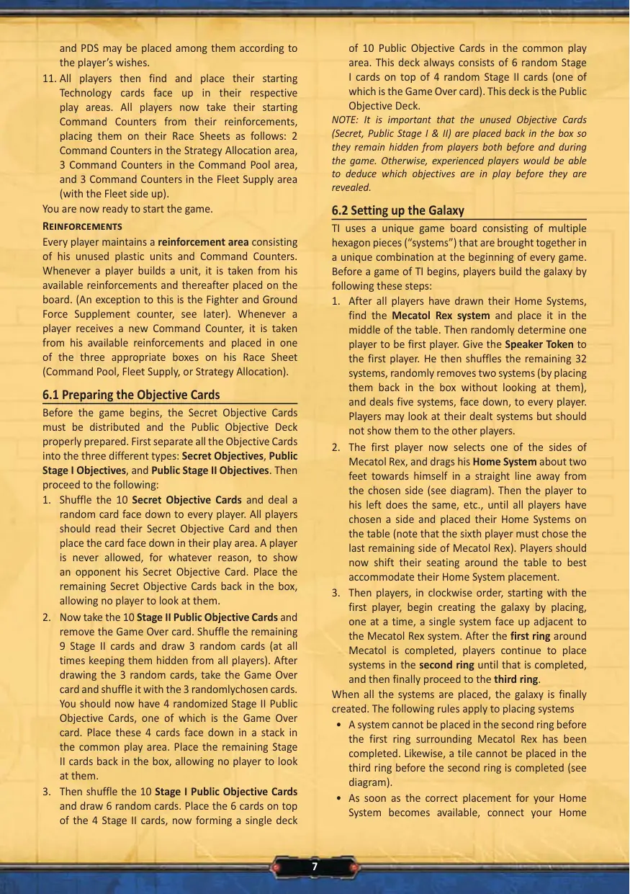
<figcaption>原版规则书 · 第 7 页（点击图片放大）</figcaption>
</figure>

<details class="mt-fold">
<summary>📝 第 7 页 AI 机翻对照（点击展开）</summary>
<div class="mt-body"><p>并且PDS可根据玩家的愿望放置在它们之间。</p>

<h3>11. 然后所有玩家找到并翻开他们的起始科技卡牌，放置在他们各自的游戏区域中。现在所有玩家从他们的增援部队中取出他们的起始指挥官指示物，按照如下方式放置在他们的种族表上：2个指挥官指示物在战略分配区域，3个指挥官指示物在指挥池区域，3个指挥官指示物在舰队供应区域（舰队面朝上）。</h3>

<p>你现在可以开始游戏了。</p>

<p>增援部队</p>

<p>每个玩家维护一个增援区域，包含其未使用的塑料单位和指挥官指示物。每当玩家建造一个单位，就从其可用增援部队中取出该单位，然后放置在版图上。（对此的例外是战斗机和地面部队补充指示物，请参见后续）。每当玩家获得新的指挥官指示物，就从其可用增援部队中取出该指示物，并放置在其种族表上的三个适当框格中的一个（指挥池、舰队供应或战略分配）。</p>

<h3>6.1 准备目标卡牌</h3>

<p>游戏开始前，必须分发秘密目标卡牌并正确准备公共目标牌库。首先将所有目标卡牌分为三种不同类型：秘密目标、公共阶段I目标和公共阶段II目标。然后进行以下步骤：</p>

<ol>
  <li>洗混10张秘密目标卡牌，随机发给每位玩家一张面朝下的卡牌。所有玩家应阅读他们的秘密目标卡牌，然后将卡牌面朝下放置在他们的游戏区域中。无论出于何种原因，玩家都不允许向对手展示其秘密目标卡牌。将剩余的秘密目标卡牌放回盒中，不允许任何玩家查看它们。</li>
  <li>现在取出10张阶段II公共目标卡牌，移除游戏结束卡牌。洗混剩余的9张阶段II卡牌，随机抽取3张卡牌（始终保持对所有玩家隐藏）。抽取3张随机卡牌后，取出游戏结束卡牌，并将其与3张随机选择的卡牌一起洗混。你现在应该有4张随机化的阶段II公共目标卡牌，其中一张是游戏结束卡牌。将这4张卡牌面朝下叠放在公共游戏区域中。将剩余的阶段II卡牌放回盒中，不允许任何玩家查看它们。</li>
  <li>然后洗混10张阶段I公共目标卡牌，随机抽取6张卡牌。将这6张卡牌放在4张阶段II卡牌的顶部，现在在公共游戏区域中形成一个包含10张公共目标卡牌的单一副牌。这副牌始终由顶部的6张随机阶段I卡牌和底部的4张随机阶段II卡牌组成（其中一张是游戏结束卡牌）。这副牌就是公共目标牌库。</li>
</ol>

<p>注意：未使用的目标卡牌很重要</p>

<p>（秘密阶段I和II）放回盒中，这样它们在游戏前和游戏期间都对玩家保持隐藏。否则，有经验的玩家就能在目标揭示前推断出哪些目标在游戏中。</p>

<h2>6.2 设置银河系</h2>

<p>TI使用一个独特的游戏版图，由多个六边形板块（"系统"）组成，在每局游戏开始时以独特的组合方式拼接在一起。在TI游戏开始前，玩家通过以下步骤构建银河系：</p>

<h3>1. 所有玩家抽取他们的母星系统后，找到麦卡托尔雷克斯系统并将其放在桌子中央。然后随机确定一位玩家为起始玩家，将发言指示物交给起始玩家。起始玩家洗混剩余的32个系统，随机移除两个系统（通过将它们放回盒中且不查看），然后给每位玩家发五个系统，面朝下。玩家可以查看他们获得的系统，但不应该给其他玩家看。</h3>

<h3>2. 起始玩家现在选择麦卡托尔雷克斯的一个边，将他的母星系统沿着远离所选边的直线方向向自己拖动约两英尺（见图）。然后他左边的玩家做同样的事情，依此类推，直到所有玩家都选择了一个边并将他们的母星系统放在桌上（注意第六个玩家必须选择麦卡托尔雷克斯剩下的最后一个边）。玩家现在应该围绕桌子调整座位，以最好地适应他们的母星系统放置。</h3>

<h3>3. 然后玩家按顺时针顺序，从起始玩家开始，通过一次放置一个系统，面朝上，紧邻麦卡托尔雷克斯系统，开始创建银河系。在麦卡托尔周围的第一环完成后，玩家继续在第二环放置系统，直到完成，然后最后进行第三环。当所有系统都放置好后，银河系最终创建完成。以下规则适用于系统放置：</h3>

<p>• 在环绕麦卡托尔雷克斯的第一环完成前，不能在第二环放置系统。同样，在第二环完成前，不能在第三环放置板块（见图）。</p>

<p>• 一旦你的母星系统的正确放置位置可用，就连接你的母星系统。</p></div>
</details>

<figure>
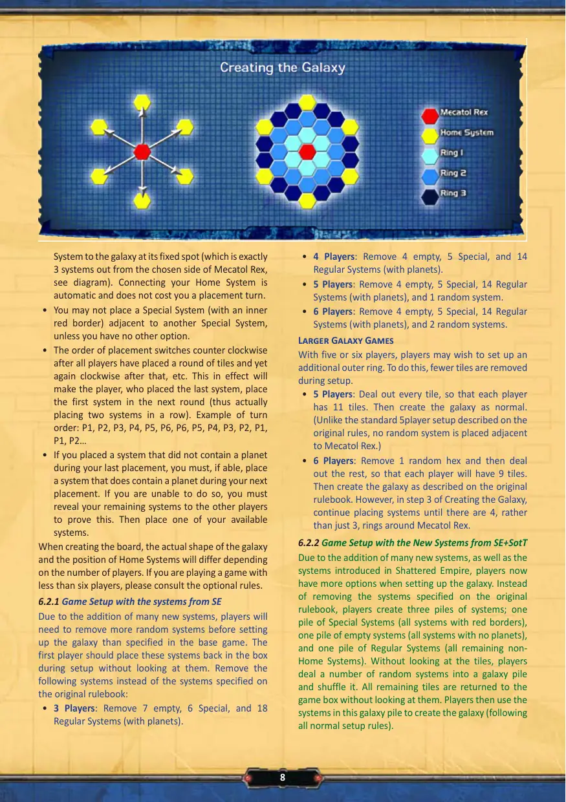
<figcaption>原版规则书 · 第 8 页（点击图片放大）</figcaption>
</figure>

<details class="mt-fold">
<summary>📝 第 8 页 AI 机翻对照（点击展开）</summary>
<div class="mt-body"><p>将你的母星置于其在固定位置（该位置距离梅卡托尔雷克斯(Mecatol Rex)选定的一侧正好3个星系，见图示）。连接你的母星是自动的，且不消耗你的放置回合。</p>

<p>•	 你不得将特殊星系（带有内部红色边框）放置在另一个特殊星系相邻的位置，除非你没有其他选择。</p>

<p>•	 在所有玩家完成一轮板块放置后，放置顺序将逆时针切换，然后再顺时针切换，以此类推。这实际上会使放置最后一个星系的玩家在下一轮中放置第一个星系（因此连续放置两个星系）。回合顺序示例：P1, P2, P3, P4, P5, P6, P6, P5, P4, P3, P2, P1, P1, P2…</p>

<p>•	 如果你上一次放置的星系不包含行星，那么在下次放置时，你必须（如果可能）放置一个包含行星的星系。如果你无法做到这一点，你必须向其他玩家展示你剩余的星系以证明这一点。然后放置一个你可用的星系。</p>

<p>在创建版图时，星系的具体形状和母星的位置会因玩家数量而异。如果你玩的游戏少于六名玩家，请参阅可选规则。</p>

<p>6.2.1 使用SE中的星系进行游戏设置</p>

<p>由于新增了许多星系，玩家在设置星系前需要比基础游戏中指定的移除更多随机星系。第一名玩家在设置过程中应将这些星系放回盒子中且不查看它们。移除以下星系，而非原始规则书中指定的星系：</p>

<p>•	 3名玩家：移除7个空星系、6个特殊星系和18个常规星系（带有行星）。</p>

<p>•	 4名玩家：移除4个空星系、5个特殊星系和14个常规星系（带有行星）。</p>

<p>•	 5名玩家：移除4个空星系、5个特殊星系、14个常规星系（带有行星）和1个随机星系。</p>

<p>•	 6名玩家：移除4个空星系、5个特殊星系、14个常规星系（带有行星）和2个随机星系。</p>

<p>大型星系游戏</p>

<p>对于五名或六名玩家，玩家可能希望设置一个额外的外环。为此，在设置过程中需要移除更少的板块。</p>

<p>•	 5名玩家：分发所有板块，使每位玩家拥有11个板块。然后按常规方式创建星系。（与原始规则书中描述的标准5人设置不同，梅卡托尔雷克斯(Mecatol Rex)旁边不放置随机星系。）</p>

<p>•	 6名玩家：移除1个随机六边形，然后分发其余板块，使每位玩家拥有9个板块。然后按照原始规则书中的描述创建星系。然而，在"创建星系"的步骤3中，继续放置星系，直到梅卡托尔雷克斯周围有4个环，而不仅仅是3个。</p>

<p>6.2.2 使用SE+SotT中的新星系进行游戏设置</p>

<p>由于新增了许多星系，以及</p>

<p>在《破碎帝国》(Shattered Empire)中引入的系统，现在玩家在设置星系时有更多选择。按照原始规则书指定的系统移除方式，玩家创建三个系统堆：一个特殊系统堆（所有带红色边框的系统），一个空系统堆（所有没有行星的系统），以及一个常规系统堆（所有其余的非母星系统）。不看板块，玩家将一定数量的随机系统放入一个星系堆并洗混。所有剩余的板块在不看的情况下放回游戏盒。然后玩家使用这个星系堆中的系统来创建星系（遵循所有正常的设置规则）。</p></div>
</details>

<figure>
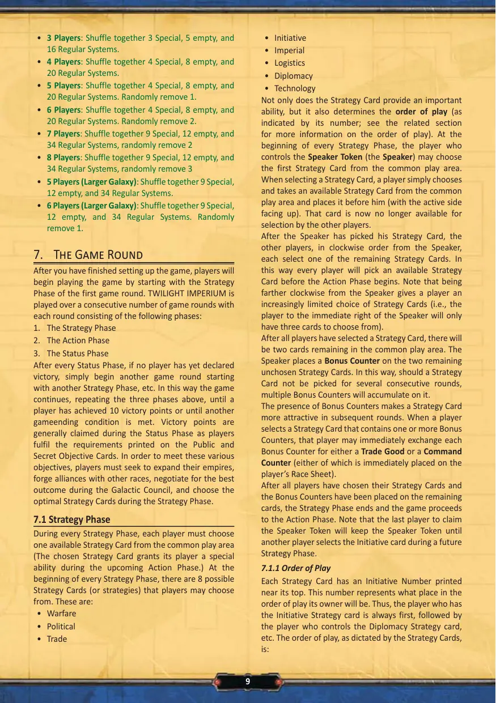
<figcaption>原版规则书 · 第 9 页（点击图片放大）</figcaption>
</figure>

<details class="mt-fold">
<summary>📝 第 9 页 AI 机翻对照（点击展开）</summary>
<div class="mt-body"><p>•	 3名玩家：将3张特殊系统牌、5张空白系统和16张常规系统牌洗混在一起。</p>

<p>•	 4名玩家：将4张特殊系统牌、8张空白系统和20张常规系统牌洗混在一起。</p>

<p>•	 5名玩家：将4张特殊系统牌、8张空白系统和20张常规系统牌洗混在一起。随机移除1张。</p>

<p>•	 6名玩家：将4张特殊系统牌、8张空白系统和20张常规系统牌洗混在一起。随机移除2张。</p>

<p>•	 7名玩家：将9张特殊系统牌、12张空白系统和34张常规系统牌洗混在一起，随机移除2张</p>

<p>•	 8名玩家：将9张特殊系统牌、12张空白系统和34张常规系统牌洗混在一起，随机移除3张</p>

<p>•	 5名玩家（更大星系）：将9张特殊系统牌、12张空白系统和34张常规系统牌洗混在一起。</p>

<p>•	 6名玩家（更大星系）：将9张特殊系统牌、12张空白系统和34张常规系统牌洗混在一起。随机移除1张。</p>

<h3>7. 游戏回合</h3>

<p>当你完成游戏设置后，玩家们将通过开始第一轮的策略阶段来开始游戏。《群星》游戏将连续进行多轮游戏，每轮包含以下阶段：</p>

<h3>1. 策略阶段</h3>

<h3>2. 行动阶段</h3>

<h3>3. 状态阶段</h3>

<p>在每个状态阶段之后，如果没有玩家已经宣布胜利，只需开始另一轮游戏，从另一个策略阶段开始，以此类推。这样游戏继续进行，重复上述三个阶段，直到有玩家获得10个胜利点，或者直到满足其他游戏结束条件。胜利点通常在状态阶段被获取，当玩家完成公共和秘密目标卡上印制的要求时。为了满足这些各种目标，玩家必须寻求扩张他们的帝国，与其他种族结盟，在银河议会期间协商最佳结果，并在策略阶段选择最优的策略卡。</p>

<p>7.1 策略阶段</p>

<p>在每个策略阶段，每个玩家必须从公共游戏区域选择一张可用的策略卡（所选策略卡将在即将到来的行动阶段为其玩家提供特殊能力）。在每个策略阶段开始时，有8张可能的策略卡（或策略）供玩家选择。这些是：</p>

<p>•	 战争</p>

<p>•	 政治</p>

<p>•	 贸易</p>

<p>•	 先机</p>

<p>•	 帝国</p>

<p>•	 后勤</p>

<p>•	 外交</p>

<p>•	 科技</p>

<p>策略卡不仅提供重要能力，还决定了行动顺序（如卡上数字所示；有关行动顺序的更多信息，请参见相关章节）。在每个策略阶段开始时，控制发言者指示物的玩家（发言人）可以从公共游戏区域选择第一张策略卡。当选择策略卡时，玩家只需从公共游戏区域选择并拿取一张可用的策略卡，并将其放在自己面前（有活动的一面）</p>

<p>正面朝上)。该卡牌现在不再可供其他玩家选择。</p>

<p>在发言人选择他的策略卡牌后，其他玩家按顺时针方向从发言人开始，每人选择一张剩余的策略卡牌。这样，在行动阶段开始前，每位玩家都会选择一张可用的策略卡牌。请注意，距离发言人越顺时针的玩家，可选择的策略卡牌就越有限（即，发言人的直接右侧玩家只有三张卡牌可供选择）。</p>

<p>当所有玩家都选择了一张策略卡牌后，公共游戏区域中将剩下两张卡牌。发言人在两张未被选择的剩余策略卡牌上各放置一个奖励指示物。这样，如果一张策略卡牌在连续几轮中未被选择，多个奖励指示物会累积在上面。</p>

<p>奖励指示物的存在使策略卡牌在后续轮次中更具吸引力。当玩家选择包含一个或多个奖励指示物的策略卡牌时，该玩家可以立即将每个奖励指示物兑换为一个贸易品或一个指挥指示物（两者都立即放置在玩家的种族版上）。</p>

<p>当所有玩家都选择了他们的策略卡牌，并且奖励指示物已被放置在剩余卡牌上后，策略阶段结束，游戏进入行动阶段。请注意，最后获得发言人的玩家将保留发言人的身份，直到在未来某个策略阶段有另一位玩家选择先机卡牌。</p>

<p>7.1.1 行动顺序</p>

<p>每张策略卡牌顶部附近印有一个先机编号。这个数字代表其所有者在行动顺序中的位置。因此，拥有先机策略卡牌的玩家总是第一个，接着是控制外交策略卡牌的玩家，依此类推。由策略卡牌决定的行动顺序是：</p></div>
</details>

<figure>
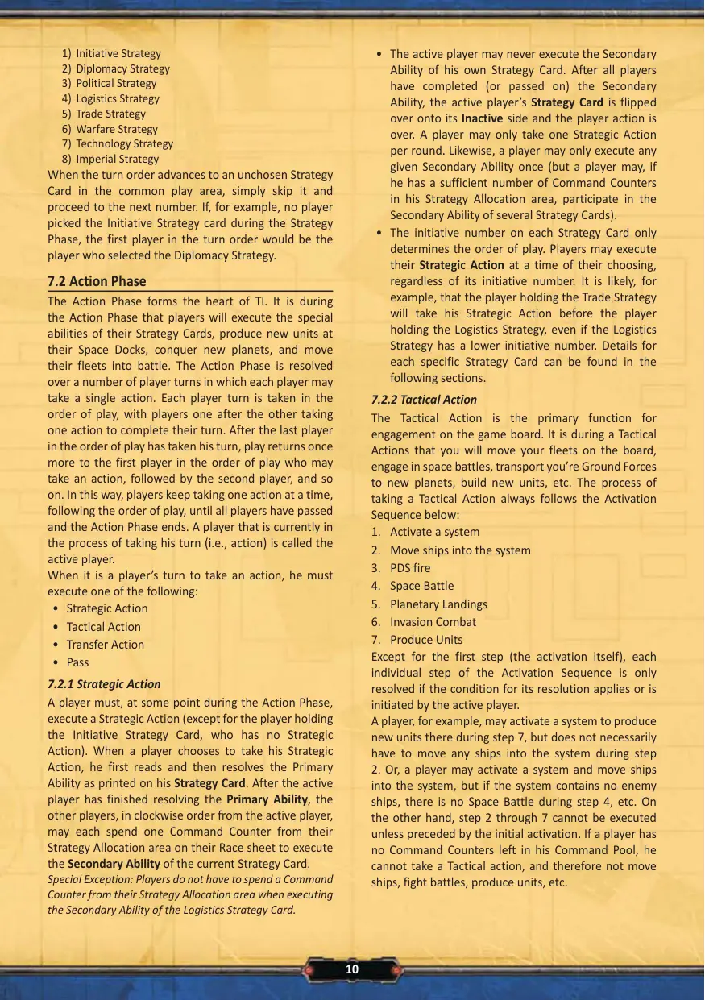
<figcaption>原版规则书 · 第 10 页（点击图片放大）</figcaption>
</figure>

<details class="mt-fold">
<summary>📝 第 10 页 AI 机翻对照（点击展开）</summary>
<div class="mt-body"><h3>1) 先手策略</h3>

<h3>2) 外交策略</h3>

<h3>3) 政治策略</h3>

<h3>4) 后勤策略</h3>

<h3>5) 贸易策略</h3>

<h3>6) 战争策略</h3>

<h3>7) 科技策略</h3>

<h3>8) 帝国策略</h3>

<p>当回合顺序推进到公共游戏区中一张未被选择的策略卡时，直接跳过它并继续下一个数字。例如，如果在策略阶段没有玩家选择先手策略卡，那么回合顺序中的第一位玩家就是选择了外交策略的玩家。</p>

<p>7.2 行动阶段</p>

<p>行动阶段构成了TI的核心。在行动阶段，玩家将执行他们策略卡的特殊能力，在他们的太空船坞生产新单位，征服新星球，并将舰队投入战斗。行动阶段通过多个玩家回合来解决，在每个玩家回合中，每位玩家可以执行一个行动。每个玩家回合按照游戏顺序进行，玩家们轮流执行一个行动来完成他们的回合。在游戏顺序中的最后一位玩家完成他的回合后，游戏再次回到游戏顺序中的第一位玩家，他可以执行一个行动，接着是第二位玩家，以此类推。这样，玩家们按照游戏顺序一次执行一个行动，直到所有玩家都弃权，行动阶段结束。当前正在执行回合（即行动）的玩家称为活跃玩家。</p>

<p>当轮到玩家执行行动时，他必须执行以下之一：</p>

<p>• 战略行动</p>

<p>• 战术行动• 转移行动</p>

<p>• 弃权</p>

<p>7.2.1 战略行动</p>

<p>玩家必须在行动阶段的某个时刻执行战略行动（持有先手策略卡的玩家除外，他没有战略行动）。当玩家选择执行他的战略行动时，他首先阅读然后解决他策略卡上印制的主要能力。在活跃玩家完成解决主要能力后，其他玩家从活跃玩家开始按顺时针方向，可以各自从他们种族纸上的策略分配区域花费一个指挥指示物，来执行当前策略卡的次要能力。</p>

<p>特殊例外：玩家在执行后勤策略卡的次要能力时，不必从他们的策略分配区域花费指挥指示物。</p>

<p>• 活跃玩家永远不能执行他自己策略卡的次要能力。在所有玩家完成（或弃权）次要能力后，活跃玩家的策略卡被翻转到非激活面，玩家行动结束。玩家每轮只能执行一次战略行动。同样，玩家每轮只能执行任何</p>

<p>给予一次次要能力（但如果玩家在他的策略分配区有足够多的指挥指示物，可以参与多张策略卡的次要能力）。</p>

<p>• 每张策略卡上的行动编号仅决定行动顺序。玩家可以在自己选择的时间执行其策略行动，无论其行动编号如何。例如，持有贸易策略的玩家可能会在持有后勤策略的玩家之前采取其策略行动，即使后勤策略的行动编号更低。每张特定策略卡的详细信息可以在以下章节中找到。</p>

<h3>7.2.2 战术行动</h3>

<p>战术行动是在游戏版图上进行交战的主要功能。在战术行动期间，你将在版图上移动舰队、进行太空战斗、运输地面部队到新行星、建造新单位等。采取战术行动的过程总是遵循以下激活序列：</p>

<h3>1. 激活一个系统</h3>

<h3>2. 将舰船移入系统</h3>

<h3>3. 防御系统射击</h3>

<h3>4. 太空战斗</h3>

<h3>5. 行星登陆</h3>

<h3>6. 入侵战斗</h3>

<h3>7. 产生单位</h3>

<p>除了第一步（激活本身）外，激活序列的每个单独步骤只有在满足其解决条件或由主动玩家启动时才会进行。</p>

<p>例如，玩家可以在第7步激活一个系统以在那里生产新单位，但不一定必须在第2步将任何舰船移入系统。或者，玩家可以激活一个系统并将舰船移入系统，但如果该系统不包含敌方舰船，则在第4步不会发生太空战斗，等等。另一方面，如果没有初始激活，第2步到第7步无法执行。如果玩家在他的指挥池中没有剩余的指挥指示物，他无法采取战术行动，因此不能移动舰船、进行战斗、生产单位等。</p></div>
</details>

<figure>
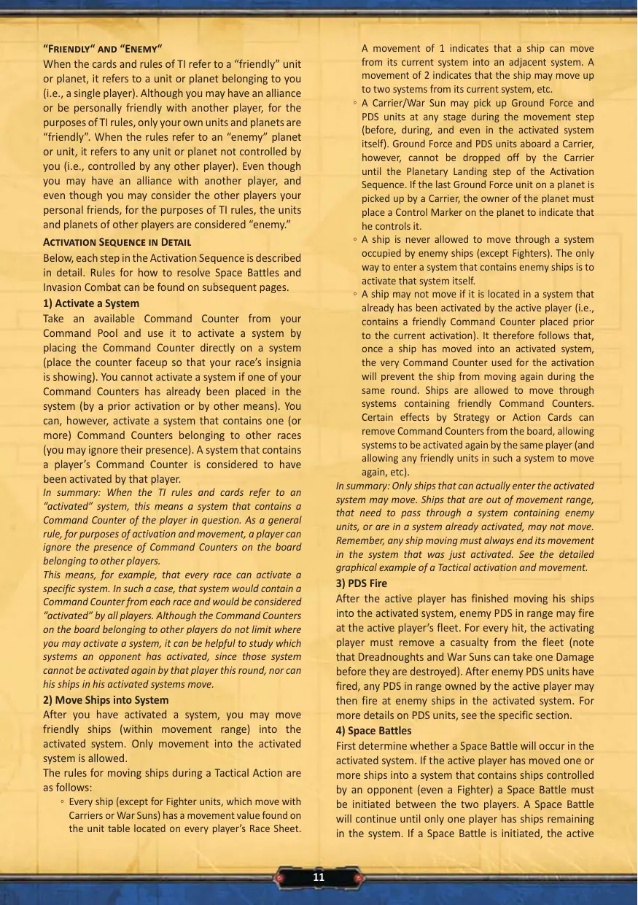
<figcaption>原版规则书 · 第 11 页（点击图片放大）</figcaption>
</figure>

<details class="mt-fold">
<summary>📝 第 11 页 AI 机翻对照（点击展开）</summary>
<div class="mt-body"><p>"友方"与"敌方"</p>

<p>当TI的卡牌和规则提到"友方"单位或星球时，指的是属于你（即单个玩家）的单位或星球。尽管你可能与其他玩家结盟或个人关系友好，但根据TI规则，只有你自己的单位和星球才是"友方"。当规则提到"敌方"星球或单位时，指的是不受你控制的任何单位或星球（即由任何其他玩家控制）。即使你与其他玩家结盟，即使你可能将其他玩家视为个人朋友，根据TI规则，其他玩家的单位和星球被视为"敌方"。</p>

<p>激活序列详解</p>

<p>下面详细描述激活序列中的每个步骤。如何解决太空战斗和入侵战斗的规则可以在后续页面找到。</p>

<h3>1) 激活一个星系</h3>

<p>从你的指挥池中取出一个可用的指挥官指示物，并将其放置在星系上来激活该星系（将指示物正面朝上放置，使你的种族徽章可见）。如果你的一个指挥官指示物已经放置在该星系中（通过先前的激活或其他方式），你不能激活该星系。然而，你可以激活包含一个（或多个）属于其他种族的指挥官指示物的星系（你可以忽略它们的存在）。包含玩家指挥官指示物的星系被认为已被该玩家激活。</p>

<p>总之：当TI规则和卡牌提到一个"已激活"的星系时，这意味着一个包含相关玩家指挥官指示物的星系。作为一般规则，为了激活和移动的目的，玩家可以忽略版图上属于其他玩家的指挥官指示物的存在。</p>

<p>这意味着，例如，每个种族都可以激活特定的星系。在这种情况下，该星系将包含每个种族的指挥官指示物，并且被认为被所有玩家"激活"。尽管版图上属于其他玩家的指挥官指示物不会限制你可以激活星系的位置，但研究对手激活了哪些星系可能会有帮助，因为那些星系本回合不能被该玩家再次激活，而且他已激活星系中的舰船也不能移动。</p>

<h3>2) 将舰船移入星系</h3>

<p>激活一个星系后，你可以将友方舰船（在移动范围内）移入已激活的星系。只允许移入已激活的星系。</p>

<p>在战术行动期间移动舰船的规则如下：</p>

<p>◦◦每艘舰船（除了与航母或战阳舰一起移动的战斗机单位外）都有一个移动值，该值位于每位玩家的种族表上的单位表中。移动值为1表示舰船可以移动</p>

<p>从其当前系统移动到相邻系统。移动2表示飞船可以从其当前系统移动最多两个系统，以此类推。</p>

<p>◦◦航母/战阳可以在移动步骤的任何阶段（之前、期间，甚至在被激活的系统本身）装载地面部队和PDS单位。然而，在激活序列的行星登陆步骤之前，航母上的地面部队和PDS单位不能被卸下。如果行星上的最后一个地面部队单位被航母拾取，行星所有者必须在行星上放置一个控制标记以表示他控制该行星。</p>

<p>◦◦飞船绝不允许穿过被敌方飞船（战斗机除外）占领的系统。进入包含敌方飞船系统的唯一方法是激活该系统本身。</p>

<p>◦◦如果飞船位于已被当前玩家激活的系统（即包含在当前激活前放置的友方指挥计数器）中，则该飞船不能移动。因此可以得出结论，一旦飞船移动到已激活的系统，用于激活的指挥计数器将阻止该飞船在同一轮再次移动。飞船允许穿过包含友方指挥计数器的系统。某些策略或行动卡牌的效果可以移除版图上的指挥计数器，允许同一玩家再次激活系统（并允许此类系统中的任何友方单位再次移动等）。</p>

<p>总之：只有能够实际进入被激活系统的飞船才能移动。超出移动范围、需要穿过包含敌方单位系统或位于已激活系统中的飞船不能移动。请记住，任何移动的飞船必须始终在刚刚被激活的系统结束其移动。参见战术激活和移动的详细图形示例。</p>

<h3>3) PDS射击</h3>

<p>在当前玩家将其飞船移动到被激活系统后，范围内的敌方PDS可以向当前玩家的舰队开火。每次命中，激活玩家必须从舰队中移除一个伤亡单位（请注意，无畏舰和战阳在摧毁前可以承受一次伤害）。敌方PDS单位开火后，当前玩家拥有的任何范围内PDS可以向被激活系统中的敌方飞船开火。有关PDS单位的更多详细信息，请参见特定章节。</p>

<h3>4) 太空战斗</h3>

<p>首先确定被激活系统是否会发生太空战斗。如果当前玩家将一艘或多艘飞船移动到包含对手控制的飞船（即使是战斗机）的系统，则两名玩家之间必须发起太空战斗。太空战斗将持续到系统中只剩一名玩家拥有飞船为止。如果发起太空战斗，当前</p></div>
</details>

<figure>
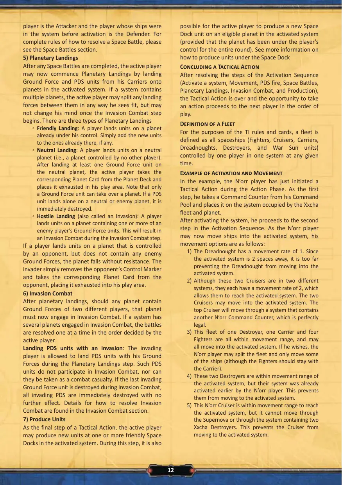
<figcaption>原版规则书 · 第 12 页（点击图片放大）</figcaption>
</figure>

<details class="mt-fold">
<summary>📝 第 12 页 AI 机翻对照（点击展开）</summary>
<div class="mt-body"><p>玩家是攻击方，而激活前其舰船在该系统中的玩家是防御方。关于如何解决太空战斗的完整规则，请参阅太空战斗部分。</p>

<h3>5) 行星登陆</h3>

<p>在完成任何太空战斗后，当前玩家现在可以通过将其地面部队和行星防御系统单位从其航母降落到激活系统中的行星上来开始行星登陆。如果一个系统包含多个行星，当前玩家可以按照他认为合适的任何方式将任何登陆部队分配到它们之间，但在入侵战斗步骤开始后不得改变主意。行星登陆有三种类型</p>

<p>◦◦友好登陆：玩家降落到其已控制的行星上。如果有现有单位，只需将新单位添加到现有单位中。</p>

<p>◦◦中立登陆：玩家降落到中立行星上（即不受任何其他玩家控制的行星）。在中立行星上至少降落地一个地面部队单位后，当前玩家从行星牌库中取出相应的行星卡，并将其放置为耗尽状态在他的游戏区域中。请注意，只有地面部队能够占领一个行星。如果行星防御系统单位单独降落到中立或敌方行星上，它会被立即销毁。</p>

<p>◦◦敌对登陆（也称为入侵）：玩家降落到包含一个或多个敌方玩家地面部队单位的行星上。这将在入侵战斗步骤期间导致入侵战斗。如果玩家降落到由对手控制但不包含任何敌方地面部队的行星上，该行星将无抵抗地陷落。入侵者只需移除对手的控制标记，并从对手那里取出相应的行星卡，将其放置为耗尽状态到自己的游戏区域中。</p>

<h3>6) 入侵战斗</h3>

<p>行星登陆后，如果任何行星包含两个不同玩家的地面部队，该行星现在必须进行入侵战斗。如果一个系统中有多个行星进行入侵战斗，战斗将按照当前玩家决定的顺序逐一解决。</p>

<p>入侵时降落的行星防御系统单位：入侵玩家被允许在行星登陆步骤期间与其地面部队一起降落的行星防御系统单位。此类行星防御系统单位不参与入侵战斗，也不能被作为战斗伤亡。如果在入侵战斗期间最后一个入侵地面部队单位被摧毁，所有入侵的行星防御系统单位将立即被销毁且无进一步效果。如何解决入侵战斗的细节请参阅入侵战斗部分。</p>

<h3>7) 产生单位</h3>

<p>作为战术行动的最后一步，当前玩家可以在激活系统中的一个或多个友好太空船坞产生新单位。在此步骤期间，当前玩家也有可能在激活系统中的一个或多个友好太空船坞产生新的太空</p>

<p>在激活的星系中停靠单位</p>

<p>（前提是该行星在整个轮次中一直处于玩家控制之下）。有关如何在太空船坞下生产单位的更多信息，请参见</p>

<p>结束战术行动</p>

<p>在解决激活序列的步骤（激活星系、移动、PDS射击、太空战斗、行星登陆、入侵战斗和生产）之后，战术行动结束，行动机会按游戏顺序传递给下一位玩家。</p>

<p>舰队的定义</p>

<p>就TI规则和卡牌而言，舰队是指在任意给定时间由一位玩家在一个星系中控制的所有宇宙飞船（战斗机、巡洋舰、航母、战列舰、驱逐舰和太阳战舰单位）。</p>

<p>激活和移动的示例</p>

<p>在示例中，N'orr玩家已在行动阶段发起战术行动。作为第一步，他从他的指挥池中取出一个指挥官指示物，并将其放置在Xxcha舰队和行星所在的星系中。</p>

<p>激活星系后，他继续进行激活序列的第二步。由于N'orr玩家现在可以将舰船移动到激活的星系中，他的移动选项如下：</p>

<ol>
  <li>战列舰的移动率为1。由于激活的星系相隔2个格，距离太远，阻止了战列舰移动到激活的星系。</li>
</ol>

<h3>2) 虽然这两艘巡洋舰位于两个不同的星系，但每艘的移动率都是2，这使它们能够到达激活的星系。这两艘巡洋舰可以移动到激活的星系。顶部的巡洋舰将穿过一个包含另一个N'orr指挥官指示物的星系，这是完全合法的。</h3>

<h3>3) 这支由1艘驱逐舰、1艘航母和4架战斗机组成的舰队都在移动范围内，都可以移动到激活的星系。如果他愿意，N'orr玩家可以分割舰队，只移动部分舰船（尽管战斗机应与航母在一起）。</h3>

<h3>4) 这两艘驱逐舰在激活星系的移动范围内，但它们的星系早先已被N'orr玩家激活。这阻止了它们移动到激活的星系。</h3>

<ol>
  <li>这艘N'orr巡洋舰在移动范围内可以到达激活的星系，但它不能穿过超新星或穿过包含两艘Xxcha驱逐舰的星系。这阻止了巡洋舰移动到激活的星系。</li>
</ol></div>
</details>

<figure>
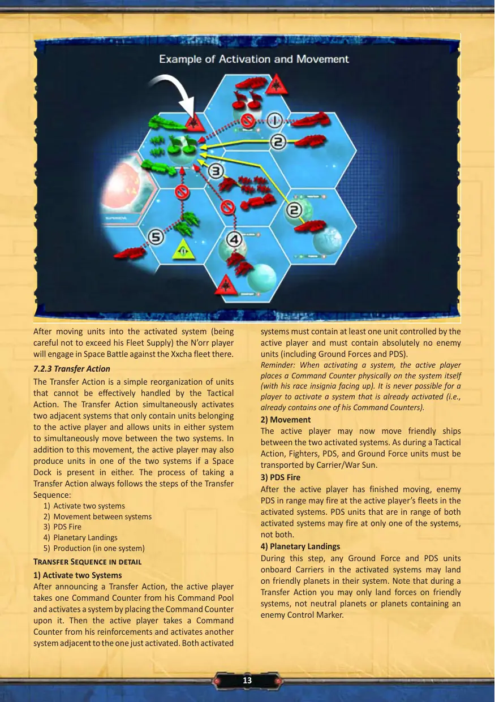
<figcaption>原版规则书 · 第 13 页（点击图片放大）</figcaption>
</figure>

<details class="mt-fold">
<summary>📝 第 13 页 AI 机翻对照（点击展开）</summary>
<div class="mt-body"><p>将单位移动到被激活的星系中（注意不要超过他的舰队供应）后，N'orr玩家将对该星系中的Xxcha舰队进行太空战斗。</p>

<h3>7.2.3 转移行动</h3>

<p>转移行动是一种单位重组，无法通过战术行动有效处理。转移行动同时激活两个仅包含属于当前玩家单位的相邻星系，并允许任一星系中的单位在两个星系之间同时移动。除了这种移动外，如果任一星系中存在太空船坞，当前玩家还可以在这两个星系之一中生产单位。执行转移行动的流程总是遵循转移序列的步骤：</p>

<h3>1) 激活两个星系</h3>

<h3>2) 星系间移动</h3>

<h3>3) PDS射击</h3>

<h3>4) 行星登陆</h3>

<h3>5) 生产（在一个星系中）</h3>

<p>转移序列详解</p>

<h3>1) 激活两个星系</h3>

<p>宣布转移行动后，当前玩家从他的指挥池中取出一个指挥官标记，并将其放置在星系上以激活该星系。然后，当前玩家从他的增援部队中取出一个指挥官标记，并激活一个与刚刚激活的星系相邻的另一个星系。两个被激活的星系必须至少包含一个由当前玩家控制的单位，并且必须绝对不包含任何敌方单位（包括地面部队和PDS）。</p>

<p>提醒：当激活一个星系时，当前玩家将指挥官标记物理地放置在星系本身上（他的种族标志朝上）。玩家永远不可能激活一个已经被激活的星系（即已经包含他的一个指挥官标记）。</p>

<h3>2) 移动</h3>

<p>现在当前玩家可以在两个被激活的星系之间移动友方舰船。与在战术行动中一样，战斗机、PDS和地面部队单位必须由航母/战阳舰运输。</p>

<h3>3) PDS射击</h3>

<p>当前玩家完成移动后，范围内的敌方PDS可以向被激活星系中的当前玩家舰队开火。位于两个被激活星系范围内的PDS单位只能向其中一个星系开火，不能同时向两个星系开火。</p>

<h3>4) 行星登陆</h3>

<p>在此步骤中，被激活星系中航母上的任何地面部队和PDS单位都可以登陆到其星系中的友好行星上。注意，在转移行动中，你只能在友好星系登陆部队，不能登陆到中立行星或包含敌方控制标记的行星上。</p></div>
</details>

<figure>
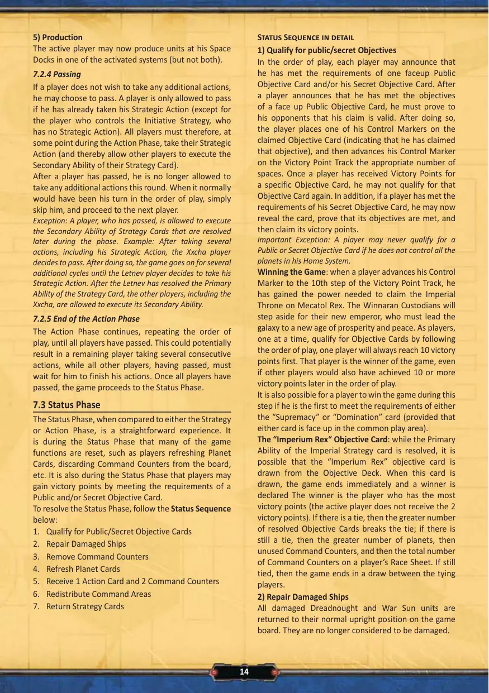
<figcaption>原版规则书 · 第 14 页（点击图片放大）</figcaption>
</figure>

<details class="mt-fold">
<summary>📝 第 14 页 AI 机翻对照（点击展开）</summary>
<div class="mt-body"><h3>5) 生产</h3>

<p>当前玩家现在可以在他已激活的其中一个系统（但不能是两个系统）的太空船坞中生产单位。</p>

<h3>7.2.4 跳过</h3>

<p>如果玩家不希望执行任何额外行动，他可以选择跳过。只有当玩家已经执行了他的战略行动（除了控制主动议策略的玩家，他没有战略行动）时，才允许他跳过。因此，所有玩家都必须在行动阶段的某个时刻执行他们的战略行动（从而允许其他玩家执行他们策略牌的次要能力）。</p>

<p>玩家跳过后，在本轮中不再允许执行任何额外行动。当按照行动顺序轮到他时，直接跳过他，继续下一个玩家。</p>

<p>例外：已跳过的玩家允许执行在本阶段稍后解决的策略牌的次要能力。示例：在执行了包括他的战略行动在内的几个行动后，Xxcha玩家决定跳过。这样做之后，游戏继续进行几个额外周期，直到Letnev玩家决定执行他的战略行动。在Letnev解决了策略牌的主要能力后，其他玩家，包括Xxcha，都可以执行其次要能力。</p>

<h3>7.2.5 行动阶段结束</h3>

<p>行动阶段继续，重复行动顺序，直到所有玩家都跳过。这可能导致剩余的玩家连续执行几个行动，而所有其他玩家在跳过后必须等待他完成他的行动。一旦所有玩家都跳过，游戏进入状态阶段。</p>

<h3>7.3 状态阶段</h3>

<p>与战略阶段或行动阶段相比，状态阶段是一个简单直接的过程。正是在状态阶段，许多游戏功能被重置，例如玩家刷新行星牌、从版图上丢弃指挥指示物等。也正是在状态阶段，玩家可以通过满足公共和/或秘密目标牌的要求来获得胜利点。</p>

<p>要解决状态阶段，请遵循以下状态序列：</p>

<h3>1. 符合公共/秘密目标牌条件</h3>

<h3>2. 修理受损飞船</h3>

<h3>3. 移除指挥指示物</h3>

<h3>4. 刷新行星牌</h3>

<h3>5. 获得1张行动牌和2个指挥指示物</h3>

<h3>6. 重新分配指挥区域</h3>

<h3>7. 归还策略牌</h3>

<p>状态序列详解</p>

<h3>1) 符合公共/秘密目标条件</h3>

<p>按照行动顺序，每个玩家可以宣布他已满足一张正面朝上的公共目标牌和/或他的秘密目标牌的要求。玩家宣布已满足正面朝上的公共目标牌的要求后，他必须向其他玩家证明这一点。</p>

<p>向他的对手证明他的主张是有效的。之后，玩家将他的一个控制指示物放在被主张的目标卡牌上（表明他已经主张了该目标），然后在他的胜利点轨道上将他的控制指示物前进相应的格数。一旦玩家因特定的目标卡牌获得了胜利点，他就不能再次获得该目标卡牌的资格。此外，如果玩家满足了他的秘密目标卡牌的要求，他现在可以揭示该卡牌，证明其目标已达成，然后获得其胜利点。</p>

<p>重要例外：如果玩家不控制其母星系统中的所有行星，他永远不能获得公共或秘密目标卡牌的资格。</p>

<p>赢得游戏：当玩家将他的控制指示物前进到胜利点轨道的第10步时，他已经获得了宣称梅卡托尔雷克斯（Mecatol Rex）帝国宝座所需的权力。温纳兰（Winnaran）守护者将为他们的新皇帝让路，这位新皇帝必须引领银河进入一个繁荣与和平的新时代。玩家们按照行动顺序，一个接一个地通过遵循行动顺序获得目标卡牌的资格，总会有一个玩家首先达到10分。该玩家就是游戏的获胜者，即使其他玩家在行动顺序的后续阶段也会达到10分或更多。</p>

<p>如果玩家是第一个满足"霸权"（Supremacy）或"统治"（Domination）卡牌要求的玩家，也有可能在这一步赢得游戏（前提是这两张卡牌都正面朝上放置在公共游戏区域）。</p>

<p>"帝国之王"（Imperium Rex）目标卡牌：当帝国战略卡牌的主要能力被结算时，可能会从目标牌库中抽取"帝国之王"目标卡牌。当这张卡牌被抽到时，游戏立即结束并宣布获胜者。获胜者是拥有最多胜利点的玩家（当前玩家不获得2分）。如果有平局，则已结算的目标卡牌数量多者获胜；如果仍然平局，则行星数量多者获胜；然后是未使用的指挥标记数量，然后是玩家种族卡上的指挥标记总数。如果仍然平局，则平局玩家之间的游戏以平局结束。</p>

<h3>2) 修理受损战舰</h3>

<p>所有受损的战列舰（Dreadnought）和战阳舰（War Sun）单位都返回到游戏版图上正常的直立位置。它们不再被视为受损。</p></div>
</details>

<figure>
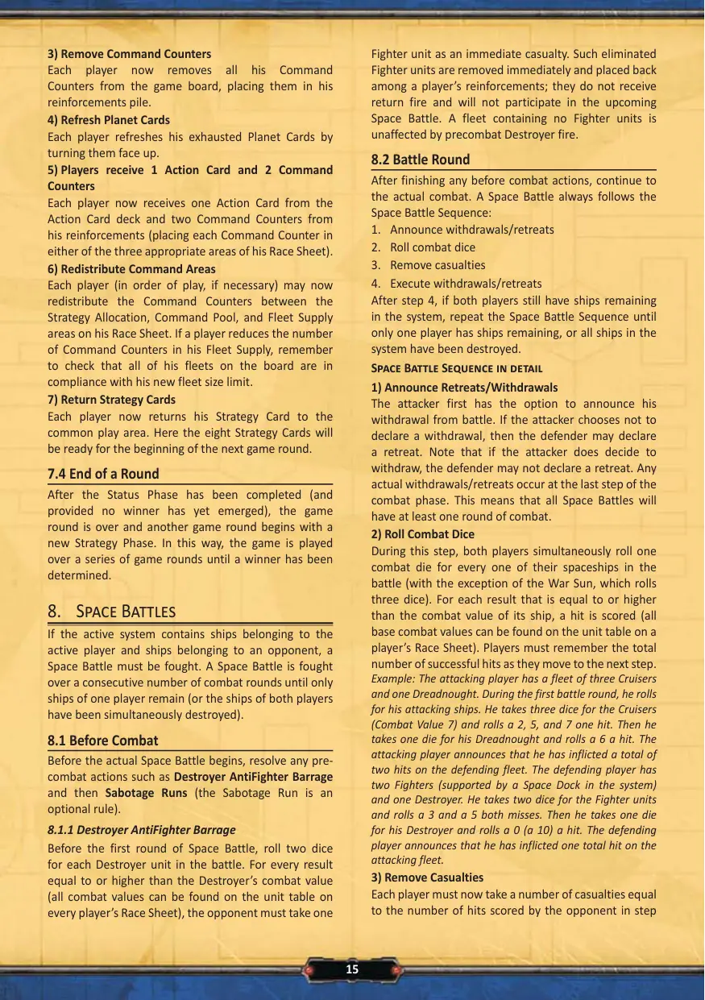
<figcaption>原版规则书 · 第 15 页（点击图片放大）</figcaption>
</figure>

<details class="mt-fold">
<summary>📝 第 15 页 AI 机翻对照（点击展开）</summary>
<div class="mt-body"><h3>3) 移除指挥指示物</h3>

<p>每位玩家现在将其所有的指挥指示物从游戏版图上移除，放入其预备部队堆中。</p>

<h3>4) 刷新星球卡</h3>

<p>每位玩家通过将其翻面来刷新其已耗尽的星球卡。</p>

<ol>
  <li>玩家获得1张行动卡和2个指挥指示物</li>
</ol>

<p>每位玩家现在从行动卡牌库中获得一张行动卡，并从其预备部队中获得两个指挥指示物（将每个指挥指示物放置在其种族表的三个适当区域之一）。</p>

<h3>6) 重新分配指挥区域</h3>

<p>每位玩家（必要时按游戏顺序）现在可以将其指挥指示物重新分配到其种族表上的战略分配、指挥池和舰队供应区域。如果玩家减少了其舰队供应中的指挥指示物数量，请记得检查其版图上的所有舰队是否符合其新的舰队规模限制。</p>

<h3>7) 归还战略卡</h3>

<p>每位玩家现在将其战略卡归还到公共游戏区域。在这里，八张战略卡将为下一个游戏回合的开始做好准备。</p>

<p>7.4 回合结束</p>

<p>当状态阶段完成后（且尚未产生获胜者），游戏回合结束，另一个游戏回合以新的战略阶段开始。通过这种方式，游戏将进行一系列游戏回合，直到确定获胜者。</p>

<h3>8. 太空战斗</h3>

<p>如果活跃系统包含活跃玩家的舰船和对手的舰船，则必须进行太空战斗。太空战斗将连续进行多个战斗回合，直到只剩一位玩家的舰船（或两位玩家的舰船同时被摧毁）。</p>

<p>8.1 战斗前</p>

<p>在实际太空战斗开始前，解决任何战斗前行动，如驱逐机载战斗机弹幕，然后进行破坏行动（破坏行动是可选规则）。</p>

<p>8.1.1 驱逐机载战斗机弹幕</p>

<p>在太空战斗的第一轮前，为战斗中的每个驱逐舰单位掷两个骰子。对于每个等于或高于驱逐舰战斗力值（所有战斗力值可以在每位玩家的种族表上的单位表中找到）的结果，对手必须将一架战斗机单位作为即时伤亡。被消灭的战斗机单位立即被移除并放回玩家的预备部队中；它们不会进行反击，也不会参与即将到来的太空战斗。不包含战斗机单位的舰队不受战斗前驱逐舰火力的影响。</p>

<p>8.2 战斗轮</p>

<p>完成任何战斗前行动后，继续进行实际战斗。太空战斗总是遵循太空战斗序列：</p>

<h3>1. 宣布撤退/撤退</h3>

<h3>2. 掷战斗骰子</h3>

<h3>3. 移除伤亡</h3>

<h3>4. 执行撤退/撤退</h3>

<p>执行第4步后，如果双方玩家在系统中仍有飞船剩余，则重复太空战斗序列，直到只剩一名玩家有飞船剩余，或系统中的所有飞船均被摧毁。</p>

<h3>太空战斗序列详解</h3>

<h4>1) 宣布撤退/撤出</h4>

<p>进攻方首先可以选择宣布撤出战斗。如果进攻方选择不宣布撤出，则防御方可以宣布撤退。请注意，如果进攻方决定撤出，防御方则不能宣布撤退。任何实际的撤退/撤出发生在战斗阶段的最后一步。这意味着所有太空战斗至少会有一轮战斗。</p>

<h4>2) 投掷战斗骰</h4>

<p>在此步骤中，双方玩家同时为他们在战斗中的每艘宇宙飞船投掷一枚战斗骰（战争太阳除外，它投掷三枚骰子）。对于结果等于或高于其飞船战斗价值的每一枚骰子，计为一次命中（所有基础战斗值可在玩家的种族表上的单位表中找到）。玩家在进入下一步时必须记住成功命中的总数。</p>

<p>示例：进攻方玩家拥有三艘巡洋舰和一艘战列舰。在第一轮战斗中，他为进攻飞船投掷骰子。他为巡洋舰（战斗价值7）取三枚骰子，投出2、5和7——一次命中。然后他为战列舰取一枚骰子，投出6——一次命中。进攻方玩家宣布他对防御舰队总共造成了两次命中。防御方玩家有两架战斗机（由系统中的太空码头支持）和一艘驱逐舰。他为战斗机单位取两枚骰子，投出3和5——均为未命中。然后他为驱逐舰取一枚骰子，投出0（即10）——一次命中。防御方玩家宣布他对进攻舰队总共造成了一次命中。</p>

<h4>3) 移除伤亡</h4>

<p>现在，每位玩家必须移除等同于对手在第2步中造成命中数的伤亡单位。</p>

<p>Q: 与 Yin Van Hauge 在同一系统的地面部队是否受到通常会影响战斗机的能力和卡牌的影响，例如 PDS 火力、反战斗机弹幕和友军火力 AC？</p>

<p>A: 是的。作为战斗机参与太空战斗的每支地面部队都遵循所有适用于战斗机的规则。</p>

<p>Q: 是否有玩家可以在其母系星系之外建造旗舰的情况？</p>

<p>A: 否。</p>

<p>Q: 纳米技术和 IV 型引擎是否影响旗舰？</p>

<p>A: 否。（在 FAQ 2.4 中更改）</p>

<h3>15.18.4 机械化部队</h3>

<p>Q: 关于提及地面部队的卡牌和能力，机械化部队如何运作？</p>

<p>A: 机械化部队仅在控制行星方面被视为地面部队，这包括如果没有地面部队存在则会使行星恢复中立的卡牌和效果。它们参与入侵战斗，但对所有提及地面部队的能力免疫，例如行动卡牌、技术、领域计数器、轰炸、PDS 火力和领袖。</p>

<p>Q: 机械化部队在状态阶段是否被修复？</p>

<p>A: 是的。它们遵循所有关于舰船受损的规则。</p>

<h3>15.19 胜利条件</h3>

<p>Q: 两个或更多玩家可以完成同一个公共目标吗？</p>

<p>A: 可以。</p>

<p>Q: 我在达到 10 VP 后可以立即宣布胜利，还是必须等到状态阶段？</p>

<p>A: 如果您通过执行帝国战略的主要能力获得 10 VP，您将立即赢得游戏。</p>

<p>Q: 有一个公共目标规定玩家必须用单位控制 Mecatol Rex（梅卡托尔雷克斯）及其每个相邻领土。如果小行星或超新星与 Mecatol Rex 相邻，这个条件是否可以实现？</p>

<p>A: 该目标只要求控制可控制的相邻系统。</p></div>
</details>

<figure>
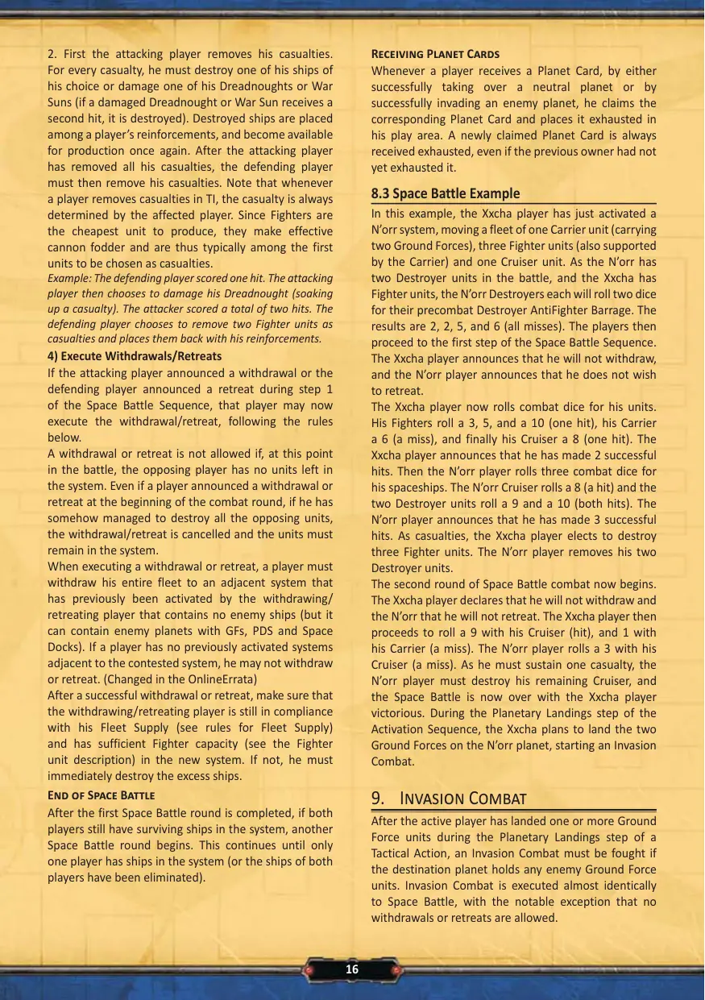
<figcaption>原版规则书 · 第 16 页（点击图片放大）</figcaption>
</figure>

<details class="mt-fold">
<summary>📝 第 16 页 AI 机翻对照（点击展开）</summary>
<div class="mt-body"><ol>
  <li>首先，攻击方玩家移除他的伤亡单位。</li>
</ol>

<p>对于每个伤亡单位，他必须摧毁他自己选择的一艘战舰，或损坏一艘他的无畏舰或战阳舰（如果一艘受损的无畏舰或战阳舰受到第二次伤害，它将被摧毁）。被摧毁的战舰被放置在玩家的增援单位中，并再次可用于生产。在攻击方玩家移除了所有他的伤亡单位后，防御方玩家必须接着移除他的伤亡单位。请注意，在TI中每当玩家移除伤亡单位时，伤亡单位总是由受影响的玩家决定。由于战斗机是生产成本最低的单位，它们成为了有效的炮灰，因此通常是最先被选为伤亡单位的单位。</p>

<p>示例：防御方玩家获得一次命中。攻击方玩家随后选择损坏他的无畏舰（吸收了一次伤亡）。攻击方总共获得两次命中。防御方玩家选择移除两个战斗机单位作为伤亡，并将它们放回他的增援单位中。</p>

<h3>4) 执行撤退/退却</h3>

<p>如果在太空战斗序列的第1步中，攻击方玩家宣布了撤退，或防御方玩家宣布了退却，那么该玩家现在可以按照以下规则执行撤退/退却。</p>

<p>如果在此时战斗中，对方玩家在该系统中没有剩余单位，则不允许撤退或退却。即使玩家在战斗轮开始时宣布了撤退或退却，如果他设法摧毁了所有敌方单位，撤退/退将被取消，单位必须留在系统中。</p>

<p>执行撤退或退却时，玩家必须将他的整个舰队撤退到由撤退/退却玩家先前激活的相邻系统中，该系统中不能有敌方战舰（但可以包含有GF、PDS和太空船坞的敌方行星）。如果玩家没有与争议系统相邻的先前激活的系统，他不能撤退或退却。（在线勘误中已更改）</p>

<p>成功撤退或退却后，确保撤退/退却玩家仍然符合他的舰队供应（参见舰队供应规则），并在新系统中拥有足够的战斗机容量（参见战斗机单位描述）。如果不符合，他必须立即摧毁多余的战舰。</p>

<p>太空战斗结束</p>

<p>在完成第一个太空战斗轮后，如果两个玩家在系统中仍有幸存的战舰，则开始另一个太空战斗轮。这个过程持续进行，直到只有一个玩家在系统中拥有战舰（或两个玩家的战舰都被消灭）。</p>

<p>获得行星卡</p>

<p>每当玩家通过成功占领一个中立行星，或通过</p>

<p>成功入侵敌方行星后，他获得对应的行星牌并将其疲劳放置在他的游戏区域中。新获得的行星牌总是以疲劳状态获得，即使前一个拥有者尚未使其疲劳。</p>

<h3>8.3 太空战斗示例</h3>

<p>在本示例中，Xxcha玩家刚刚激活了一个N'orr星系，移动了一支由一架航母（携带两个地面部队）、三架战斗机（同样由航母支援）和一艘巡洋舰组成的舰队。由于N'orr在战斗中有两艘驱逐舰，而Xxcha有战斗机，N'orr的驱逐舰将各自为战斗前的驱逐舰反战斗机火力齐射掷两个骰子。结果为2、2、5和6（均为未命中）。然后玩家们继续进行太空战斗序列的第一步。Xxcha玩家宣布他将不撤退，N'orr玩家宣布他不希望撤退。</p>

<p>Xxcha玩家现在为他的单位掷战斗骰。他的战斗机掷出3、5和10（一次命中），他的航母掷出6（未命中），最后他的巡洋舰掷出8（一次命中）。Xxcha玩家宣布他造成了2次成功命中。然后N'orr玩家为他的飞船掷三个战斗骰。N'orr的巡洋舰掷出8（命中），两艘驱逐舰掷出9和10（均为命中）。N'orr玩家宣布他造成了3次成功命中。作为伤亡，Xxcha玩家选择摧毁三架战斗机。N'orr玩家移除他的两艘驱逐舰。</p>

<p>现在开始第二轮太空战斗。Xxcha玩家宣布他将不撤退，N'orr玩家宣布他将不撤退。然后Xxcha玩家用他的巡洋舰掷出9（命中），用他的航母掷出1（未命中）。N'orr玩家用他的巡洋舰掷出3（未命中）。由于他必须承受一次伤亡，N'orr玩家必须摧毁他剩余的巡洋舰，太空战斗现在结束，Xxcha玩家获胜。在激活序列的行星登陆步骤中，Xxcha计划将两个地面部队登陆到N'orr行星上，开始入侵战斗。</p>

<h3>9. 入侵战斗</h3>

<p>在战术行动的行星登陆步骤中，当活跃玩家登陆了一个或多个地面部队单位后，如果目标行星上有任何敌方地面部队单位，则必须进行入侵战斗。入侵战斗的执行与太空战斗几乎完全相同，显著区别是不允许撤退或撤退。</p></div>
</details>

<figure>
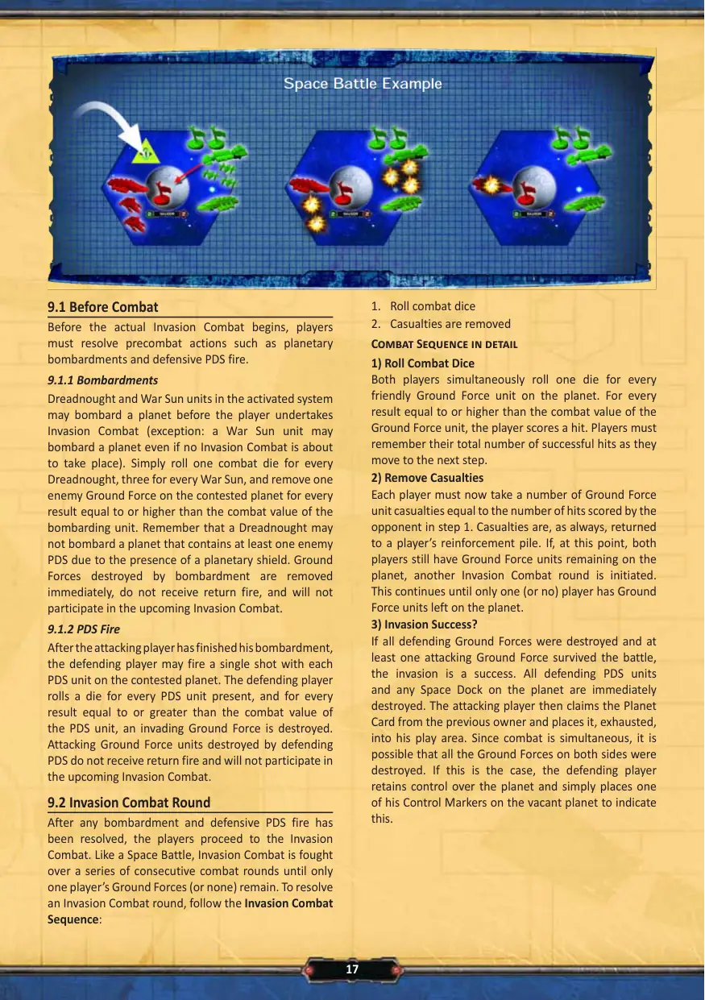
<figcaption>原版规则书 · 第 17 页（点击图片放大）</figcaption>
</figure>

<details class="mt-fold">
<summary>📝 第 17 页 AI 机翻对照（点击展开）</summary>
<div class="mt-body"><h2>9.1 战斗前</h2>

<p>在实际入侵战斗开始前，玩家必须解决战斗前行动，如行星轰炸和防御性PDS射击。</p>

<h3>9.1.1 轰炸</h3>

<p>激活系统中的无畏舰和战阳单位可以在玩家进行入侵战斗前轰炸一颗行星（例外：即使没有即将发生的入侵战斗，战阳单位也可以轰炸行星）。只需为每艘无畏舰投掷一个战斗骰，为每艘战阳投掷三个战斗骰，并且对于等于或高于轰炸单位战斗数值的每个结果，移除争议行星上的一个敌方地面部队。请记住，由于行星护盾的存在，无畏舰不能轰炸至少包含一个敌方PDS的行星。被轰炸摧毁的地面部队立即被移除，不会受到反击，也不会参与即将到来的入侵战斗。</p>

<h3>9.1.2 PDS射击</h3>

<p>在攻击玩家完成轰炸后，防御玩家可以使用争议行星上的每个PDS单位进行一次射击。防御玩家为每个存在的PDS单位投掷一个骰子，对于每个等于或大于PDS单位战斗数值的结果，一个入侵地面部队被摧毁。被防御PDS摧毁的攻击地面部队单位不会受到反击，也不会参与即将到来的入侵战斗。</p>

<h2>9.2 入侵战斗轮</h2>

<p>在解决任何轰炸和防御性PDS射击后，玩家继续进行入侵战斗。如同太空战斗，入侵战斗通过一系列连续的战斗轮进行，直到只剩下一个玩家的地面部队（或没有）。要解决一个入侵战斗轮，请遵循入侵战斗序列：</p>

<h3>1. 投掷战斗骰</h3>

<h3>2. 移除伤亡</h3>

<p>详细战斗序列</p>

<h3>1) 投掷战斗骰</h3>

<p>双方玩家同时为行星上的每个友好地面部队单位投掷一个骰子。对于每个等于或高于地面部队单位战斗数值的结果，玩家获得一次命中。玩家在进入下一步时必须记住他们成功的命中总数。</p>

<h3>2) 移除伤亡</h3>

<p>每个玩家现在必须移除等于对手在步骤1中获得的命中数量的地面部队单位伤亡。伤亡一如既往地返回到玩家的增援堆。如果此时双方玩家在行星上仍有地面部队单位，则开始另一个入侵战斗轮。这会持续进行，直到只有一个（或没有）玩家在行星上剩下地面部队单位。</p>

<h3>3) 入侵成功？</h3>

<p>如果所有防御地面部队被摧毁，并且至少一个攻击地面部队在战斗中幸存，则入侵成功。所有防御PDS单位</p>

<p>并且星球上的任何太空船坞都会立即被摧毁。攻击玩家然后从前所有者那里夺取星球卡牌，并将其放置为已耗尽状态，放入他的游戏区域。由于战斗是同时进行的，双方的所有地面部队都有可能被摧毁。如果是这种情况，防御玩家保留对星球的控制权，只需在他的一个控制指示物放在空置的星球上以表示这一点。</p></div>
</details>

<figure>
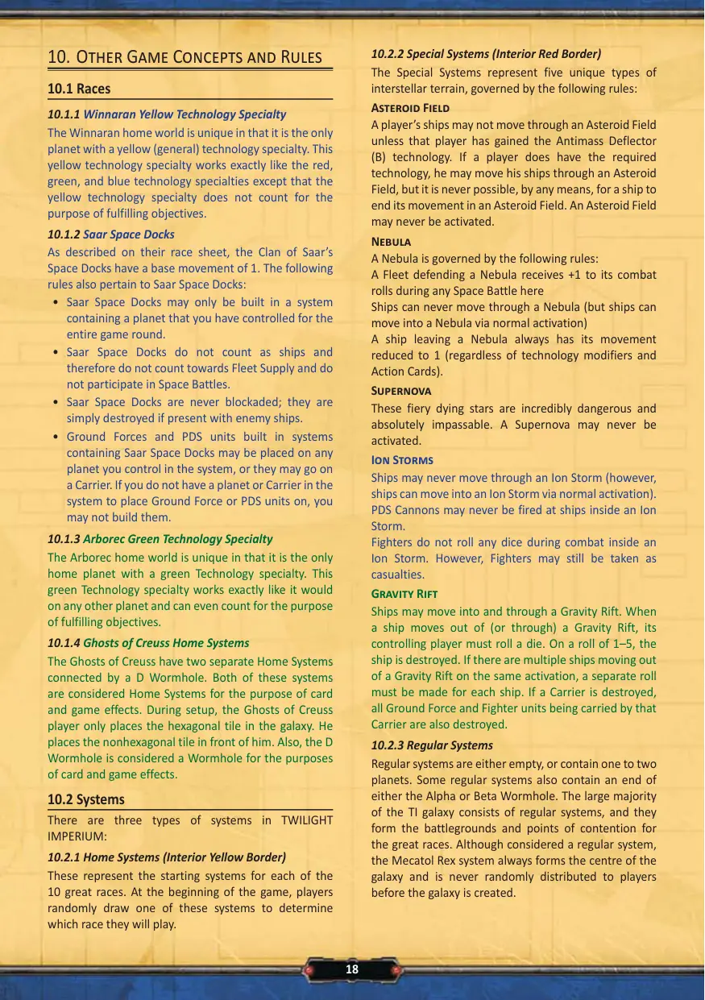
<figcaption>原版规则书 · 第 18 页（点击图片放大）</figcaption>
</figure>

<details class="mt-fold">
<summary>📝 第 18 页 AI 机翻对照（点击展开）</summary>
<div class="mt-body"><h3>10. 其他游戏概念和规则</h3>

<p>10.1 种族</p>

<p>10.1.1 温纳兰黄色科技专精</p>

<p>温纳兰母星是独特的，它是唯一拥有黄色（通用）科技专精的行星。这个黄色科技专精与红色、绿色和蓝色科技专精的工作方式完全相同，只是黄色科技专精不用于满足目标的目的。</p>

<p>10.1.2 萨尔太空船坞</p>

<p>如其种族卡所述，萨尔的太空船坞基础移动值为1。以下规则也适用于萨尔太空船坞：</p>

<p>• 萨尔太空船坞只能建造在您在整个游戏轮中都控制的行星所在的星系中。</p>

<p>• 萨尔太空船坞不视为舰船，因此不计入舰队供应，也不参与太空战斗。</p>

<p>• 萨尔太空船坞永远不会被封锁；如果与敌方舰船同时存在，它们会被直接摧毁。</p>

<p>• 在包含萨尔太空船坞的星系中建造的地面部队和PDS单位可以放置在您在该星系控制的任何行星上，或者可以放置在航母上。如果您在该星系中没有行星或航母来放置地面部队或PDS单位，则您不能建造它们。</p>

<p>10.1.3 阿博雷克绿色科技专精</p>

<p>阿博雷克母星是独特的，它是唯一拥有绿色科技专精的母星。这个绿色科技专精与在任何其他行星上的工作方式完全相同，甚至可以用于满足目标的目的。</p>

<p>10.1.4 克鲁斯幽灵的母系星系</p>

<p>克鲁斯幽灵有两个通过D虫洞连接的独立母系星系。出于卡牌和游戏效果的目的，这两个星系都被视为母系星系。在设置阶段，克鲁斯幽灵玩家只将六边形板块放置在星系中。他将非六边形板块放在自己面前。此外，出于卡牌和游戏效果的目的，D虫洞被视为虫洞。</p>

<p>10.2 星系</p>

<p>在《TWILIGHT IMPERIUM》中有三种类型的星系：</p>

<p>10.2.1 母系星系（内部黄色边框）</p>

<p>这些代表10个伟大种族的起始星系。游戏开始时，玩家随机抽取其中一个星系以确定他们将扮演的种族。</p>

<p>10.2.2 特殊星系（内部红色边框）</p>

<p>特殊星系代表五种独特的星际地形类型，受以下规则管辖：</p>

<p>小行星带</p>

<p>除非玩家获得了反质量偏导器(B)科技，否则玩家的舰船不能通过小行星带。如果玩家确实拥有所需科技，他可以让他的舰船通过小行星带，但无论如何，舰船都不可能在小行星带结束其移动。小行星带永远不会被激活。</p>

<p>星云</p>

<p>星云受以下规则管辖：</p>

<p>在星云中防御的舰队在任意太空战斗中获得+1的战斗掷骰加成</p>

<p>舰船永远不能穿过星云（但舰船可以通过常规行动进入星云）</p>

<p>离开星云的舰船其移动值总是被降低为1（无论科技修正和行动卡牌如何）</p>

<p>超新星</p>

<p>这些炽热的垂死恒星极其危险且完全不可通行。超新星永远不能被激活。</p>

<p>离子风暴</p>

<p>舰船永远不能穿过离子风暴（然而，舰船可以通过常规行动进入离子风暴）</p>

<p>PDS大炮永远不能向离子风暴内的舰船开火</p>

<p>战斗机在离子风暴内的战斗中不进行任何掷骰。然而，战斗机仍可被作为战损移除</p>

<p>引力裂隙</p>

<p>舰船可以进入并穿过引力裂隙。当舰船离开（或穿过）引力裂隙时，其控制玩家必须掷骰。掷出1-5时，舰船被摧毁。如果有多个舰船在同一行动中离开引力裂隙，必须为每艘舰船单独进行一次掷骰。如果一艘航母被摧毁，该航母所运载的所有地面部队和战斗机单位也被摧毁。</p>

<p>10.2.3 常规星系</p>

<p>常规星系要么是空的，要么包含一到两个行星。一些常规星系还包含阿尔法或贝塔虫洞的终点。TI星系的大部分由常规星系组成，它们构成了各大种族的战场和争夺点。尽管被认为是常规星系，Mecatol Rex星系（Mecatol Rex）总是位于星系中心，且在星系生成前永远不会随机分配给玩家。</p></div>
</details>

<figure>
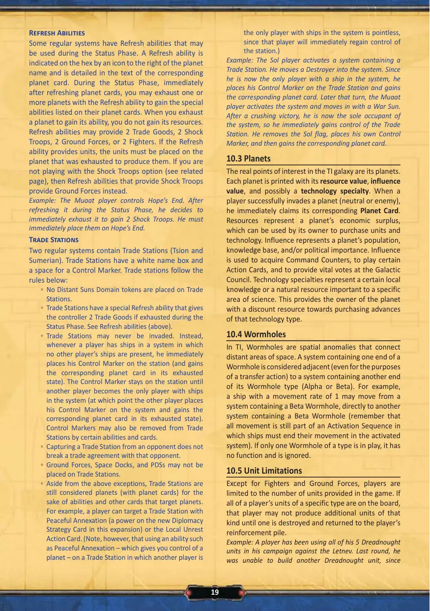
<figcaption>原版规则书 · 第 19 页（点击图片放大）</figcaption>
</figure>

<details class="mt-fold">
<summary>📝 第 19 页 AI 机翻对照（点击展开）</summary>
<div class="mt-body"><p>刷新能力</p>

<p>一些常规系统具有刷新能力，可在状态阶段使用。刷新能力通过行星名称右侧的图标表示，并在相应行星卡牌的文本中详细说明。在状态阶段，刷新行星卡牌后，你可以立即使用一个或多个具有刷新能力的行星，以获得其行星卡牌上列出的特殊能力。当你使用行星能力时，不会获得其资源。</p>

<p>刷新能力可能提供2个贸易商品、2个突击部队、2个地面部队或2个战斗机。如果刷新能力提供单位，这些单位必须放置在被消耗的行星上。如果你没有使用突击部队选项（参见相关页面），则提供突击部队的刷新能力将改为提供地面部队。</p>

<p>示例：穆阿特玩家控制希望终结（Hope's End）。在状态阶段刷新它后，他决定立即消耗它以获得2个突击部队。他必须立即将它们放置在希望终结上。</p>

<p>贸易站</p>

<p>两个常规系统包含贸易站（Tsion和Sumerian）。贸易站有白色名称框和控制标记位。贸易站遵循以下规则：</p>

<p>◦◦贸易站上不放置遥远太阳领域标记。</p>

<p>◦◦贸易站具有特殊的刷新能力，如果在状态阶段被消耗，控制器可获得2个贸易商品。参见刷新能力（上文）。</p>

<p>◦◦贸易站永远不会被入侵。相反，每当一个玩家在没有其他玩家飞船存在的系统中拥有飞船时，他立即将自己的控制标记放置在贸易站上（并以消耗状态获得相应的行星卡牌）。控制标记会留在贸易站上，直到另一个玩家成为系统中唯一拥有飞船的玩家（此时另一个玩家将其控制标记放置在系统上，并以消耗状态获得相应的行星卡牌）。控制标记也可能通过某些能力和卡牌从贸易站上移除。</p>

<p>◦◦从对手处夺取贸易站不会与该对手的贸易协议中断。</p>

<p>◦◦地面部队、太空船坞和行星防御系统不能放置在贸易站上。</p>

<p>◦◦除上述例外情况外，就针对行星的能力和其他卡牌而言，贸易站仍被视为行星（带有行星卡牌）。例如，玩家可以使用和平吞并（本扩展中新外交策略卡上的能力）或地方骚乱行动卡来针对贸易站。（但请注意，在另一个玩家拥有飞船的贸易站上使用和平吞并之类的能力——该能力让你获得行星控制权——是不允许的。）</p>

<p>系统中只有一名玩家拥有舰船是没有意义的，</p>

<p>因为该玩家会立即重新获得对该星站的控制权。)</p>

<p>示例：Sol玩家激活了一个包含贸易站(Traade Station)的系统。他将一艘驱逐舰(Destroyer)移入该系统。由于他是系统中唯一拥有舰船的玩家，他将他的控制标记放在贸易站上并获得相应的行星卡。在该回合晚些时候，Muaat玩家激活了该系统并使用一艘战阳舰(War Sun)进入。在一场决定性的胜利后，他成为系统中唯一的占领者，因此他立即获得了对贸易站的控制权。他移除了Sol的旗帜，放置了自己的控制标记，然后获得了相应的行星卡。</p>

<h2>10.3 行星</h2>

<p>TI银河系中真正的兴趣点是行星。每颗行星都印有其资源值、影响力值，以及可能的技术专长。当玩家成功入侵一颗行星（中立的或敌对的），他立即获得其对应的行星卡。</p>

<p>资源代表行星的经济盈余，其所有者可用于购买单位和科技。影响力代表行星的人口、知识基础和/或政治重要性。影响力用于获取指挥标记(Command Counters)、执行某些行动卡(Action Cards)，以及在银河议会(Galactic Council)中提供关键投票。技术专长代表特定领域科学中重要的某种本地知识或自然资源。这为行星所有者提供了购买该技术类型升级时的资源折扣。</p>

<h2>10.4 虫洞</h2>

<p>在TI中，虫洞(Wormholes)是连接太空遥远区域的空间异常。包含虫洞一端的系统被视为与包含其虫洞类型（阿尔法Alpha或贝塔Beta）另一端的系统相邻（即使是为了转移行动的目的）。例如，移动率为1的舰船可以从包含贝塔虫洞的系统，直接移动到另一个包含贝塔虫洞的系统（请记住，所有移动仍然是激活序列的一部分，舰船必须在该激活系统中结束其移动）。如果某种类型的虫洞只有一个在游戏中，它没有功能并被忽略。</p>

<h2>10.5 单位限制</h2>

<p>除了战斗机(Fighters)和地面部队(Ground Forces)外，玩家受到游戏中提供的单位数量限制。如果一名玩家的特定类型单位全部在版图上，那么在其中一个单位被摧毁并返回到玩家的增援堆之前，该玩家不能生产该类型的额外单位。</p>

<p>示例：一名玩家在对Letnev的战役中使用了他的全部5艘无畏舰(Dreadnought)单位。上一轮，他无法建造另一艘无畏舰单位，因为</p></div>
</details>

<figure>
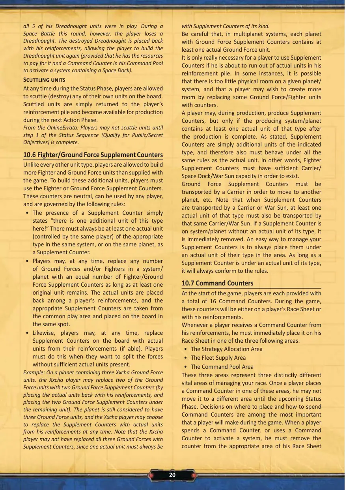
<figcaption>原版规则书 · 第 20 页（点击图片放大）</figcaption>
</figure>

<details class="mt-fold">
<summary>📝 第 20 页 AI 机翻对照（点击展开）</summary>
<div class="mt-body"><p>他所有的5艘无畏舰单位都已投入游戏。然而，在本轮的太空战斗中，该玩家损失了一艘无畏舰。被摧毁的无畏舰被放回其增援部队中，允许玩家再次建造无畏舰单位（前提是他有资源支付其费用，并且在指挥池中有一个指挥计数器来激活包含太空船坞的系统）。</p>

<p>自沉单位</p>

<p>在状态阶段的任何时候，玩家都可以自沉（摧毁）他们自己版图上的任何单位。被自沉的单位只是被放回玩家的增援部队堆中，并在下一个行动阶段可用于生产。</p>

<p>来自在线勘误：玩家必须等到状态序列第1步（符合公开/秘密目标条件）完成后才能自沉单位。</p>

<p>10.6 战斗机/地面部队补充指示物</p>

<p>与所有其他单位类型不同，玩家被允许建造比游戏所提供的更多的战斗机和地面部队单位。要建造这些额外单位，玩家必须使用战斗机或地面部队补充指示物。这些指示物是中立的，可被任何玩家使用，并遵循以下规则：</p>

<p>• 补充指示物的存在仅表示"这里有一个额外的此类单位！"在同一个系统或同一个行星上，必须至少有一个适当类型的实际单位（由同一玩家控制）与补充指示物共存。</p>

<p>• 玩家可以在任何时候，用相同数量的战斗机/地面部队补充指示物替换系统/行星上的任意数量的地面部队和/或战斗机，只要至少保留一个原始单位。实际单位被放回玩家的增援部队中，相应的补充指示物从公共游戏区取出并放置在版图上的相同位置。</p>

<p>• 同样，玩家可以在任何时候（如果可能）用他们增援部队中的实际单位替换版图上的补充指示物。当玩家想要在没有足够实际单位的情况下分割部队时，必须这样做。</p>

<p>示例：在一个包含三个Xxcha地面部队单位的行星上，Xxcha玩家可以用两个地面部队补充指示物替换其中的两个地面部队单位（通过将实际单位放回其增援部队，并将两个地面部队补充指示物放在剩余单位下方）。该行星仍被认为拥有三个地面部队单位，Xxcha玩家可以在任何时候选择用其增援部队中的实际单位替换这些补充指示物。注意，Xxcha玩家不能将所有三个地面部队都替换为补充指示物，因为必须始终有一个实际单位与其同类的补充指示物共存。</p>

<p>请注意，在多行星系统中，每个行星</p>

<p>&lt;!--page:N--&gt;</p>

<p>地面部队补充指示物包含至少一个真实的地面部队单位。</p>

<p>只有在玩家的增援牌库中的真实单位即将用尽时，才真正有必要使用补充指示物。在某些情况下，给定行星/系统上的物理空间可能不足，玩家可能希望通过用一些地面部队/战斗机单位替换为指示物来创造更多空间。</p>

<p>玩家可以在生产阶段生产补充指示物，但前提是生产完成后，生产行星/系统必须包含至少一个该类型的真实单位。如前所述，补充指示物仅是指示类型的额外单位，因此也必须遵守与真实单位相同的所有规则。换句话说，战斗机补充指示物必须有足够的航母/太空船坞/战争太阳容量才能存在。</p>

<p>地面部队补充指示物必须由航母运输才能移动到其他行星等。请注意，当补充指示物由航母或战争太阳运输时，该航母/战争太阳也必须同时运输至少一个该类型的真实单位。如果补充指示物位于没有其类型真实单位的行星/系统上，它将被立即移除。管理补充指示物的一个简单方法是始终将它们放在其类型真实单位的下方区域。只要补充指示物位于其类型真实单位的下方，它就始终符合规则。</p>

<h3>10.7 指挥指示物</h3>

<p>游戏开始时，每位玩家总共获得16个指挥指示物。在游戏过程中，这些指示物要么在玩家的种族表上，要么在其增援牌库中。</p>

<p>每当玩家从其增援牌库中获得一个指挥指示物时，他必须立即将其放在其种族表以下三个区域之一：</p>

<p>• 策略分配区域</p>

<p>• 舰队供应区域</p>

<p>• 指挥池区域</p>

<p>这三个区域代表了管理种族的三个截然不同的关键领域。一旦玩家将指挥指示物放在其中一个区域，在即将到来的状态阶段之前，他不能将其移动到不同的区域。关于放置和如何使用指挥指示物的决定是玩家在游戏过程中做出的最重要的决定之一。当玩家使用一个指挥指示物，或使用指挥指示物激活一个系统时，他必须从其种族表的相应区域移除该指示物。</p></div>
</details>

<figure>

<figcaption>原版规则书 · 第 21 页（点击图片放大）</figcaption>
</figure>

<details class="mt-fold">
<summary>📝 第 21 页 AI 机翻对照（点击展开）</summary>
<div class="mt-body"><p>并将其返回到他的增援区。详细来说，三个区域的效果和规则如下：</p>

<p>10.7.1 舰队补给区</p>

<p>玩家舰队补给区中的指挥官计数器数量决定了玩家在版图上任意系统中可以拥有的舰船数量（不包括战斗机）。玩家不得在任何系统中移动单位、建造单位或以其他方式获取单位，导致此处的舰船数量（同样不包括战斗机）超过其舰队补给区中的指挥官计数器数量。如果由于任何原因，系统中的舰船数量超过了玩家舰队补给区中的指挥官计数器数量，这些舰船的所有者必须立即从系统中移除足够的舰船（通过将它们放回其增援区），直到舰船数量再次符合其舰队补给区中的指挥官计数器数量。当玩家将指挥官计数器放置在其舰队补给区时，舰队面朝上放置，以表明它是舰队补给区的一部分。这样，其他玩家可以从桌对面轻松识别你的舰队限制，并且有助于防止你的计数器与其他两个区域中的指挥官计数器混合。随着玩家增加其舰队补给区中的指挥官计数器数量，他可以相应地增加版图上其舰队的规模。需要注意的是，玩家可以在版图上拥有任意数量的活跃舰队，只要每支舰队包含的舰船数量等于或小于其所有者的舰队补给限制。如前所述，战斗机单位不计入舰队补给限制。因此，玩家可以在给定系统中拥有任意数量的战斗机单位，只要他有足够的能力来支持它们（参见战斗机单位）。</p>

<p>10.7.2 指挥池区</p>

<p>在行动阶段，玩家决定采取战术或转移行动后，必须从其指挥池中取出一个可用的指挥官计数器，以激活版图上的一个系统。如果玩家的指挥池中没有剩余的指挥官计数器，他将无法采取战术或转移行动。换句话说，玩家指挥池中的指挥官计数器数量决定了他在版图上可以发起的活动量。</p>

<p>10.7.3 战略分配区</p>

<p>通常，战略分配区中的指挥官计数器用于执行战略牌的次要能力。一些种族拥有特殊能力，一些行动牌要求玩家从其战略分配区中花费指挥官计数器以获得其他效果。</p>

<p>10.8 资源和影响力消耗</p>

<p>在整个TI游戏中，你将需要为许多不同的目的消耗资源和影响力。资源和影响力都由</p>

<h2>10.8 行星与生产</h2>

<p>你控制的行星，并使用相应的行星卡来追踪你的支出。</p>

<h3>10.8.1 耗尽行星</h3>

<p>每当你想花费影响力或资源时，你必须将一张你的行星卡翻面朝下以将其耗尽。这为你提供该行星的资源或影响力。每张行星卡（以及版图上的行星本身）显示了从耗尽该特定行星可获得多少资源和多少影响力的具体信息（见上图）。一张面朝下的行星卡在状态阶段刷新前（或通过其他效果）不能再次被耗尽。当一张卡被刷新时，它只是被恢复到面朝上的位置。当你为资源或影响力而耗尽一个行星时，它提供给你其全部的资源或影响力。你不能部分使用一个行星的资源或影响力，也不能保存一部分以备后用。请注意，当耗尽一个行星时，它会提供给你其资源值或其影响力值，但不能同时提供两者。在耗尽行星前，你必须宣布你是为了资源还是为了影响力而耗尽它（在大多数情况下，耗尽行星的目的是明确的）。</p>

<h3>10.8.2 支付费用</h3>

<p>每当一名玩家想要花费资源或影响力时，他只需宣布他想要花费的资源/影响力总量，然后耗尽具有该（或更高）资源/影响力合计数量的行星卡。换句话说，当一名玩家在激活序列的生产步骤期间在太空船坞生产单位时，他可以简单地宣布他总共要花费多少资源。然后他耗尽适当数量的行星并将生产的单位放置在版图上（参见太空船坞单位的单位生产规则）。这意味着你不是一次生产（并花费资源）一个单位，而是一次性购买生产。花费影响力也是如此。被耗尽的行星卡提供的任何多余资源或影响力都会丢失。</p>

<p>特别说明：你不必耗尽特定的行星卡来支付在该行星上生产的费用；任何资源都可以。</p>

<h3>10.8.3 花费资源和生产示例</h3>

<p>N'orr玩家刚刚激活了一个包含其太空船坞之一的星系。作为激活序列的最后一步，他现在希望生产单位</p></div>
</details>

<figure>
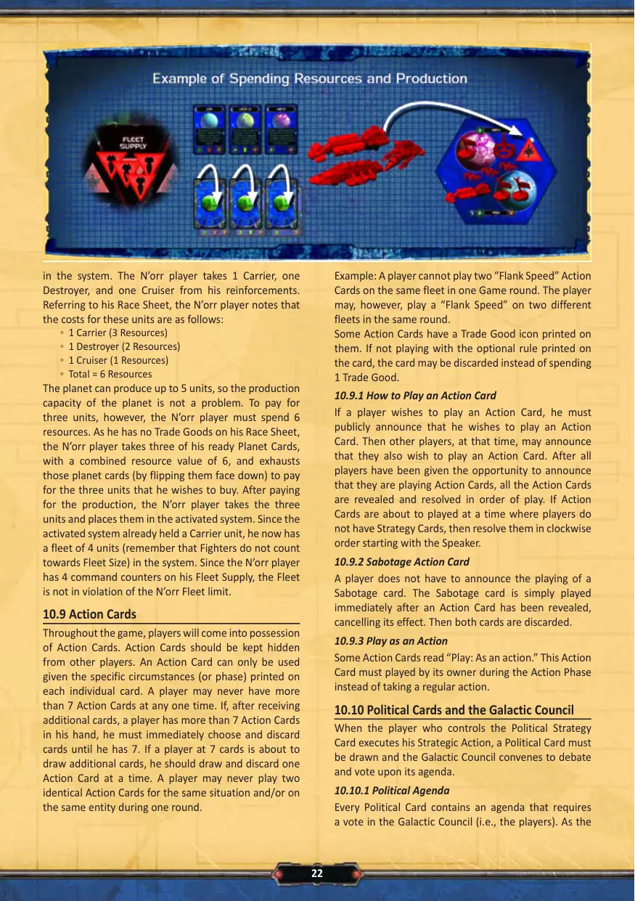
<figcaption>原版规则书 · 第 22 页（点击图片放大）</figcaption>
</figure>

<details class="mt-fold">
<summary>📝 第 22 页 AI 机翻对照（点击展开）</summary>
<div class="mt-body"><p>在系统中。N'orr玩家从其增援部队中拿取1艘航母、1艘驱逐舰和1艘巡洋舰。</p>

<p>参考其种族卡，N'orr玩家注意到这些单位的成本如下：</p>

<p>◦◦1艘航母（3资源）</p>

<p>◦◦1艘驱逐舰（2资源）</p>

<p>◦◦1艘巡洋舰（1资源）</p>

<p>◦◦总计 = 6资源</p>

<p>该行星最多可生产5个单位，因此该行星的生产能力没有问题。然而，要支付三个单位的费用，N'orr玩家必须花费6个资源。由于他的种族卡上没有贸易商品，N'orr玩家拿出三张他已准备好的行星卡，这些行星卡的总资源价值为6，并翻面（使其面朝下）以支付他想要购买的三个单位。支付生产费用后，N'orr玩家拿取这三个单位并将它们放置在已激活的系统中。由于已激活的系统已经有一艘航母单位，他现在在该系统中拥有4个单位的舰队（请记住战斗机不计入舰队规模）。由于N'orr玩家在其舰队供应区有4个指挥官指示物，该舰队并未违反N'orr的舰队限制。</p>

<p>10.9 行动卡</p>

<p>在整个游戏中，玩家将获得行动卡。行动卡应对其他玩家保密。行动卡只能在每张卡上印有的特定情况（或阶段）下使用。玩家任何时候手中不能拥有超过7张行动卡。如果在获得额外卡片后，玩家手中拥有超过7张行动卡，他必须立即选择并弃牌，直到手中只剩7张。如果一个玩家已有7张卡，即将抽取额外卡片，他应该一次抽取并弃置一张行动卡。玩家在同一轮中不能对同一情况和/或同一实体使用两张相同的行动卡。</p>

<p>示例：玩家不能在一局游戏回合中对同一舰队使用两张" flank speed"（ flank speed）行动卡。然而，玩家可以在同一回合中对两个不同的舰队使用" flank speed"（ flank speed）。</p>

<p>一些行动卡上印有贸易商品图标。如果不使用卡片上印有的可选规则，该卡可以弃置以代替花费1个贸易商品。</p>

<p>10.9.1 如何使用行动卡</p>

<p>如果玩家想要使用行动卡，他必须公开宣布他想要使用行动卡。然后，其他玩家此时也可以宣布他们也想使用行动卡。在所有玩家都有机会宣布他们正在使用行动卡后，所有行动卡按使用顺序被揭示并结算。如果要在玩家没有策略卡的时候使用行动卡，则从议长开始按顺时针顺序结算。</p>

<p>10.9.2 破坏行动卡</p>

<p>玩家不必宣布打出破坏卡。破坏卡在行动卡被揭示后立即打出，取消其效果。然后两张牌都被弃置。</p>

<p>10.9.3 作为行动打出</p>

<p>有些行动卡写着"打出：作为一项行动"。这张行动卡必须由其所有者在行动阶段打出，而不是执行常规行动。</p>

<p>10.10 政治卡与银河议会</p>

<p>当控制政治战略卡的玩家执行其战略行动时，必须抽取一张政治卡，银河议会 convene 召集会议，就其议程进行辩论和投票。</p>

<p>10.10.1 政治议程</p>

<p>每张政治卡都包含一个需要在银河议会（即玩家们）中进行投票的议程。作为</p></div>
</details>

<figure>
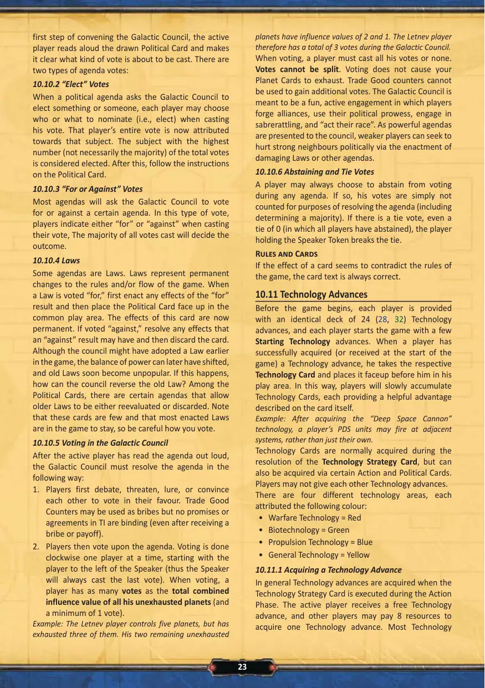
<figcaption>原版规则书 · 第 23 页（点击图片放大）</figcaption>
</figure>

<details class="mt-fold">
<summary>📝 第 23 页 AI 机翻对照（点击展开）</summary>
<div class="mt-body"><p>召开银河议会的第一步，当前玩家大声抽出的政治卡牌，并明确即将进行何种投票。有两种议程投票类型：</p>

<p>10.10.2 "选举"投票</p>

<p>当政治议程要求银河议会选举某物或某人时，每位玩家在投票时可以选择提名（即选举）的对象。该玩家的全部投票将归属于该对象。获得总票数最多（不一定是多数）的对象被视为当选。之后，按照政治卡牌上的指示执行。</p>

<p>10.10.3 "赞成或反对"投票</p>

<p>大多数议程将要求银河议会就特定议程进行赞成或反对投票。在这种投票中，玩家在投票时表明"赞成"或"反对"，所有投票中的多数将决定结果。</p>

<p>10.10.4 法律</p>

<p>一些议程是法律。法律代表对规则和/或游戏流程的永久性改变。当法律被投票"赞成"时，首先执行"赞成"结果的效果，然后将政治卡牌正面朝上放置在公共游戏区域。该卡牌的效果现在是永久性的。如果被投票"反对"，则执行"反对"结果可能具有的效果，然后弃置该卡牌。</p>

<p>尽管议会可能在游戏早期已经通过了一项法律，但权力平衡可能已经转变，旧法律很快变得不受欢迎。如果发生这种情况，议会如何撤销旧法律？在政治卡牌中，有某些议程允许重新评估或弃置旧法律。请注意，这类卡牌很少，大多数已通过的法律将保留在游戏中，因此请谨慎投票。</p>

<p>10.10.5 银河议会投票</p>

<p>当前玩家大声宣读议程后，银河议会必须按以下方式解决该议程：</p>

<h3>1. 玩家首先辩论、威胁、引诱或说服对方投票支持自己。贸易品指示物可用作贿赂，但在TI游戏中没有任何承诺或协议具有约束力（即使在收到贿赂或报酬后）。</h3>

<ol>
  <li>然后玩家对议程进行投票。投票按顺时针方向依次进行，从发言人左边的玩家开始（因此发言人总是最后投票）。投票时，玩家拥有的票数等于其所有未耗尽行星的总影响力值之和（至少有1票）。</li>
</ol>

<p>示例：莱特涅夫玩家控制了五个行星，但已经耗尽了其中三个。他剩下的两个未耗尽行星的影响力值分别为2和1。因此，在银河议会期间，莱特涅夫玩家总共有3票。</p>

<p>投票时，玩家必须投出全部票数或一票不投。票数不能分割。投票不会导致你的</p>

<h2>10.10.6 弃权和平票投票</h2>

<p>玩家在任何议程中都可以选择弃权。如果是这样，他的投票在解决议程时（包括确定多数）不被计入。如果出现平票，即使是0票平票（所有玩家都弃权），持有发言者指示物的玩家将打破平局。</p>

<h3>规则和卡牌</h3>

<p>如果卡牌效果似乎与游戏规则相矛盾，卡牌文本始终是正确的。</p>

<h2>10.11 科技进步</h2>

<p>游戏开始前，每位玩家会获得一套相同的24张（28张、32张）科技进步牌，每位玩家在游戏开始时拥有一些初始科技进步。当玩家成功获得（或在游戏开始时收到）一项科技进步时，他取出相应的科技卡牌并将其正面朝上放置在自己面前的游戏区域中。这样，玩家会逐渐积累科技卡牌，每张卡牌都提供卡片上描述的有利优势。</p>

<p>示例：获得"深空炮"科技后，玩家的行星防御系统单位可以射击相邻星系，而不仅仅是自己的星系。</p>

<p>科技进步通常在执行科技战略卡牌期间获得，但也可以通过某些行动卡牌和政治卡牌获得。玩家之间不得互相转让科技进步。</p>

<p>共有四种不同的科技领域，每种领域分配以下颜色：</p>

<p>• 战争科技 = 红色</p>

<p>• 生物科技 = 绿色</p>

<p>• 推进科技 = 蓝色</p>

<p>• 通用科技 = 黄色</p>

<h3>10.11.1 获得科技进步</h3>

<p>通常，科技进步在行动阶段执行科技战略卡牌时获得。当前玩家获得一项免费的科技进步，其他玩家可以支付8个资源来获得一项科技进步。大多数科技进步</p></div>
</details>

<figure>
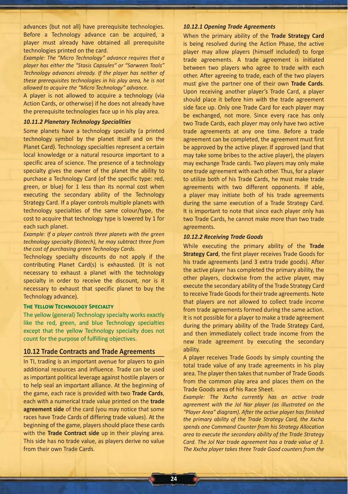
<figcaption>原版规则书 · 第 24 页（点击图片放大）</figcaption>
</figure>

<details class="mt-fold">
<summary>📝 第 24 页 AI 机翻对照（点击展开）</summary>
<div class="mt-body"><p>（但并非全部）科技突破有先决技术。</p>

<p>在获取一项科技突破之前，玩家必须已经拥有卡片上印有的所有先决技术。</p>

<p>示例："微科技"突破要求玩家已经拥有"静力舱"或"萨琳工具"科技突破。如果玩家在其游戏区域中没有这两项先决技术中的任何一项，则不允许获取"微科技"突破。</p>

<p>如果玩家尚未将其先决技术正面朝上放置在其游戏区域中，则不允许玩家获取一项技术（通过行动卡或其他方式）。</p>

<p>10.11.2 行星科技专长</p>

<p>一些行星具有科技专长（在行星本身和行星卡片上印有科技符号）。科技专长代表特定领域科学中重要的某种本地知识或自然资源。拥有科技专长的行星使其所有者能够在执行科技策略卡的次要能力时，以比正常成本低1的价格购买特定类型（红色、绿色或蓝色）的科技卡。如果玩家控制多个具有相同颜色/类型科技专长的行星，则获取该科技类型的成本会因每个这样的行星而降低1点。</p>

<p>示例：如果玩家控制了三个具有绿色科技专长（生物科技）的行星，他可以从购买绿色科技卡的成本中减去三点。</p>

<p>如果贡献的行星卡片已耗尽，则科技专长折扣不适用。（不必为了获得折扣而耗尽具有科技专长的行星，也不必为了购买科技突破而耗尽那个特定的行星）。</p>

<p>黄色科技专长</p>

<p>黄色（通用）科技专长的工作方式与红色、绿色和蓝色科技专长完全相同，只是黄色科技专长不用于满足目标要求。</p>

<p>10.12 贸易契约和贸易协定</p>

<p>在TI中，贸易是玩家获取额外资源和影响力的重要途径。贸易可作为对抗敌对玩家的重要政治杠杆，或帮助巩固重要联盟。游戏开始时，每个种族会获得两张贸易卡，每张卡在贸易协定面印有一个贸易数值（你可能注意到有些种族的贸易卡具有不同的贸易价值）。游戏开始时，玩家应将这些卡片以贸易契约面朝上放置在其游戏区域中。这一面没有贸易价值，因为玩家无法从自己的贸易卡中获得价值。</p>

<p>10.12.1 开启贸易协定</p>

<p>当执行贸易策略卡的主要能力时，当前玩家可以允许玩家（包括他自己）建立贸易协定。贸易协定由同意互相贸易的两名玩家发起。同意贸易后，两名玩家中的每一位必须给予对方一张自己的贸易卡。在收到另一名玩家的贸易卡后，玩家应将其正面朝上地放在自己面前，贸易协定面朝上。每位玩家只能交换一张贸易卡，不能更多。由于每个种族只有两张贸易卡，因此任何玩家在任何时候最多只能有两个活跃的贸易协定。在贸易协定能够完成之前，该协定必须首先得到当前玩家的批准。如果获得批准（这可能需要向当前玩家行贿），玩家们可以交换贸易卡。两名玩家之间只能有一个贸易协定。因此，玩家要使用他的两张贸易卡，必须与两个不同的对手建立贸易协定。如果可能，玩家可以在执行贸易策略卡的同一过程中发起他的两个贸易协定。重要的是要注意，由于每个玩家只有两张贸易卡，他不能建立超过两个贸易协定。</p>

<p>10.12.2 收获贸易商品</p>

<p>在执行贸易策略卡的主要能力时，第一名玩家因其贸易协定获得贸易商品（以及3个额外贸易商品）。当前玩家完成主要能力后，其他玩家从当前玩家开始顺时针方向，可以执行贸易策略卡的次要能力，以获得其贸易协定的贸易商品。请注意，玩家不允许从同一行动期间形成的贸易协定中收集贸易收入。玩家不可能在执行贸易策略卡的主要能力期间建立贸易协定，然后通过执行次要能力立即从新贸易协定中收集贸易收入。</p>

<p>玩家只需计算其游戏区域内任何贸易协定的总贸易价值，即可获得贸易商品。然后，玩家从公共游戏区取出相应数量的贸易商品，并将其放置在其种族卡的贸易商品区域。</p>

<p>示例：Xxcha目前与Jol Nar玩家有一个活跃的贸易协定（如"玩家区域"图所示）。当前玩家完成贸易策略卡的主要能力后，Xxcha花费其策略分配区的一个指挥计数器来执行贸易策略卡的次要能力。Jol Nar贸易协定的贸易价值为3。Xxcha玩家从公共游戏区取出三个贸易商品指示物。</p></div>
</details>

<figure>
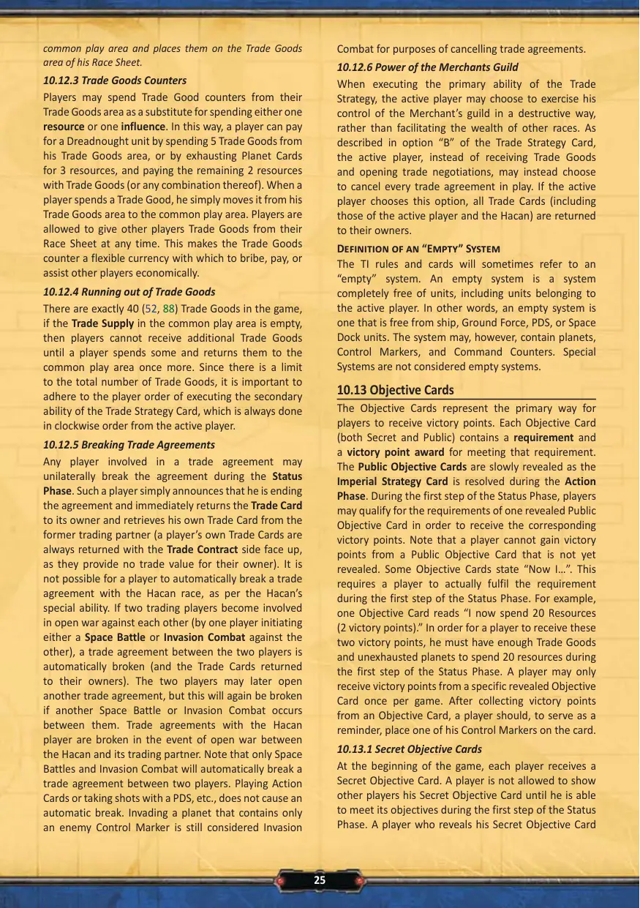
<figcaption>原版规则书 · 第 25 页（点击图片放大）</figcaption>
</figure>

<details class="mt-fold">
<summary>📝 第 25 页 AI 机翻对照（点击展开）</summary>
<div class="mt-body"><h2>10.12.3 贸易品指示物</h2>

<p>玩家可以从其贸易品区域花费贸易品指示物，作为替代花费一个资源或一个影响力。这样，玩家可以通过从其贸易品区域花费5个贸易品来支付一艘无畏舰单位的费用，或者通过消耗星球卡获得3个资源，并用贸易品支付剩余的2个资源（或任何组合）。当玩家花费一个贸易品时，他只需将其从其贸易品区域移动到公共游戏区域。玩家可以在任何时候从其种族卡上给予其他玩家贸易品。这使得贸易品指示物成为一种灵活的货币，可用于贿赂、支付或在经济上协助其他玩家。</p>

<h2>10.12.4 贸易品耗尽</h2>

<p>游戏中恰好有40个（52个，88个）贸易品，如果公共游戏区域中的贸易品供应为空，那么玩家无法获得额外的贸易品，直到有玩家花费一些并将其再次返回到公共游戏区域。由于贸易品总数有限，遵循执行贸易策略卡次要能力的玩家顺序非常重要，该能力总是从活跃玩家开始按顺时针顺序执行。</p>

<h2>10.12.5 终止贸易协议</h2>

<p>任何参与贸易协议的玩家都可以在状态阶段单方面终止协议。这样的玩家只需宣布他正在结束协议，立即将贸易卡返还给其所有者，并从前交易伙伴那里取回自己的贸易卡（玩家自己的贸易卡总是以贸易合约面朝上返还，因为它们对其所有者没有贸易价值）。根据哈坎（Hacan）的特殊能力，玩家不能自动与哈坎种族终止贸易协议。如果两个交易玩家相互卷入公开战争（通过一个玩家对另一个玩家发起太空战斗或入侵战斗），两个玩家之间的贸易协议将自动终止（贸易卡返还给其所有者）。两个玩家之后可以再次开启新的贸易协议，但如果他们之间再次发生太空战斗或入侵战斗，该协议将再次终止。哈坎玩家与其交易伙伴之间的贸易协议在哈坎与其交易伙伴发生公开战争时终止。请注意，只有太空战斗和入侵战斗会自动终止两个玩家之间的贸易协议。使用行动卡或使用行星防御系统（PDS）射击等不会导致自动终止。入侵仅包含敌方控制标记的星球，就取消贸易协议而言，仍被视为入侵战斗。</p>

<h2>10.12.6 商人行会的能力</h2>

<p>在执行贸易策略的主要能力时，当前玩家可以选择以一种破坏性的方式行使其对商人行会的控制，而不是促进其他种族的财富。如贸易策略卡选项"B"所述，当前玩家可以选择不获得贸易商品并开启贸易谈判，而是选择取消所有正在进行的贸易协议。如果当前玩家选择此选项，所有贸易卡（包括当前玩家和哈坎的）都将返还给其所有者。</p>

<p>"空"系统的定义</p>

<p>《帝国时代》规则和卡牌有时会提到一个"空"系统。空系统是一个完全没有单位的系统，包括属于当前玩家的单位。换句话说，空系统是一个没有飞船、地面部队、防御卫星或太空dock单位的系统。然而，该系统可以包含行星、控制标记和指挥标记。特殊系统不被视为空系统。</p>

<h2>10.13 目标卡</h2>

<p>目标卡代表玩家获得胜利点的主要方式。每张目标卡（无论是秘密的还是公开的）都包含一个要求以及满足该要求所获得的胜利点奖励。公开目标卡会在行动阶段解决帝国策略卡时逐步揭示。在状态阶段的第一步，玩家可以满足一张已揭示的公开目标卡的要求以获得相应的胜利点。请注意，玩家不能从未被揭示的公开目标卡中获得胜利点。一些目标卡上写着"现在我..."。这要求玩家必须在状态阶段的第一步实际满足要求。例如，一张目标卡上写着"我现在花费20资源（2个胜利点）"。为了获得这两个胜利点，玩家必须在状态阶段的第一步拥有足够的贸易商品和未耗尽的行星来花费20资源。玩家每局游戏只能从特定的已揭示目标卡中获得一次胜利点。从目标卡收集胜利点后，玩家应放置一个自己的控制标记在卡上，作为提醒。</p>

<h3>10.13.1 秘密目标卡</h3>

<p>游戏开始时，每位玩家获得一张秘密目标卡。玩家不允许在状态阶段的第一步能够满足其目标之前向其他玩家展示自己的秘密目标卡。揭示自己秘密目标卡的玩家</p></div>
</details>

<figure>
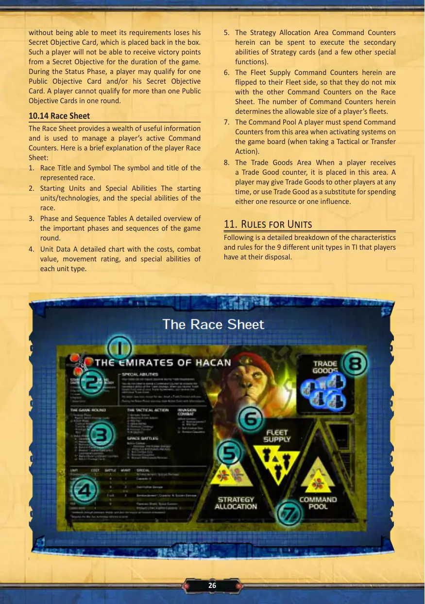
<figcaption>原版规则书 · 第 26 页（点击图片放大）</figcaption>
</figure>

<details class="mt-fold">
<summary>📝 第 26 页 AI 机翻对照（点击展开）</summary>
<div class="mt-body"><p>无法满足其要求的玩家将失去其秘密目标卡，该卡将被放回盒中。</p>

<p>这样的玩家在游戏期间将无法从秘密目标获得胜利点。</p>

<p>在状态阶段，玩家可能符合一张公共目标卡和/或其秘密目标卡的获得条件。</p>

<p>玩家在一轮内不能符合超过一张公共目标卡的条件。</p>

<p>10.14 种族表</p>

<p>种族表提供了大量有用的信息，用于管理玩家活跃的指挥官标记。</p>

<p>以下是玩家种族表的简要说明：</p>

<h3>1. 种族标题与符号 所代表种族的符号和标题。</h3>

<h3>2. 起始单位与特殊能力 种族的起始单位/技术，以及特殊能力。</h3>

<h3>3. 阶段与序列表 游戏回合重要阶段和序列的详细概览。</h3>

<h3>4. 单位数据 每种单位类型的费用、战斗力、移动等级和特殊能力的详细图表。</h3>

<h3>5. 策略分配区 此处的指挥官标记可用于执行策略卡的次要能力（以及一些其他特殊功能）。</h3>

<h3>6. 舰队供应区 此处的指挥官标记被翻到舰队面，以便不与种族表上的其他指挥官标记混淆。此处的指挥官标记数量决定了玩家舰队的允许规模。</h3>

<h3>7. 指挥官池 当玩家在游戏版图上激活星系时（执行战术或转移行动时），必须从此区域花费指挥官标记。</h3>

<h3>8. 贸易品区 当玩家获得贸易品标记时，将其放置在此区域。玩家可以随时将贸易品给予其他玩家，或使用贸易品作为花费一个资源或一个影响力的替代品。</h3>

<ol>
  <li>单位规则</li>
</ol>

<p>以下是 TI 中玩家可用的 9 种不同单位类型的特征和规则的详细说明。</p></div>
</details>

<figure>
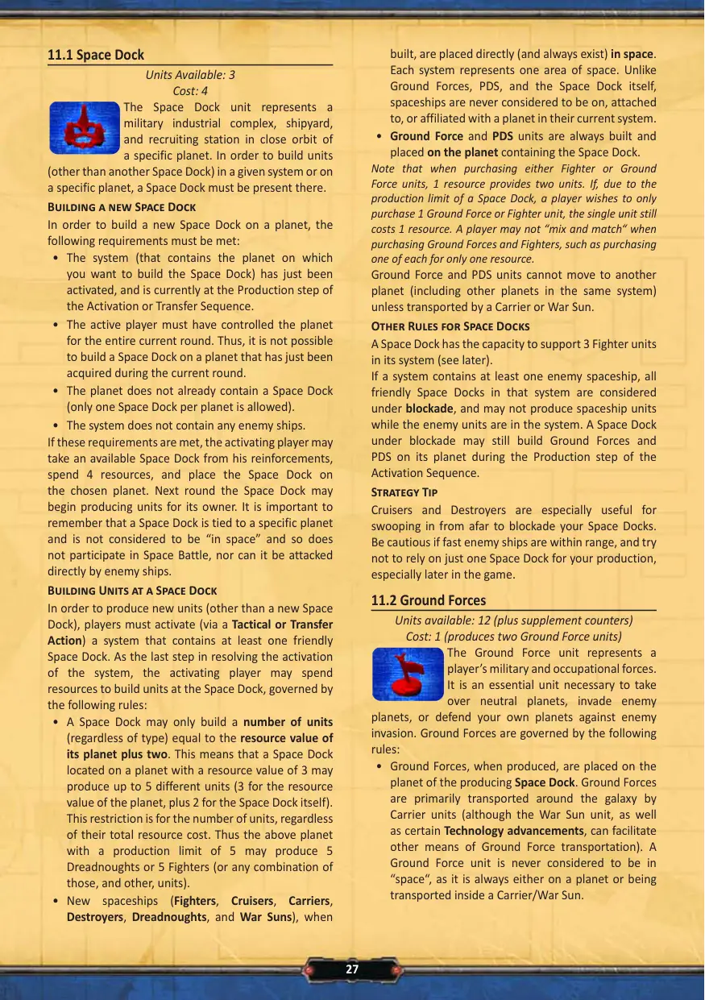
<figcaption>原版规则书 · 第 27 页（点击图片放大）</figcaption>
</figure>

<details class="mt-fold">
<summary>📝 第 27 页 AI 机翻对照（点击展开）</summary>
<div class="mt-body"><h2>11.1 太空船坞 (Space Dock)</h2>

<p>可用单位：3</p>

<p>费用：4</p>

<p>太空船坞单位代表一个位于特定行星近地轨道上的军事工业综合体、造船厂和征兵站。要在某个星系或特定行星上建造单位（另一个太空船坞除外），该处必须有一个太空船坞。</p>

<p>建造新的太空船坞</p>

<p>要在行星上建造新的太空船坞，必须满足以下要求：</p>

<p>• 包含您想建造太空船坞的行星的星系刚刚被激活，并且当前处于激活或转移序列的生产步骤。</p>

<p>• 激活玩家必须在整个当前回合都控制该行星。因此，不可能在当前回合内刚获得的行星上建造太空船坞。</p>

<p>• 该行星不已有太空船坞（每个行星只允许有一个太空船坞）。</p>

<p>• 该星系不包含任何敌方舰船。</p>

<p>如果满足这些要求，激活玩家可以从其增援部队中取出一个可用的太空船坞，花费4个资源，并将太空船坞放置在选定的行星上。下一轮，太空船坞可以开始为其所有者生产单位。重要的是要记住，太空船坞与特定行星绑定，不被视为"在太空中"，因此不参与太空战斗，也不能被敌方舰船直接攻击。</p>

<p>在太空船坞建造单位</p>

<p>为了生产新单位（新的太空船坞除外），玩家必须激活（通过战术或转移行动）至少包含一个友好太空船坞的星系。作为解决星系激活的最后一步，激活玩家可以花费资源在太空船坞建造单位，遵循以下规则：</p>

<p>• 太空船坞只能建造数量（无论类型）等于其行星资源值加2的单位。这意味着位于资源值为3的行星上的太空船坞最多可以生产5个不同的单位（行星的资源值为3，太空船坞本身为2）。这个限制是针对单位的数量，而不考虑它们的总资源成本。因此，上述生产限制为5的行星可以生产5艘战列舰或5艘战斗机（或这些和其他单位的任何组合）。</p>

<p>• 新的宇宙飞船（战斗机、巡洋舰、航母、驱逐舰、战列舰和太阳战舰），建造时直接（并且始终存在）在太空中。每个星系代表一个太空区域。与地面部队、行星防御系统和太空船坞本身不同，宇宙飞船从不被视为在其当前星系中位于、附着于或隶属于某个行星。</p>

<p>• 地面部队和行星防御系统单位总是建造并放置在包含太空船坞的行星上。</p>

<p>请注意，在购买战斗机或地面部队单位时，1个资源可提供两个单位。如果由于太空港的生产限制，玩家希望只购买1个地面部队或战斗机单位，则单个单位仍需花费1个资源。玩家在购买地面部队和战斗机时不能"混合搭配"，例如用1个资源各购买一个。</p>

<p>地面部队和行星防御系统单位不能移动到另一个行星（包括同一系统中的其他行星），除非由航母或战阳运输。</p>

<p>太空港的其他规则</p>

<p>太空港有能力在其系统中支持3个战斗机单位（参见后文）。</p>

<p>如果一个系统包含至少一艘敌方宇宙飞船，该系统中所有友方太空港被视为被封锁，并且在敌方单位停留在该系统期间，不得生产宇宙飞船单位。被封锁的太空港仍可在激活序列的生产步骤期间在其行星上建造地面部队和行星防御系统。</p>

<p>策略提示</p>

<p>巡洋舰和驱逐舰特别适合从远处突入以封锁你的太空港。如果快速敌方舰船在范围内，要小心谨慎，尽量不要只依赖一个太空港进行生产，尤其是在游戏后期。</p>

<h3>11.2 地面部队</h3>

<p>可用单位：12个（外加补充指示物）</p>

<p>费用：1个（生产两个地面部队单位）</p>

<p>地面部队单位代表玩家的军事和占领部队。它是接管中立行星、入侵敌方行星或防御自己行星免受敌方入侵所必需的基本单位。地面部队遵循以下规则：</p>

<p>• 地面部队在生产时，被放置在生产太空港的行星上。地面部队主要通过航母单位在银河系中运输（尽管战阳单位以及某些科技升级可以促进其他地面部队运输方式）。地面部队单位从不被视为处于"太空"中，因为它要么在行星上，要么正在航母/战阳内部运输。</p></div>
</details>

<figure>
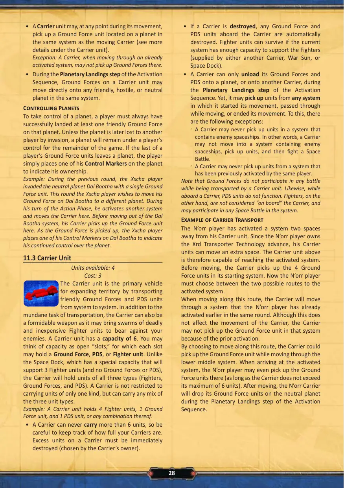
<figcaption>原版规则书 · 第 28 页（点击图片放大）</figcaption>
</figure>

<details class="mt-fold">
<summary>📝 第 28 页 AI 机翻对照（点击展开）</summary>
<div class="mt-body"><p>• 运载舰单位在其移动过程中的任何时刻，都可以拾起位于与移动中的运载舰同一星系内的行星上的地面部队单位（详见运载舰单位部分）。</p>

<p>例外：当运载舰穿过已激活的星系时，不能在那里拾起地面部队。</p>

<p>• 在激活序列的行星登陆阶段，运载舰上的地面部队可以直接移动到同一星系内任何友方、敌方或中立的行星上。</p>

<p>控制行星</p>

<p>要控制一个行星，玩家必须至少成功地将一个友方地面部队单位登陆到该行星上。除非该行星后来被其他玩家通过入侵而失去，否则行星将保持在该玩家的控制下直到游戏结束。如果玩家的最后一个地面部队单位离开行星，玩家只需将其一个控制标记放在行星上以表明其所有权。</p>

<p>示例：在上一轮中，Xxcha玩家使用一个地面部队单位入侵了中立行星Dal Bootha。在本轮中，Xxcha玩家希望将其在Dal Bootha上的地面部队移动到另一个行星。在他的行动阶段回合中，他激活了另一个星系并将运载舰移动到这里。在离开Dal Bootha星系之前，他的运载舰拾起了这里的地面部队单位。当地面部队被拾起时，Xxcha玩家将其一个控制标记放在Dal Bootha上，以表明他对该行星的持续控制。</p>

<p>11.3 运载舰单位</p>

<p>可用单位：4</p>

<p>费用：3</p>

<p>运载舰单位是通过在星系间运输友方地面部队单位和PDS单位来扩张领土的主要工具。除了运输这一平凡任务外，运载舰也可以成为一件 formidable 的武器，因为它可以带来大量致命且廉价的战斗机单位来对抗你的敌人。一个运载舰单位的容量为6。你可以将容量视为开放的"槽位"，每个槽位可以容纳一个地面部队、PDS或战斗机单位。与太空船坞不同，太空船坞有特殊容量可以支持3个战斗机单位（但不能容纳地面部队或PDS），而运载舰可以容纳所有三种类型的单位（战斗机、地面部队和PDS）。运载舰不限于只携带一种类型的单位，可以携带这三种单位类型的任何组合。</p>

<p>示例：一个运载舰单位可以携带4个战斗机单位、1个地面部队单位和1个PDS单位，或它们的任何组合。</p>

<p>• 运载舰永远不能携带超过6个单位，因此要小心追踪你的运载舰有多满。运载舰上多余的单位必须立即被摧毁（由运载舰所有者选择）。</p>

<p>• 如果运载舰被摧毁，运载舰上的任何地面部队和PDS单位将自动被摧毁。如果当前</p>

<p>•	 运输舰只能在其激活序列的行星登陆阶段将其地面部队和行星防御系统卸载到行星上或另一艘运输舰上。然而，它可以在其开始移动、移动过程中经过或结束移动的任何系统中拾取单位。对此，有以下例外：</p>

<p>◦◦运输舰绝不能在有敌方宇宙飞船的系统中拾取单位。换句话说，运输舰不能移动到包含敌方宇宙飞船的系统中，拾取单位，然后进行太空战斗。</p>

<p>◦◦运输舰绝不能从已被同一玩家先前激活的系统中拾取单位。请注意，在运输舰运输过程中，地面部队不参与任何战斗。同样，在运输舰上时，行星防御系统单位不发挥功能。另一方面，战斗机不被视为"在运输舰上"，可以参与系统中的任何太空战斗。</p>

<p>运输舰运输示例</p>

<p>N'orr玩家激活了一个距离其运输舰单位两个格的系统。由于N'orr玩家拥有Xrd运输者科技，其运输舰单位可以多移动一个格。因此，上述运输舰单位能够到达被激活的系统。</p>

<p>移动前，运输舰在其起始系统中拾取了4个地面部队单位。现在，N'orr玩家必须选择两条通往被激活系统的可能路线之一。</p>

<p>沿此路线移动时，运输舰将穿过N'orr玩家在同一轮早些时候已经激活的系统。尽管这不影响运输舰的移动，但由于先前激活，运输舰不能拾取该系统中的地面部队单位。</p>

<p>通过选择沿此路线移动，运输舰可以在穿过下方中间系统时拾取地面部队单位。到达被激活系统时，N'orr玩家甚至可以拾取那里的地面部队单位（只要运输舰不超过其6个单位的最大容量）。移动后，N'orr运输舰将在激活序列的行星登陆阶段将其地面部队单位投放到中立行星上。</p></div>
</details>

<figure>
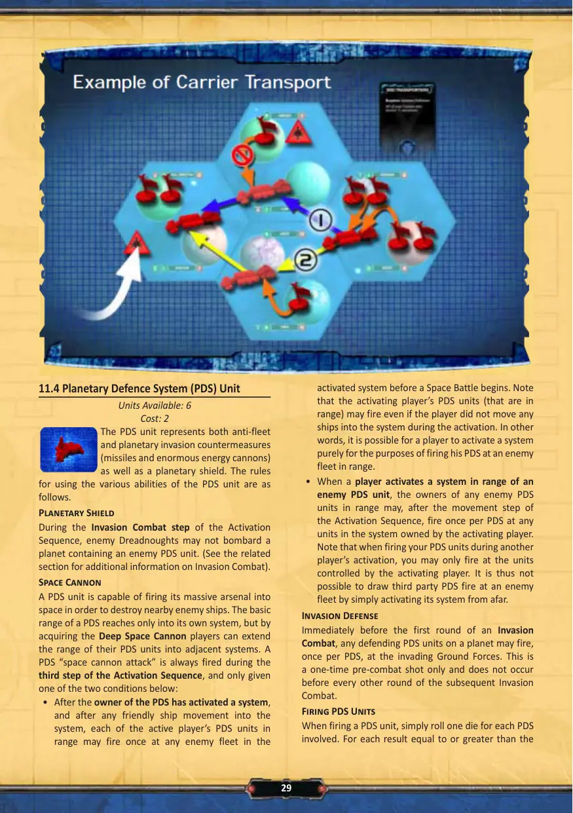
<figcaption>原版规则书 · 第 29 页（点击图片放大）</figcaption>
</figure>

<details class="mt-fold">
<summary>📝 第 29 页 AI 机翻对照（点击展开）</summary>
<div class="mt-body"><h2>11.4 行星防御系统(PDS)单位</h2>

<p>可用单位：6</p>

<p>费用：2</p>

<p>PDS单位既代表反舰队和行星入侵反制措施（导弹和巨型能量炮），也代表行星护盾。使用PDS单位各种能力的规则如下。</p>

<h3>行星护盾</h3>

<p>在激活序列的入侵战斗阶段，敌方无畏舰不能轰炸包含敌方PDS单位的行星。（参见相关章节获取关于入侵战斗的额外信息）。</p>

<h3>太空炮</h3>

<p>PDS单位能够将其庞大的武器库射向太空，以摧毁附近的敌方飞船。PDS的基本射程仅限于其所在的星系，但通过获得深空炮，玩家可以将PDS单位的射程扩展到相邻星系。PDS"太空炮攻击"总是在激活序列的第三阶段进行，并且仅在以下两个条件之一满足时才能进行：</p>

<p>• 在PDS所有者激活了一个星系后，以及在友方舰船移动到该星系后，激活玩家的每个处于射程内的PDS单位可以在太空战斗开始前，向激活星系中的任何敌方舰队开火一次。请注意，即使玩家在激活过程中没有将任何舰船移动到该星系，激活玩家的PDS单位（处于射程内）也可以开火。换句话说，玩家纯粹为了向处于射程内的敌方舰队开火其PDS而激活一个星系是可能的。</p>

<p>• 当玩家激活一个处于敌方PDS单位射程内的星系时，任何处于射程内的敌方PDS单位的所有者，可以在激活序列的移动阶段后，每个PDS向激活玩家拥有的该星系中的任何单位开火一次。请注意，在另一玩家的激活过程中开火你的PDS单位时，你只能向激活玩家控制的单位开火。因此，仅仅从远处激活敌方舰队的星系，不可能让第三方PDS向该敌方舰队开火。</p>

<h3>入侵防御</h3>

<p>在入侵战斗的第一轮之前，行星上任何防御方的PDS单位可以每个PDS一次向入侵地面部队开火。这仅是一次战前开火，不会在后续入侵战斗的每一轮之前发生。</p>

<h3>开火PDS单位</h3>

<p>当开火PDS单位时，只需为每个涉及的PDS掷一个骰子。对于每个大于或等于的结果</p></div>
</details>

<figure>
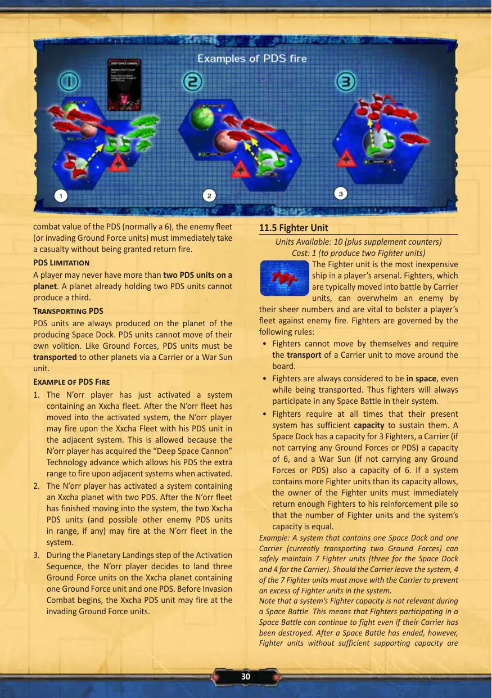
<figcaption>原版规则书 · 第 30 页（点击图片放大）</figcaption>
</figure>

<details class="mt-fold">
<summary>📝 第 30 页 AI 机翻对照（点击展开）</summary>
<div class="mt-body"><p>PDS的战斗力（通常为6点），敌方舰队</p>

<p>（或入侵的地面部队单位）必须立即承受</p>

<p>一次伤亡，且不被允许反击。</p>

<p>PDS限制</p>

<p>玩家在任何行星上拥有的PDS单位不得超过两个。已经拥有两个PDS单位的行星不能生产第三个。</p>

<p>运输PDS</p>

<p>PDS单位总是在生产它们的太空船坞所在的行星上生产。PDS单位不能自行移动。与地面部队一样，PDS单位必须通过航母或战阳单位运输到其他行星。</p>

<p>PDS射击示例</p>

<ol>
  <li>N'orr玩家刚刚激活了一个包含Xxcha舰队的星系。在N'orr舰队移动到被激活的星系后，N'orr玩家可以用他在相邻星系的PDS单位射击Xxcha舰队。这是允许的，因为N'orr玩家获得了"深空炮"科技，该科技允许他的PDS在激活时拥有额外射程，可以射击相邻星系。</li>
  <li>N'orr玩家激活了一个包含两个PDS的Xxcha行星的星系。在N'orr舰队完成进入该星系的移动后，两个Xxcha PDS单位（以及可能在范围内的其他敌方PDS单位，如果有）可以射击该星系中的N'orr舰队。</li>
</ol>

<h3>3.	 在激活序列的行星登陆步骤中，N'orr玩家决定登陆三个地面部队单位到包含一个地面部队单位和一个PDS的Xxcha行星上。在入侵战斗开始前，Xxcha PDS单位可以射击入侵的地面部队单位。</h3>

<p>11.5 战斗机单位</p>

<p>可用单位：10个（外加补充指示物）</p>

<p>费用：1（生产两架战斗机）</p>

<p>战斗机是玩家军火库中最便宜的舰船。战斗机通常由航母单位带入战斗，可以通过其数量优势压倒敌人，并且在增强玩家舰队抵御敌方火力方面至关重要。战斗机遵循以下规则：</p>

<p>•	 战斗机不能自行移动，需要航母单位的运输才能在版图上移动。</p>

<p>•	 战斗机即使在被运输时也被认为处于太空状态。因此，战斗机总是会参与其所在星系的任何太空战斗。</p>

<p>•	 战斗机始终要求其所在星系有足够的容量来容纳它们。太空船坞可容纳3架战斗机，航母（如果不携带任何地面部队或PDS）可容纳6架，战阳（如果不携带任何地面部队或PDS）也可容纳6架。如果一个星系包含的战斗机数量超过了其容量允许的范围，战斗机所有者必须立即将足够的战斗机返回其补充堆，直到战斗机数量与星系容量相等。</p>

<p>示例：一个包含一个太空船坞和一个</p>

<p>航母（当前正在运输两支地面部队）可以安全地维持7个战斗机单位（3个给太空船坞，4个给航母）。如果航母离开该系统，7个战斗机单位中的4个必须随航母移动，以防止系统中的战斗机单位过剩。</p>

<p>请注意，系统中的战斗机容量在太空战斗期间不相关。这意味着参与太空战斗的战斗机即使其航母已被摧毁，也可以继续战斗。然而，在太空战斗结束后，没有足够支援能力的战斗机单位将</p></div>
</details>

<figure>
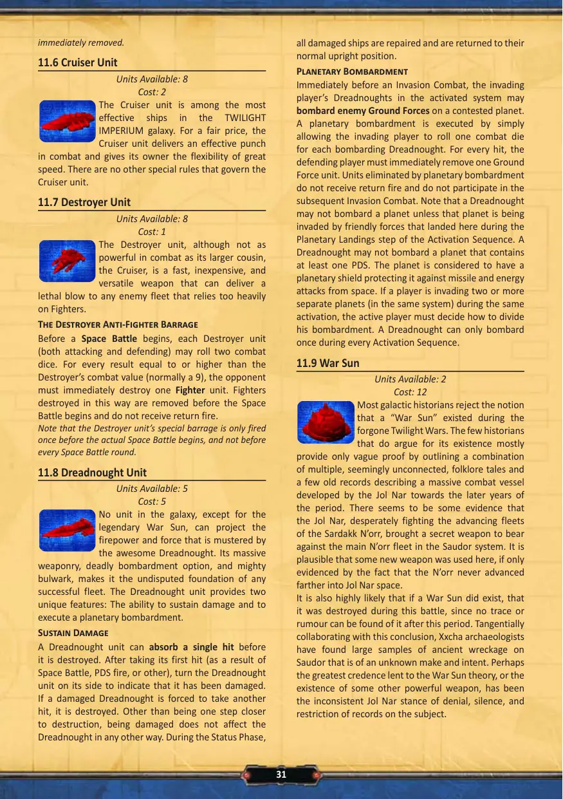
<figcaption>原版规则书 · 第 31 页（点击图片放大）</figcaption>
</figure>

<details class="mt-fold">
<summary>📝 第 31 页 AI 机翻对照（点击展开）</summary>
<div class="mt-body"><p>立即移除。</p>

<p>11.6 巡洋舰单位</p>

<p>可用数量：8</p>

<p>费用：2</p>

<p>巡洋舰单位是《TWILIGHT IMPERIUM》银河系中最</p>

<p>有效</p>

<p>的</p>

<p>舰船</p>

<p>之一。以合理的价格，巡洋舰单位在战斗中提供有效的打击，并为其所有者提供高速的灵活性。没有其他特殊规则适用于巡洋舰单位。</p>

<p>11.7 驱逐舰单位</p>

<p>可用数量：8</p>

<p>费用：1</p>

<p>驱逐舰单位虽然在战斗中不如其更大的表亲——巡洋舰那样强大，但它是一种快速、廉价且多功能的武器，可以对任何过度依赖战斗机单位的敌方舰队造成致命打击。</p>

<p>驱逐舰反战斗机弹幕</p>

<p>在太空战斗开始前，每艘驱逐舰单位（无论是进攻方还是防守方）可以掷出两个战斗骰。对于每个等于或高于驱逐舰战斗价值（通常为9）的结果，对手必须立即摧毁一个战斗机单位。以此方式被摧毁的战斗机在太空战斗开始前被移除，并且不会受到反击。</p>

<p>请注意，驱逐舰单位的特殊弹幕只在实际太空战斗开始前触发一次，而不是在每个太空战斗轮次前。</p>

<p>11.8 战列舰单位</p>

<p>可用数量：5</p>

<p>费用：5</p>

<p>银河系中没有哪个单位，除了传说中的太阳战舰，能够投射出由令人敬畏的战列舰所集结的火力和力量。其庞大的武器、致命的轰炸选项和强大的壁垒，使其成为任何成功舰队的无可争议的基础。战列舰单位提供两个独特功能：承受伤害的能力和执行行星轰炸的能力。</p>

<p>承受伤害</p>

<p>战列舰单位在被摧毁前可以承受一次伤害。在承受第一次伤害后（由于太空战斗、行星防御系统火力或其他原因），将战列舰单位侧放以表示它已被损坏。如果受损的战列舰被迫承受另一次伤害，它将被摧毁。除了更接近被摧毁外，受损状态不会以任何其他方式影响战列舰。在状态阶段，所有受损的舰船都会被修复并恢复到正常的直立位置。</p>

<p>行星轰炸</p>

<p>在入侵战斗开始前，激活系统中的入侵方玩家的战列舰可以轰炸争议行星上的敌方地面部队。行星轰炸通过让入侵方玩家为每艘轰炸的战列舰掷出一个战斗骰来执行。对于每一次命中，防守方玩家必须立即移除一个地面部队单位。被行星轰炸消灭的单位不会受到反击，也不会参与随后的入侵战斗。请注意，除非该行星正在被友好部队入侵（这些部队是在本回合期间登陆于此），否则战列舰不得轰炸行星。</p>

<h2>激活序列的行星着陆阶段。 Dreadnought 不得轰炸至少包含一个 PDS 的行星。该行星被认为拥有行星护盾，保护其免受来自太空的导弹和能量攻击。如果玩家在同一激活期间入侵两个或更多个独立的行星（在同一系统中），活跃玩家必须决定如何分配他的轰炸。Dreadnought 在每个激活序列期间只能轰炸一次。</h2>

<h3>11.9 战阳</h3>

<p>可用单位：2</p>

<p>费用：12</p>

<p>大多数银河历史学家都拒绝认为在过去的黄昏战争中存在"战阳"的观点。少数支持其存在的历史学家大多只是通过概述多个看似不相关的民间传说和几份描述贾尔纳尔在后期开发的大型战斗舰艇的古老记录，提供了模糊的证据。似乎有一些证据表明，贾尔纳尔在绝望地对抗萨达克诺尔 advancing 舰队时，在萨多系统中对主要诺尔舰队使用了一种秘密武器。如果仅凭诺尔舰队从未深入贾尔纳尔领地这一事实来判断，那么在这里使用某种新武器是可信的。如果战阳确实存在，那么它很可能在这场战斗中被摧毁，因为在此之后找不到任何关于它的痕迹或传闻。与此结论间接吻合的是，Xxcha 考古学家在萨多发现了大量未知制造和意图的古代残骸。也许对战阳理论或某种其他强大武器存在的最大支持，一直是贾尔纳尔在该问题上的否认、沉默和记录限制的不一致立场。</p></div>
</details>

<figure>
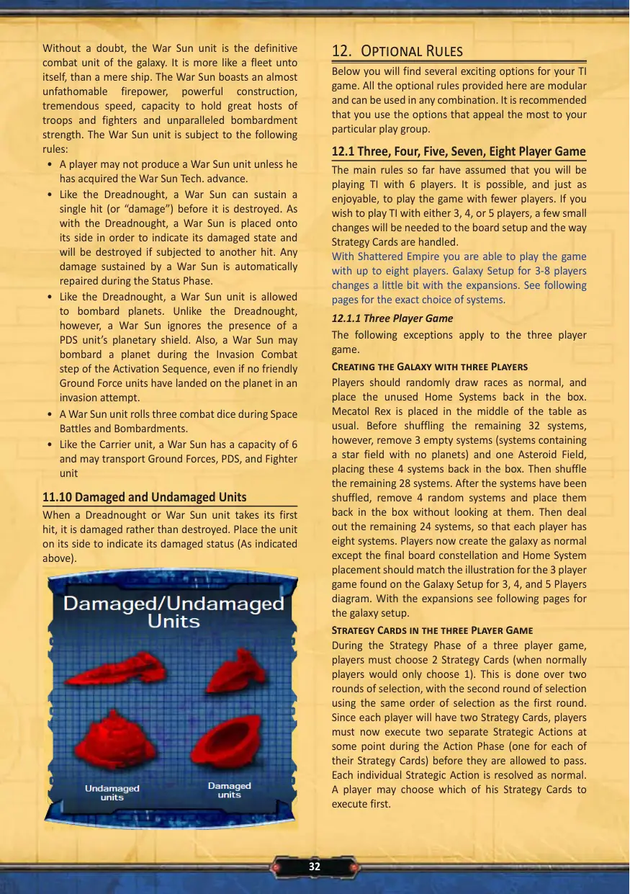
<figcaption>原版规则书 · 第 32 页（点击图片放大）</figcaption>
</figure>

<details class="mt-fold">
<summary>📝 第 32 页 AI 机翻对照（点击展开）</summary>
<div class="mt-body"><p>毫无疑问，战争太阳（War Sun）单位是银河系中决定性的战斗单位。它与其说是一艘普通的飞船，不如说更像一支舰队。战争太阳拥有几乎难以想象的火力、强大的建造能力、惊人的速度、容纳大量军队和战斗机的能力以及无与伦比的轰炸强度。战争太阳单位受以下规则约束：</p>

<p>• 玩家不得生产战争太阳单位，除非他已获得战争太阳科技（War Sun Tech. advance）。</p>

<p>• 如同无畏舰（Dreadnought），战争太阳可以在被摧毁前承受一次打击（或"伤害"）。与无畏舰一样，战争太阳被放置到侧面以表示其受损状态，如果再受到一次打击将被摧毁。战争太阳所承受的任何伤害都会在状态阶段（Status Phase）自动修复。</p>

<p>• 如同无畏舰，战争太阳单位允许轰炸行星。然而，与无畏舰不同，战争太阳会忽略行星防御系统（PDS）单位的行星护盾的存在。此外，战争太阳可以在激活序列（Activation Sequence）的入侵战斗步骤（Invasion Combat step）期间轰炸行星，即使在入侵尝试中没有友方地面部队（Ground Force）单位登陆该行星。</p>

<p>• 战争太阳单位在太空战斗（Space Battles）和轰炸（Bombardments）期间掷三个战斗骰。</p>

<p>• 如同航母（Carrier）单位，战争太阳的容量为6，可运输地面部队、行星防御系统和战斗机单位。</p>

<h3>11.10 受损和未受损单位</h3>

<p>当无畏舰或战争太阳单位首次受到打击时，它会被损坏而非被摧毁。将单位放置到侧面以表示其受损状态（如上所述）。</p>

<h3>12. 可选规则</h3>

<p>以下是为您的TI游戏提供的几个令人兴奋的选项。此处提供的所有可选规则都是模块化的，可以任意组合使用。建议您选择最适合您游戏群体的选项。</p>

<h4>12.1 三人、四人、五人、七人、八人游戏</h4>

<p>到目前为止，主要规则都假设您将进行6人TI游戏。用更少的玩家进行游戏也是可能的，并且同样有趣。如果您希望进行3人、4人或5人的TI游戏，需要对版图设置和策略卡（Strategy Cards）的处理方式进行一些小改动。</p>

<p>通过破碎帝国（Shattered Empire）扩展，您可以进行最多8人的游戏。3-8人游戏的银河系设置会随着扩展发生一些变化。具体系统选择请参见以下页面。</p>

<h4>12.1.1 三人游戏</h4>

<p>以下规则适用于三人游戏。</p>

<p>三人游戏创建银河系</p>

<p>玩家应像往常一样随机抽取种族，并将未使用的母星系统（Home Systems）放回盒中。梅卡托尔雷克斯（Mecatol Rex）像往常一样放置在桌子中央。然而，在洗牌剩余的32个系统之前，请移除3个空系统（包含</p>

<p>一个没有行星的星域)和一个小行星域，</p>

<p>将这4个系统放回盒中。然后洗混</p>

<p>剩下的28个系统。系统洗混后，</p>

<p>随机移除4个系统并将它们放回盒中，</p>

<p>不要查看。然后分发</p>

<p>剩下的24个系统，使每位玩家拥有八个系统。</p>

<p>玩家现在按照常规创建星系，</p>

<p>但最终的星系星座和母星放置应与</p>

<p>"3、4和5人玩家星系设置"图示中</p>

<p>3人游戏的图示相匹配。使用扩展时，</p>

<p>请参阅后续页面了解星系设置。</p>

<p>三人游戏中的策略卡</p>

<p>在三人游戏的策略阶段，</p>

<p>玩家必须选择2张策略卡（通常情况下玩家只会选择1张）。</p>

<p>这是通过两轮选择完成的，</p>

<p>第二轮选择使用与第一轮相同的顺序。</p>

<p>由于每位玩家将拥有两张策略卡，</p>

<p>玩家必须在行动阶段某个时刻执行两个独立的战略行动</p>

<p>（每张策略卡各一个），然后才允许结束回合。</p>

<p>每个独立的战略行动按常规进行。</p>

<p>玩家可以选择先执行其哪张策略卡。</p></div>
</details>

<figure>
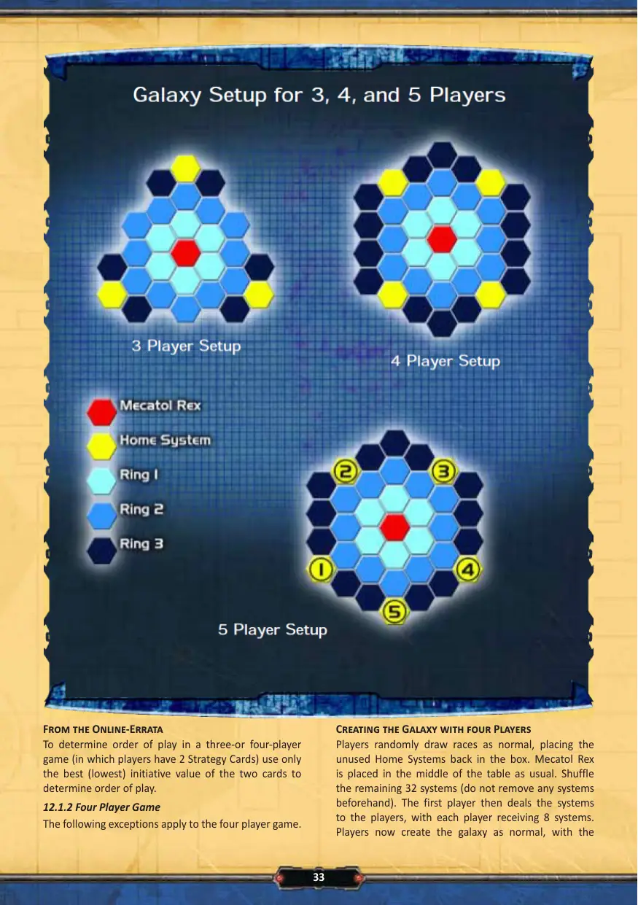
<figcaption>原版规则书 · 第 33 页（点击图片放大）</figcaption>
</figure>

<details class="mt-fold">
<summary>📝 第 33 页 AI 机翻对照（点击展开）</summary>
<div class="mt-body"><p>来自在线勘误</p>

<p>在三或四人游戏中（玩家拥有2张策略卡），仅使用两张策略卡中最好（最低）的主动性数值来确定行动顺序。</p>

<p>12.1.2 四人游戏</p>

<p>以下规则适用于四人游戏。</p>

<p>四人创建银河系</p>

<p>玩家正常随机抽取种族，将未使用的母系星系放回盒中。梅卡托尔雷克斯（Mecatol Rex）如常放置在桌子中央。洗混剩余的32个星系（不要预先移除任何星系）。然后第一位玩家将这些星系分发给玩家，每位玩家获得8个星系。玩家现在正常创建银河系，</p></div>
</details>

<figure>
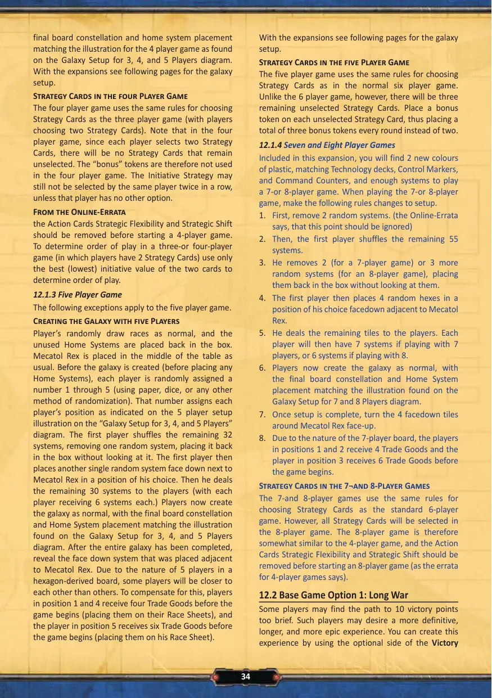
<figcaption>原版规则书 · 第 34 页（点击图片放大）</figcaption>
</figure>

<details class="mt-fold">
<summary>📝 第 34 页 AI 机翻对照（点击展开）</summary>
<div class="mt-body"><h2>最终版图星座和母星系统布局</h2>

<p>与"3、4、5人游戏银河系设置"图示中的4人游戏插图相匹配。</p>

<p>使用扩展时，请参阅后续页面了解银河系设置。</p>

<h3>四人游戏中的策略卡</h3>

<p>四人游戏使用与三人游戏相同的规则来选择策略卡（玩家选择两张策略卡）。注意，在四人游戏中，由于每位玩家选择两张策略卡，将没有未被选择的策略卡。因此，"奖励"指示物在四人游戏中不被使用。除非玩家没有其他选择，否则主动策略策略卡仍不能被同一玩家连续选择两次。</p>

<p>来自在线勘误：</p>

<p>在开始4人游戏前，应移除行动卡"战略灵活性"和"战略转移"。</p>

<p>在三人或四人游戏中（玩家拥有2张策略卡），使用两张牌中最好（最低）的主动价值值来确定游戏顺序。</p>

<h3>12.1.3 五人游戏</h3>

<p>以下规则适用于五人游戏的例外情况。</p>

<h3>五人游戏创建银河系</h3>

<p>玩家正常随机抽取种族，未使用的母星系统放回盒中。梅卡托尔雷克斯（Mecatol Rex）如常放置在桌子中央。在创建银河系之前（在放置任何母星系统之前），每位玩家被随机分配一个1到5的数字（使用纸张、骰子或任何其他随机化方法）。该数字指定每位玩家的位置，如"3、4、5人游戏银河系设置"图示中的5人设置插图所示。第一位玩家洗混剩余的32个系统，移除一个随机系统，不看内容将其放回盒中。然后第一位玩家在他选择的任意位置，在梅卡托尔雷克斯旁边面朝下放置另一个单独的随机系统。接着他将剩余的30个系统分发给玩家（每位玩家各获得6个系统）。玩家现在正常创建银河系，最终版图星座和母星系统布局与"3、4、5人游戏银河系设置"图示中的插图相匹配。整个银河系完成后，揭示放置在梅卡托尔雷克斯旁边的面朝下的系统。由于六边形衍生版图上5名玩家的特性，一些玩家会比其他玩家更靠近彼此。为了补偿这一点，位置1和4的玩家在游戏开始前获得四个贸易商品（将其放置在他们的种族表上），位置5的玩家在游戏开始前获得六个贸易商品（将其放置在他的种族表上）。</p>

<p>使用扩展时，请参阅后续页面了解银河系设置。</p>

<h3>五人游戏中的策略卡</h3>

<h2>12.1.4 七人和八人游戏</h2>

<p>本扩展包包含2种新的塑料颜色、匹配的科技牌库、控制标记和指挥标记，以及足够多的系统以进行7人或8人游戏。当进行7人或8人游戏时，在设置阶段进行以下规则变更：</p>

<ol>
  <li>首先，移除2个随机系统。（在线勘误说明，这一点应被忽略）</li>
  <li>然后，第一位玩家将剩余的55个系统洗牌。</li>
  <li>他再移除2个（7人游戏）或3个（8人游戏）随机系统，将它们放回盒子中且不查看。</li>
  <li>第一位玩家然后在梅卡托尔雷克斯（Mecatol Rex）周围选择一个位置，放置4个随机六边形板块，面朝下。</li>
  <li>他将剩余的板块分发给玩家。如果玩7人游戏，每位玩家将获得7个系统；如果玩8人游戏，每位玩家将获得6个系统。</li>
</ol>

<h3>6. 玩家现在按照常规创建银河系，最终版图配置和母系放置应与"七人和八人游戏银河系设置"图示相匹配。</h3>

<ol>
  <li>设置完成后，将梅卡托尔雷克斯周围的4个面朝下的板块翻转为面朝上。</li>
  <li>由于7人版图的特性，位置1和2的玩家在游戏开始前各获得4个贸易商品，位置3的玩家获得6个贸易商品。</li>
</ol>

<h2>七人和八人游戏中的策略卡</h2>

<p>七人和八人游戏使用与标准6人游戏相同的规则来选择策略卡。然而，在8人游戏中，所有策略卡都会被选走。因此，8人游戏在某种程度上与4人游戏相似，在开始8人游戏前，应移除行动卡"战略灵活性"（Strategic Flexibility）和"战略转移"（Strategic Shift）（如同4人游戏的勘误说明所述）。</p>

<h2>12.2 基础游戏选项1：长期战争</h2>

<p>一些玩家可能会觉得达到10个胜利点的路径过于短暂。这样的玩家可能希望获得更确定、更长篇和更史诗般的体验。您可以通过使用胜利点标记的背面选项来创造这种体验。</p></div>
</details>

<figure>
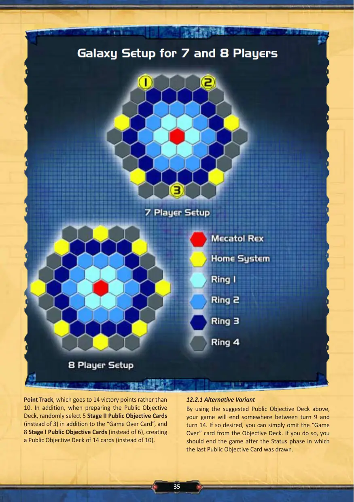
<figcaption>原版规则书 · 第 35 页（点击图片放大）</figcaption>
</figure>

<details class="mt-fold">
<summary>📝 第 35 页 AI 机翻对照（点击展开）</summary>
<div class="mt-body"><p>分数轨道，最高为14个胜利点而非10个。此外，在准备公共目标牌库时，除了"游戏结束卡"外，随机选择5张第二阶段公共目标卡（而非3张），以及8张第一阶段公共目标卡（而非6张），从而创建一个包含14张牌的公共目标牌库（而非10张）。</p>

<p>12.2.1 替代变体</p>

<p>通过使用上述建议的公共目标牌库，你的游戏将在第9回合到第14回合之间的某个时间结束。如果需要，你可以简单地从目标牌库中省略"游戏结束"卡。如果你这样做，你应该在最后一张公共目标卡被摸取的状态阶段结束后结束游戏。</p></div>
</details>

<figure>
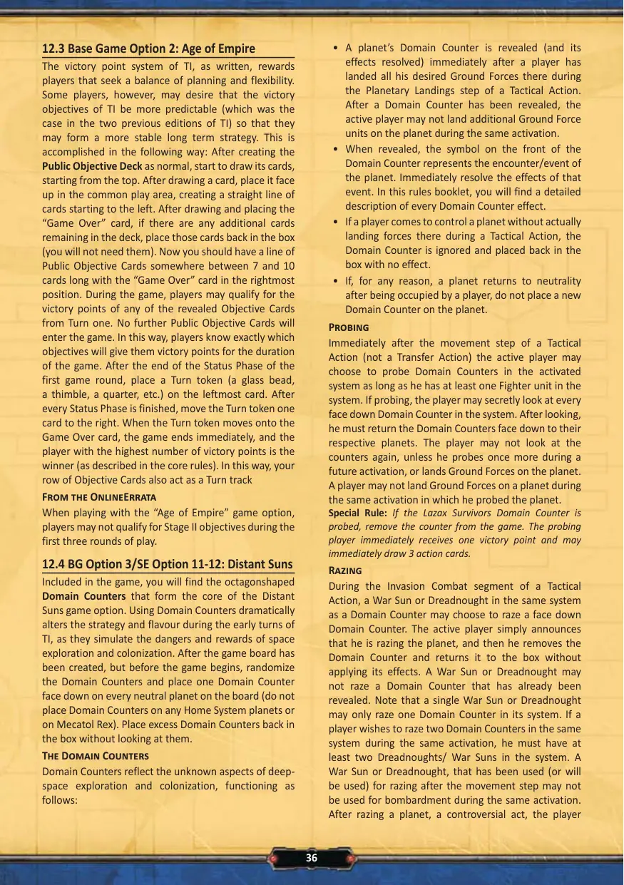
<figcaption>原版规则书 · 第 36 页（点击图片放大）</figcaption>
</figure>

<details class="mt-fold">
<summary>📝 第 36 页 AI 机翻对照（点击展开）</summary>
<div class="mt-body"><p>12.3 基础游戏选项2：帝国时代</p>

<p>TI的胜利点系统，如所写，奖励那些寻求计划性和灵活性平衡的玩家。然而，一些玩家可能希望TI的胜利目标更加可预测（TI的前两个版本就是这种情况），以便他们能够形成更稳定的长期策略。这通过以下方式实现：正常创建公共目标牌库后，开始从顶部抽取其牌。抽一张牌后，将其正面朝上放置在公共游戏区域，从左侧开始形成一条直线。抽并放置"游戏结束"牌后，如果牌库中还有剩余的牌，将这些牌放回盒中（你不需要它们）。现在你应该有一排7到10张长的公共目标牌，"游戏结束"牌在最右侧位置。在游戏期间，玩家从第一回合起就有资格获得已揭示的目标牌中的任何一张的胜利点。不会再有新的公共目标牌进入游戏。这样，玩家确切地知道在整个游戏过程中哪些目标会给他们带来胜利点。在第一游戏轮的状态阶段结束后，将一个回合指示物（玻璃珠、顶针、25美分硬币等）放在最左侧的牌上。每个状态阶段结束后，将回合指示物向右移动一张牌。当回合指示物移动到"游戏结束"牌上时，游戏立即结束，拥有最高胜利点数的玩家是获胜者（如核心规则中所述）。这样，你的目标牌排也充当了回合轨道</p>

<p>来自在线勘误</p>

<p>使用"帝国时代"游戏选项时，玩家在前三个游戏轮中不能获得第二阶段目标。</p>

<p>12.4 BG选项3/SE选项11-12：遥远太阳</p>

<p>游戏中包含八角形领域指示物，它们构成"遥远太阳"游戏选项的核心。使用领域指示物会显著改变TI早期回合的策略和氛围，因为它们模拟了太空探索和殖民的危险与回报。在创建游戏版图之后，但在游戏开始之前，随机化领域指示物，并在版图上每个中立行星上放置一个领域指示物（不要在任何母星系统行星或梅卡托尔雷克斯上放置领域指示物）。将多余的领域指示物放回盒中，不要查看它们。</p>

<p>领域指示物</p>

<p>领域指示物反映了深空探索和殖民的未知方面，功能如下：</p>

<p>• 一个行星的领域指示物在玩家将所有想要的地面部队着陆在该行星上后立即被揭示（并解决其效果）</p>

<h2>战术行动的行星着陆步骤</h2>

<p>在揭示领域指示物后，当前玩家在同一激活期间不得在行星上部署额外的地面部队单位。</p>

<p>• 当揭示时，领域指示物正面的符号代表该行星的遭遇/事件。立即解决该事件的效果。在本规则手册中，您将找到每个领域指示物效果的详细描述。</p>

<p>• 如果玩家在战术行动期间没有实际在行星上部署部队就控制了该行星，则忽略领域指示物并将其放回盒中，不产生任何效果。</p>

<p>• 由于任何原因，如果行星在被玩家占领后返回中立状态，不要在该行星上放置新的领域指示物。</p>

<h2>探测</h2>

<p>在战术行动的移动步骤之后（非转移行动），只要当前玩家在激活的系统中至少有一个战斗机单位，他就可以选择探测该系统中的领域指示物。如果进行探测，玩家可以秘密查看系统中所有面朝下的领域指示物。查看后，他必须将领域指示物面朝下放回各自的行星。除非他在未来的激活期间再次探测，或在行星上部署地面部队，否则玩家不得再次查看这些指示物。</p>

<p>玩家不得在同一激活期间探测行星后在该行星上部署地面部队。</p>

<p>特殊规则：如果探测到"拉扎克斯幸存者"领域指示物，将该指示物从游戏中移除。探测玩家立即获得一个胜利点，并可以立即抽取3张行动卡牌。</p>

<h2>焚毁</h2>

<p>在战术行动的入侵战斗阶段中，与领域指示物在同一系统的战阳舰或无畏舰可以选择焚毁一个面朝下的领域指示物。当前玩家只需宣布他正在焚毁该行星，然后移除领域指示物并将其放回盒中，不应用其效果。战阳舰或无畏舰不得焚毁已经揭示的领域指示物。请注意，单个战阳舰或无畏舰在其系统中只能焚毁一个领域指示物。如果玩家希望在同一激活期间焚毁同一系统中的两个领域指示物，他必须在该系统中至少有两艘无畏舰/战阳舰。在移动步骤之后被用于（或将被用于）焚毁的战阳舰或无畏舰，不得在同一激活期间用于轰炸。</p>

<p>焚毁行星这一争议性行为后，玩家</p></div>
</details>

<figure>
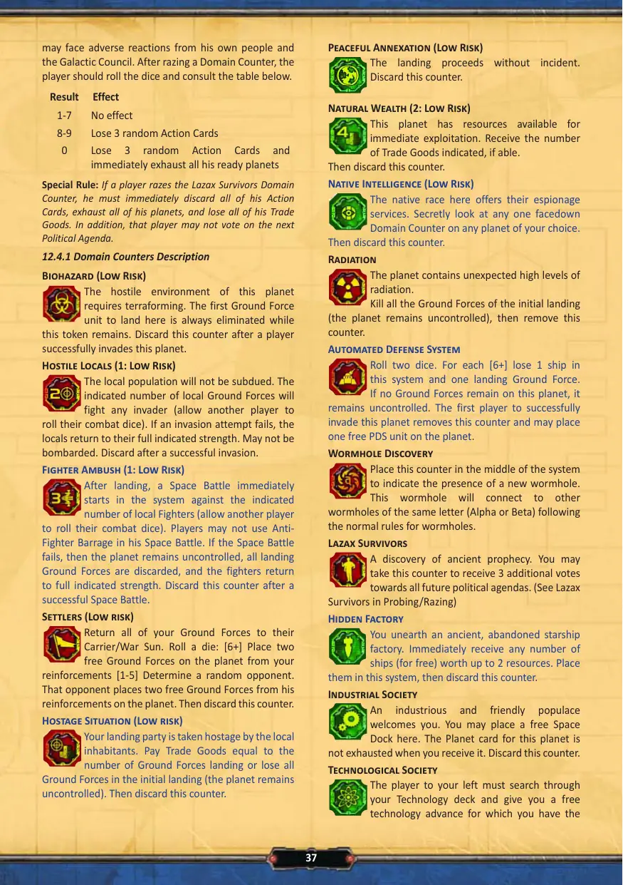
<figcaption>原版规则书 · 第 37 页（点击图片放大）</figcaption>
</figure>

<details class="mt-fold">
<summary>📝 第 37 页 AI 机翻对照（点击展开）</summary>
<div class="mt-body"><p>可能会面临自己的人民和银河理事会的 adverse 反应。在摧毁一个领域指示物后，玩家应该掷骰子并查阅下表。</p>

<p>结果</p>

<p>效果</p>

<p>1-7</p>

<p>无效果</p>

<p>8-9</p>

<p>失去3张随机行动卡</p>

<p>失去随机行动卡并立即使其所有已准备好的行星进入耗尽状态</p>

<p>特殊规则：如果玩家摧毁了 Lazax 幸存者领域指示物，他必须立即弃掉他所有的行动卡，使其所有行星进入耗尽状态，并失去他所有的贸易品。此外，该玩家不得在下一个政治议程中投票。</p>

<p>12.4.1 领域指示物描述</p>

<p>生物危害（低风险）</p>

<p>这颗行星的敌对环境需要地球化改造。当这个指示物存在时，第一个降落的地面部队单位总是会被消灭。在玩家成功入侵这颗行星后，弃掉这个指示物。</p>

<p>敌对当地人（1：低风险）</p>

<p>当地居民不会被征服。指定数量的当地地面部队将与任何入侵者战斗（允许另一名玩家掷他们的战斗骰子）。如果入侵尝试失败，当地人会恢复到其完整的指定强度。不能被轰炸。在成功入侵后弃掉。</p>

<p>战斗机伏击（1：低风险）</p>

<p>降落后，立即在该系统中针对指定数量的当地战斗机开始一场太空战斗（允许另一名玩家掷他们的战斗骰子）。玩家不能在这场太空战斗中使用战斗机拦截火力。如果太空战斗失败，则行星保持未控制状态，所有降落的地面部队被弃掉，战斗机恢复到完整的指定强度。在成功进行太空战斗后弃掉这个指示物。</p>

<p>定居者（低风险）</p>

<p>将你所有的地面部队返回到它们的运输舰/战阳。掷一个骰子：[6+] 从你的增援部队中在行星上放置两个免费的地面部队 [1-5] 确定一个随机对手。该对手从他的增援部队中在行星上放置两个免费的地面部队。然后弃掉这个指示物。</p>

<p>人质危机（低风险）</p>

<p>你的登陆队被当地居民扣为人质。支付等于降落地面部队数量的贸易品，或失去初始登陆中的所有地面部队（行星保持未控制状态）。然后弃掉这个指示物。</p>

<p>和平吞并（低风险）</p>

<p>降落过程没有发生意外。弃掉这个指示物。</p>

<p>自然财富（2：低风险）</p>

<p>这颗行星有可供立即开发的资源。如果可能，获得指定数量的贸易品。然后弃掉这个指示物。</p>

<p>本土情报（低风险）</p>

<p>这里的本土种族提供他们的间谍服务。秘密查看你选择的任何一颗行星上的任意一张面朝下的领域指示物。然后弃掉这个指示物。</p>

<p>辐射</p>

<p>这颗行星含有意外的高水平辐射。</p>

<p>杀死初始登陆中的所有地面部队</p>

<p>(该星球保持未被控制)，然后移除这个指示物。</p>

<p>自动防御系统</p>

<p>掷两个骰子。对于每个[6+]，在此星系中损失1艘战舰和1个登陆地面部队。</p>

<p>如果没有地面部队留在此星球上，它保持未被控制。第一个成功入侵此星球的玩家移除这个指示物，并可以在此星球上放置一个免费的PDS单位。</p>

<p>虫洞发现</p>

<p>将此指示物放置在星系中央，以表示新虫洞的存在。</p>

<p>这个虫洞将遵循虫洞的正常规则，连接到其他相同字母(Alpha或Beta)的虫洞。</p>

<p>拉扎克斯幸存者</p>

<p>古代预言的发现。你可以拿取这个指示物，以在未来所有政治议程中获得3张额外投票。(参见"探查/摧毁"中的拉扎克斯幸存者)</p>

<p>隐藏工厂</p>

<p>你发现了一个古老废弃的星际飞船工厂。立即免费接收任意数量价值不超过2资源的战舰。将它们放置在此星系中，然后弃置此指示物。</p>

<p>工业社会</p>

<p>一个勤劳友好的民众欢迎你。你可以在此处放置一个免费的太空船坞。当你获得此星球卡牌时，该星球卡牌不会处于耗尽状态。弃置此指示物。</p>

<p>技术社会</p>

<p>你左边的玩家必须搜索你的科技牌组，并给你一个你已有 prerequisites 的免费科技升级。</p></div>
</details>

<figure>
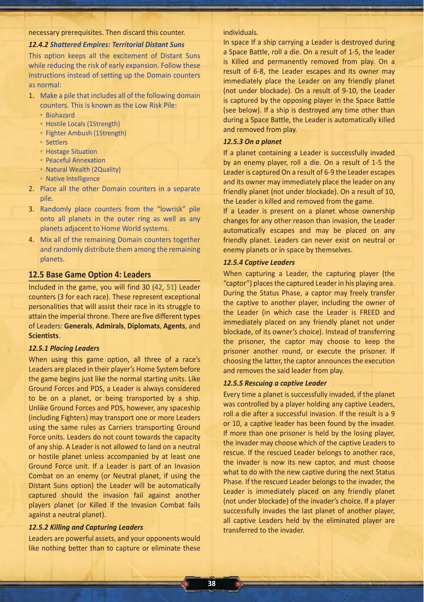
<figcaption>原版规则书 · 第 38 页（点击图片放大）</figcaption>
</figure>

<details class="mt-fold">
<summary>📝 第 38 页 AI 机翻对照（点击展开）</summary>
<div class="mt-body"><p>必要的前提条件。然后弃掉这个指示物。</p>

<p>12.4.2 破碎帝国：遥远太阳的领土</p>

<p>这个选项保留了遥远太阳的所有刺激，同时降低了早期扩张的风险。按照以下说明进行，而不是按照常规设置领域指示物：</p>

<h3>1. 创建一个包含以下所有领域指示物的堆。这被称为低风险堆：</h3>

<p>◦◦生物危害</p>

<p>◦◦敌对本地居民（1级强度）</p>

<p>◦◦战斗机伏击（1级强度）</p>

<p>◦◦殖民者</p>

<p>◦◦人质情况</p>

<p>◦◦和平吞并</p>

<p>◦◦自然财富（2级品质）</p>

<p>◦◦本地情报</p>

<h3>2. 将所有其他领域指示物放在另一个堆中。</h3>

<ol>
  <li>从"低风险"堆中随机将指示物放置在外环的所有行星以及任何与母星系统相邻的行星上。</li>
</ol>

<h3>4. 将剩余的所有领域指示物混合在一起，并随机分配到剩余的行星上。</h3>

<p>12.5 基础游戏选项4：领袖</p>

<p>游戏中包含30个（42个，51个）领袖指示物（每个种族3个）。这些代表杰出人物，将协助他们的种族争夺帝国王位。有五种不同类型的领袖：将军、海军上将、外交官、特工和科学家。</p>

<p>12.5.1 放置领袖</p>

<p>使用这个游戏选项时，一个种族的所有三个领袖在游戏开始前都放置在其玩家的母星系统中，就像常规的起始单位一样。与地面部队和行星防御系统一样，领袖总是被认为位于行星上，或由飞船运输。然而，与地面部队和行星防御系统不同的是，任何飞船（包括战斗机）都可以使用与航空母舰运输地面部队单位相同的规则运输一个或多个领袖。领袖不计入任何飞船的容量。除非至少有一个地面部队单位陪同，否则领袖不允许登陆中立或敌对行星。如果领袖是针对敌方（或如果使用遥远太阳选项则为中立行星）入侵战斗的一部分，如果入侵失败于另一个玩家的行星（或如果入侵战斗失败于中立行星），领袖将被自动俘获（或被消灭）。</p>

<p>12.5.2 消灭和俘获领袖</p>

<p>领袖是有力的资产，你的对手没有比俘获或消灭这些个体更好的事情了。</p>

<p>在太空中 如果运载领袖的飞船在太空战斗中被摧毁，掷一个骰子。结果为1-5时，领袖被消灭并永久移出游戏。结果为6-8时，领袖逃脱，其所有者可以立即将领袖放置在任何友方行星上（不被封锁）。结果为9-10时，领袖在太空战斗中被对手俘获（见下文）。如果飞船在任何非太空战斗期间被摧毁，领袖自动被消灭。</p>

<p>12.5.3 在行星上</p>

<p>如果一个包含领袖的行星被敌方玩家成功入侵，掷一个骰子。结果为1-5时，领袖被俘获。结果为6-9时，领袖逃脱，其拥有者可以立即将该领袖放置在任何友好的行星上（不受封锁）。结果为10时，领袖被处决并从游戏中移除。</p>

<p>如果领袖存在于一个因除入侵外的任何其他原因改变所有权的行星上，领袖会自动逃脱，并可被放置在任何友好的行星上。领袖永远不能单独存在于中立或敌方行星上，或太空中。</p>

<p>12.5.4 被俘的领袖</p>

<p>俘获领袖时，俘获者（"俘获者"）将被俘的领袖放置在其游戏区域中。</p>

<p>在状态阶段，俘获者可以自由地将俘虏转移给其他玩家，包括领袖的拥有者（在这种情况下，领袖被释放，并立即被放置在其拥有者选择的任何友好的行星上，不受封锁）。除了转移俘虏，俘获者可以选择继续拘留俘虏一个回合，或处决俘虏。如果选择后者，俘获者宣布处决并将该领袖移出游戏。</p>

<p>12.5.5 营救被俘的领袖</p>

<p>每次行星被成功入侵时，如果该行星由持有任何被俘领袖的玩家控制，则在成功入侵后掷一个骰子。如果结果为9或10，入侵者找到了一名被俘的领袖。</p>

<p>如果失败玩家持有不止一名俘虏，入侵者可以选择营救哪一名被俘的领袖。如果被营救的领袖属于另一个种族，入侵者现在成为其新的俘获者，并必须在下一个状态阶段决定如何处理新的俘虏。如果被营救的领袖属于入侵者，领袖立即被放置在入侵者选择的任何友好的行星上（不受封锁）。如果一个玩家成功入侵了另一个玩家的最后一个行星，被淘汰玩家持有的所有被俘领袖都将转移给入侵者。</p></div>
</details>

<figure>
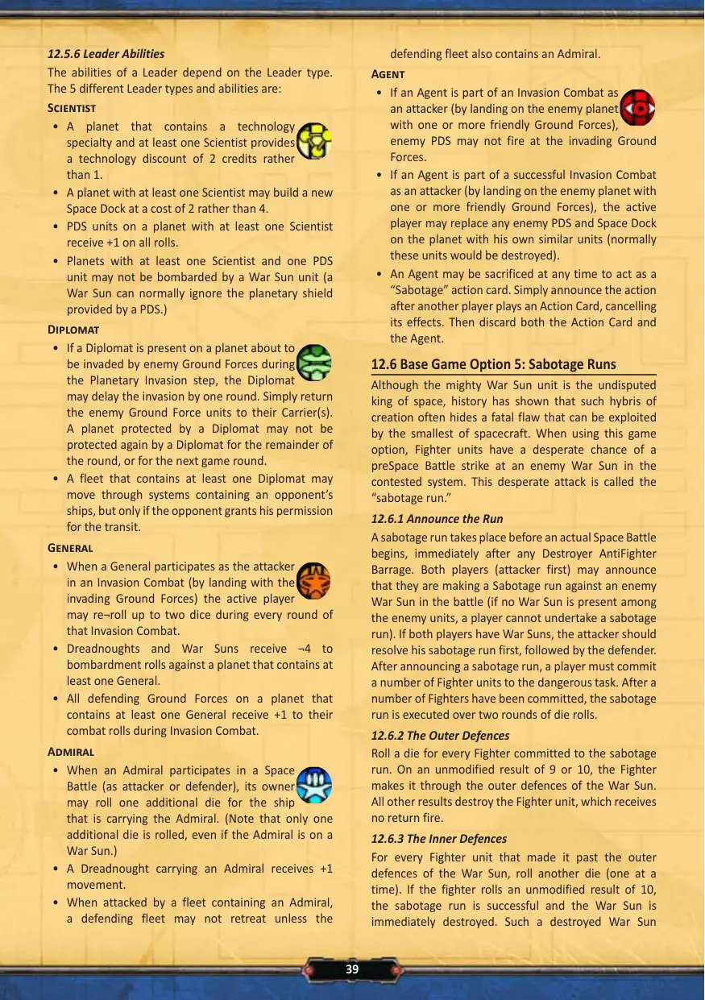
<figcaption>原版规则书 · 第 39 页（点击图片放大）</figcaption>
</figure>

<details class="mt-fold">
<summary>📝 第 39 页 AI 机翻对照（点击展开）</summary>
<div class="mt-body"><h3>12.5.6 领导者能力</h3>

<p>领导者的能力取决于领导者类型。</p>

<p>5种不同的领导者类型及其能力如下：</p>

<p><strong>科学家</strong></p>

<p>•   包含科技专长且至少有一名科学家的行星提供2点信用点数的科技折扣，而非1点。</p>

<p>•   拥有至少一名科学家的行星可以花费2点而非4点建造新的太空船坞。</p>

<p>•   拥有至少一名科学家的行星上的PDS单位在所有掷骰中获得+1。</p>

<p>•   拥有至少一名科学家和一台PDS单位的行星不能被战阳单位轰炸（战阳单位通常可以忽略PDS提供的行星护盾）。</p>

<p><strong>外交官</strong></p>

<p>•   如果在外敌地面部队入侵行星步骤期间，一名外交官存在于即将被入侵的行星上，该外交官可以将入侵延迟一个回合。只需将敌方地面部队单位返回其运输舰。受外交官保护的行星在本回合剩余时间内或下一个游戏回合内不得再次受外交官保护。</p>

<p>•   包含至少一名外交官的舰队可以穿过包含对手舰船的系统，但前提是对手允许其通行。</p>

<p><strong>将军</strong></p>

<p>•   当将军作为入侵战斗中的攻击方参与时（通过与入侵地面部队一同登陆），当前玩家可以在该入侵战斗的每一轮中重新掷最多两个骰子。</p>

<p>•   针对包含至少一名将军的行星，无畏舰和战阳单位的轰炸掷骰获得-4。</p>

<p>•   在包含至少一名将军的行星上，所有防御地面部队在入侵战斗中的战斗掷骰获得+1。</p>

<p><strong>海军上将</strong></p>

<p>•   当海军上将参与太空战斗（作为攻击方或防御方）时，其拥有者可以为搭载海军上将的舰船多掷一个骰子。（注意即使海军上将在战阳上，也只多掷一个骰子。）</p>

<p>•   搭载海军上将的无畏舰获得+1移动力。</p>

<p>•   当被包含海军上将的舰队攻击时，防御舰队不得撤退，除非防御舰队也包含一名海军上将。</p>

<p><strong>特工</strong></p>

<p>•   如果特工作为攻击方参与入侵战斗（通过与一个或多个友方地面部队一同登陆敌方行星），敌方PDS不得向入侵地面部队开火。</p>

<p>•   如果特工作为攻击方参与成功的入侵战斗（通过与一个或多个友方地面部队一同登陆敌方行星），当前玩家可以用自己类似的单位替换该行星上任何敌方PDS和太空船坞（通常这些单位会被摧毁）。</p>

<p>•   特工可以在任何时间被牺牲，充当"破坏"行动卡。只需在另一名玩家打出行动卡后宣布该行动，取消其效果。然后弃置该行动卡和特工。</p>

<p>12.6 基础游戏选项5：破坏行动</p>

<p>尽管强大的战争太阳（War Sun）单位是太空当之无愧的</p>

<p>王者，但历史表明，这种创造性的傲慢往往隐藏着一个致命缺陷，可以被最小的宇宙飞船所利用。当使用此游戏选项时，战斗机单位在敌方战争太阳处于争议星系中时，有机会在太空战开始前进行绝望的打击。这次绝望的攻击被称为"破坏行动"。</p>

<p>12.6.1 宣布行动</p>

<p>破坏行动在实际太空战开始前进行，在任何驱逐机反战斗机弹幕之后。双方玩家（攻击方先）可以宣布他们对战斗中的敌方战争太阳进行破坏行动（如果敌方单位中没有战争太阳，玩家不能进行破坏行动）。如果双方都有战争太阳，攻击方应先解决其破坏行动，然后是防御方。宣布破坏行动后，玩家必须投入一定数量的战斗机单位执行这项危险任务。在投入一定数量的战斗机后，破坏行动将通过两轮掷骰子执行。</p>

<p>12.6.2 外部防御</p>

<p>为投入到破坏行动中的每架战斗机掷一次骰子。如果未修改的结果为9或10，战斗机成功突破战争太阳的外部防御。所有其他结果会摧毁战斗机单位，且不会受到反击。</p>

<p>12.6.3 内部防御</p>

<p>对于成功突破战争太阳外部防御的每架战斗机，再掷一次骰子（一次一个）。如果战斗机掷出未修改的10点结果，破坏行动成功，战争太阳立即被摧毁。这样的被摧毁战争太阳</p></div>
</details>

<figure>
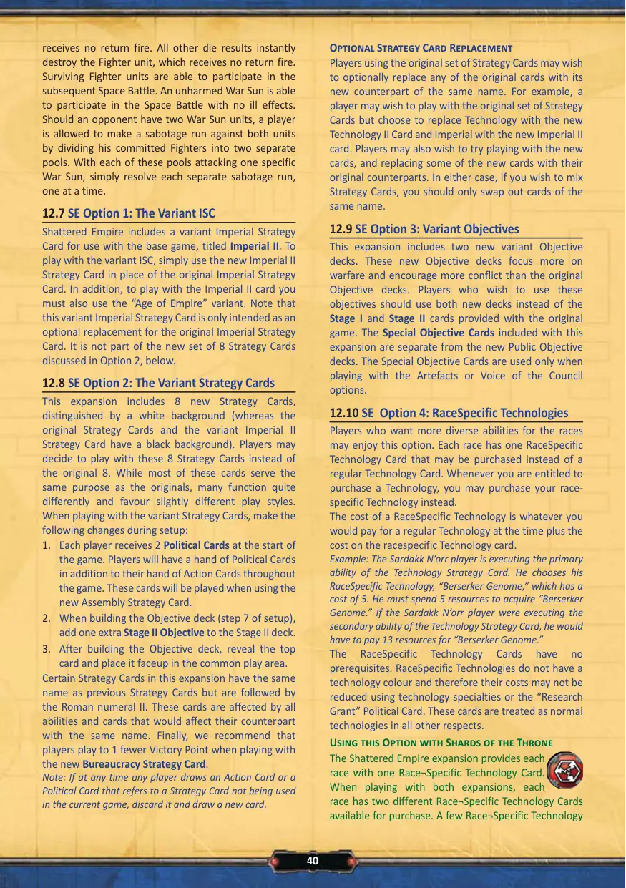
<figcaption>原版规则书 · 第 40 页（点击图片放大）</figcaption>
</figure>

<details class="mt-fold">
<summary>📝 第 40 页 AI 机翻对照（点击展开）</summary>
<div class="mt-body"><p>不会受到反击。所有其他骰子结果会立即摧毁战斗机单位，该单位不会受到反击。</p>

<p>幸存的战斗机单位能够参与后续的太空战斗。未受损的太阳战舰能够参与太空战斗且不会产生不良影响。</p>

<p>如果对手有两艘太阳战舰，玩家可以将他投入的战斗机分成两个独立的池，从而对这两个单位都进行破坏突袭。通过让每个池攻击一个特定的太阳战舰，只需依次解决每个单独的破坏突袭即可。</p>

<p>12.7 SE 选项1：变体帝国战略卡</p>

<p>《破碎帝国》包含一张变体帝国战略卡，可与基础游戏一起使用，标题为"帝国II"。要使用变体帝国战略卡，只需用新的帝国II战略卡替换原始的帝国战略卡。此外，要使用帝国II卡，还必须使用"帝国时代"变体。请注意，这张变体帝国战略卡仅作为原始帝国战略卡的可选替换。它不属于下面选项2中讨论的新8张战略卡组。</p>

<p>12.8 SE 选项2：变体战略卡</p>

<p>这个扩展包含8张新的战略卡，以白色背景为特征（而原始战略卡和变体帝国II战略卡具有黑色背景）。玩家可以决定使用这8张新战略卡来替代原始的8张。虽然这些卡片中的大多数与原始卡片具有相同的目的，但许多功能完全不同，并且略微偏向不同的游戏风格。</p>

<p>使用变体战略卡游戏时，在设置阶段进行以下更改：</p>

<ol>
  <li>每位玩家在游戏开始时获得2张政治卡。在整个游戏中，玩家除了拥有行动卡手牌外，还将拥有政治卡手牌。这些卡片在使用新的议会战略卡时使用。</li>
  <li>在构建目标牌库（设置步骤7）时，向第二阶段目标牌库添加一张额外的第二阶段目标卡。</li>
</ol>

<h3>3. 构建目标牌库后，翻开顶牌并将其正面朝上放置在公共游戏区域中。</h3>

<p>这个扩展中的某些战略卡与之前的战略卡具有相同的名称，但后面跟着罗马数字II。这些卡片会受到所有能够影响其同名对应卡牌的能力和卡牌的影响。最后，我们建议玩家在使用新的官僚战略卡游戏时，以少1个胜利点为目标。</p>

<p>注意：如果任何时候任何玩家抽到一张引用当前游戏中未使用的战略卡的行动卡或政治卡，请将其弃置并抽一张新卡。</p>

<p>可选战略卡替换</p>

<p>使用原始战略卡组的玩家可能希望</p>

<p>选择性地用同名的新卡牌替换任何原始卡牌。例如，玩家可能希望使用原始的策略卡牌组，但选择用新的科技II卡牌替换科技卡，用新的帝国II卡牌替换帝国卡。玩家也可能希望尝试使用新卡牌，并用其原始卡牌替换一些新卡牌。在任何情况下，如果您想混合使用策略卡牌，您应该只交换同名的卡牌。</p>

<p>12.9 SE 选项3：变体目标</p>

<p>这个扩展包包含两个新的变体目标牌库。这些新的目标牌库更侧重于战争，比原始的目标牌库鼓励更多的冲突。希望使用这些目标的玩家应该使用这两个新的牌库，而不是原始游戏提供的第一阶段和第二阶段卡牌。随此扩展包包含的特殊目标卡牌与新的公共目标牌库是分开的。特殊目标卡牌仅在玩神器或议会之声选项时使用。</p>

<p>12.10 SE 选项4：种族专属科技</p>

<p>希望种族有更多样化能力的玩家可能会喜欢这个选项。每个种族有一张种族专属科技卡牌，可以代替常规科技卡牌购买。每当您有权购买科技时，您可以购买您的种族专属科技。</p>

<p>种族专属科技的成本是您当时需要为常规科技支付的金额加上种族专属科技卡牌上的成本。</p>

<p>示例：萨达克·诺尔玩家正在执行科技策略卡牌的主要能力。他选择了他的种族专属科技"狂暴基因组"，其成本为5。他必须花费5个资源来获得"狂暴基因组"。如果萨达克·诺尔玩家正在执行科技策略卡牌的次要能力，他必须为"狂暴基因组"支付13个资源。</p>

<p>种族专属科技卡牌没有先决条件。种族专属科技没有科技颜色，因此它们的成本不能使用科技专长或"研究资助"政治卡牌来降低。这些卡牌在所有其他方面被视为常规科技。</p>

<p>与王座碎片一起使用此选项</p>

<p>破碎帝国扩展包为每个种族提供了一张种族专属科技卡牌。当同时使用两个扩展包时，每个种族有两张不同的种族专属科技卡牌可供购买。少数种族专属科技</p></div>
</details>

<figure>
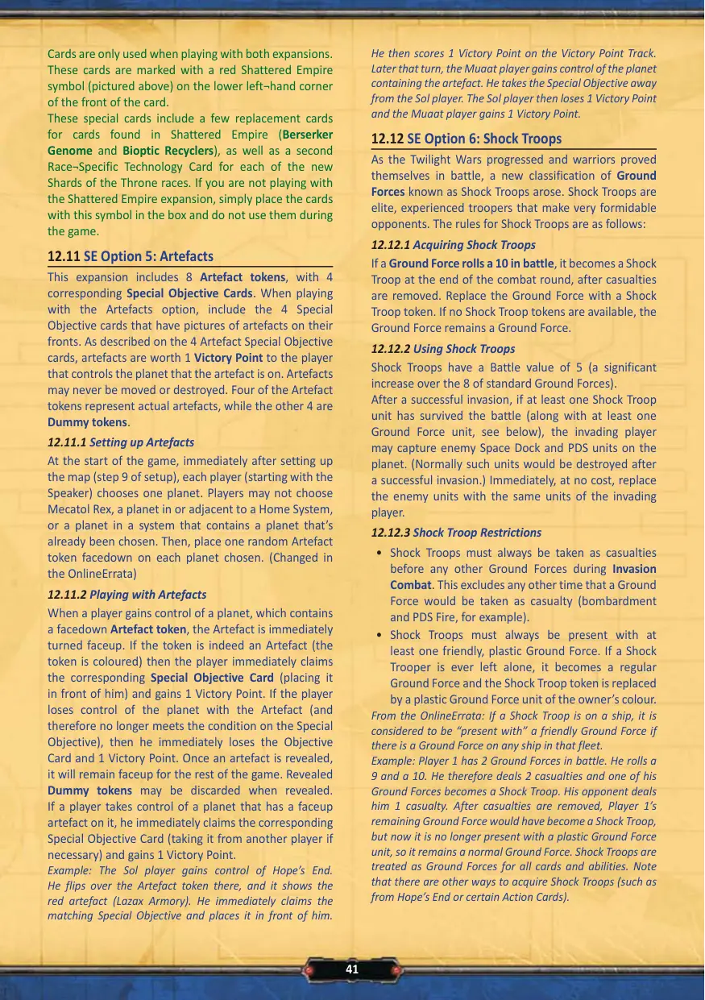
<figcaption>原版规则书 · 第 41 页（点击图片放大）</figcaption>
</figure>

<details class="mt-fold">
<summary>📝 第 41 页 AI 机翻对照（点击展开）</summary>
<div class="mt-body"><p>卡牌仅在同时使用两个扩展时使用。</p>

<p>这些卡牌在卡牌正面左下角标有红色"破碎帝国"(Shattered Empire)符号（如上图所示）。</p>

<p>这些特殊卡牌包括一些用于替换"破碎帝国"中的卡牌（狂暴者基因组(Berserker Genome)和生物光学回收器(Bioptic Recyclers)），以及每个新的"王座碎片"(Shards of the Throne)种族的第二张种族专属科技卡。如果您不使用"破碎帝国"扩展，只需将带有此符号的卡牌放入盒中，在游戏中不要使用它们。</p>

<p>12.11 SE 选项5：文物(Artefacts)</p>

<p>本扩展包含8个文物指示物，以及4张对应的特殊目标卡。在使用文物选项时，包含4张正面有文物图片的特殊目标卡。如4张文物特殊目标卡所述，文物对控制文物所在行星的玩家价值1个胜利点。文物永远不能被移动或销毁。4个文物指示物代表真实的文物，而另外4个是假指示物(Dummy tokens)。</p>

<p>12.11.1 设置文物</p>

<p>游戏开始时，在设置完地图（设置步骤9）后，每位玩家（从议长(Speaker)开始）选择一颗行星。玩家不能选择麦卡托尔雷克斯(Mecatol Rex)、位于或邻近母星系统的行星，或已选择行星所在系统中的行星。然后，在每个被选中的行星上随机放置一个面朝下的文物指示物。（在线勘误(Online-Errata)中已更改）</p>

<p>12.11.2 使用文物</p>

<p>当玩家获得一颗包含面朝下文物指示物的行星的控制权时，文物立即被翻转为面朝上。如果指示物确实是文物（指示物有颜色），则玩家立即获得相应的特殊目标卡（将其放在自己面前）并获得1个胜利点。如果玩家失去带有文物的行星的控制权（因此不再满足特殊目标上的条件），则他立即失去目标卡和1个胜利点。一旦文物被揭示，它将在游戏剩余时间内保持面朝上状态。被揭示的假指示物可以在被揭示时被弃置。</p>

<p>如果玩家获得一颗上面有面朝上文物的行星的控制权，他立即获得相应的特殊目标卡（必要时从另一名玩家处获取）并获得1个胜利点。</p>

<p>示例：索尔(Sol)玩家获得了希望终结星(Hope's End)的控制权。他翻转了那里的文物指示物，显示为红色文物（拉扎克斯军械库(Lazax Armory)）。他立即获得相应的特殊目标卡并将其放在自己面前。然后在胜利点轨道(Victory Point Track)上获得1个胜利点。当回合后期，穆阿特(Muaat)玩家获得了该行星的控制权。</p>

<p>12.12 SE 选项 6：突击部队</p>

<p>随着暮光之战的推进，战士们在战场上证明了自己，一种被称为突击部队的新型地面部队分类出现了。突击部队是精锐、经验丰富的士兵，是非常 formidable 的对手。突击部队的规则如下：</p>

<p>12.12.1 获得突击部队</p>

<p>如果一支地面部队在战斗中掷出10，则在伤亡被移除后，在战斗回合结束时，它将成为一支突击部队。用突击部队指示物替换地面部队。如果没有突击部队指示物可用，则该地面部队仍为地面部队。</p>

<p>12.12.2 使用突击部队</p>

<p>突击部队的战斗值为5（比标准地面部队的8有显著增加）。在成功入侵后，如果至少有一支突击部队单位在战斗中幸存（同时至少有一支地面部队单位，见下文），入侵玩家可以占领该行星上的敌方太空船坞和PDS单位。（通常这类单位在成功入侵后会被摧毁。）立即，无需任何费用，用入侵玩家的相同单位替换敌方单位。</p>

<p>12.12.3 突击部队限制</p>

<p>• 突击部队必须在入侵战斗中始终优先于任何其他地面部队被作为伤亡。这不包括其他地面部队将被作为伤亡的情况（例如轰炸和PDS射击）。</p>

<p>• 突击部队必须始终至少与一支友好的塑料地面部队一起存在。如果一支突击部队单独留下，它将成为一支普通地面部队，突击部队指示物将被替换为所有者颜色的塑料地面部队单位。</p>

<p>来自在线勘误：如果一支突击部队在舰船上，如果该舰队中的任何舰船上有一支地面部队，则认为该突击部队"与"友好的地面部队"在一起"。</p>

<p>示例：玩家1在战斗中有2支地面部队。他掷出9和10。因此他造成2点伤亡，并且他的其中一支地面部队成为突击部队。他的对手对他造成1点伤亡。伤亡被移除后，玩家1的剩余地面部队本应成为突击部队，但现在它不再与一支塑料地面部队单位在一起，所以它保持为普通地面部队。对于所有卡牌和能力，突击部队被视为地面部队。请注意，还有其他方式可以获得突击部队（例如来自希望之端或某些行动卡牌）。</p></div>
</details>

<figure>
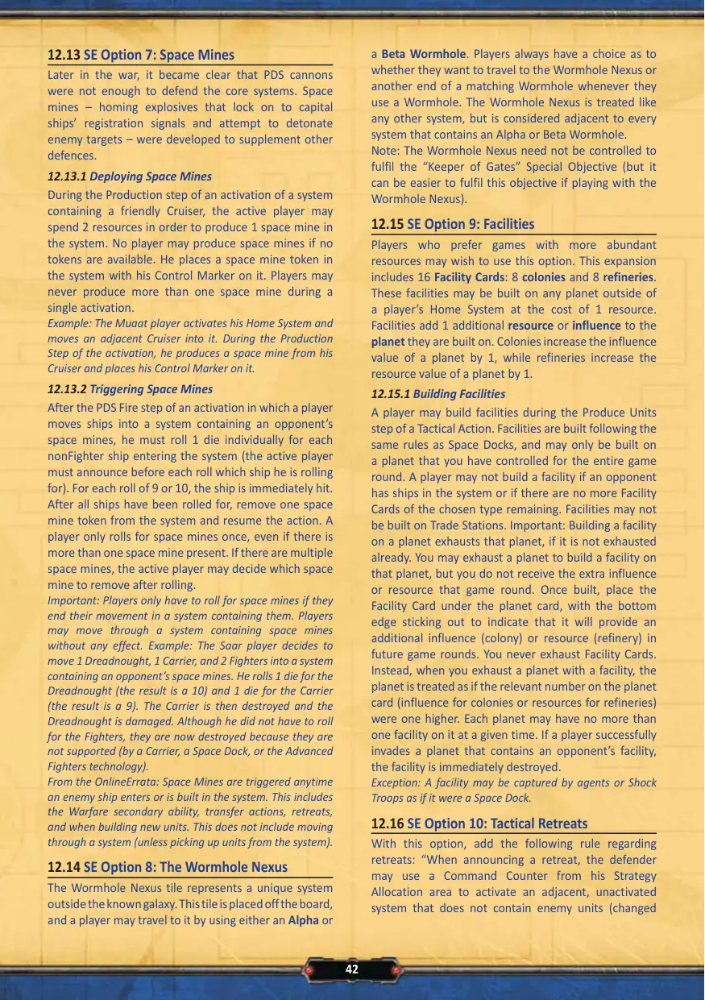
<figcaption>原版规则书 · 第 42 页（点击图片放大）</figcaption>
</figure>

<details class="mt-fold">
<summary>📝 第 42 页 AI 机翻对照（点击展开）</summary>
<div class="mt-body"><p>12.13 SE 选项 7：太空地雷</p>

<p>战争后期，很明显PDS大炮不足以防御核心系统。太空地雷——一种锁定战舰注册信号并尝试引爆敌方目标的自制炸弹——被开发出来以补充其他防御措施。</p>

<p>12.13.1 部署太空地雷</p>

<p>在包含友好巡洋舰的系统的激活的生产阶段，当前玩家可以花费2资源来在该系统中生产1个太空地雷。如果没有可用指示物，则任何玩家都不能生产太空地雷。他将一个太空地雷指示物放置在他有控制标记的系统中。玩家在一次激活中最多只能生产一个太空地雷。</p>

<p>示例：Muaat玩家激活他的母星，并将一艘相邻的巡洋舰移入其中。在激活的生产阶段，他从他的巡洋舰生产了一个太空地雷，并将他的控制标记放在上面。</p>

<p>12.13.2 触发太空地雷</p>

<p>在玩家将舰船移入包含对手太空地雷的系统的激活的PDS射击阶段之后，他必须为进入系统的每艘非战斗机单独掷1个骰子（当前玩家必须在每次掷骰前宣布他正在为哪艘舰船掷骰）。对于每个9或10的结果，舰船立即被击中。在所有舰船都掷骰完毕后，从系统中移除一个太空地雷指示物并继续行动。即使有多个太空地雷，玩家只为太空地雷掷骰一次。如果有多个太空地雷，当前玩家可以在掷骰后决定移除哪个太空地雷。</p>

<p>重要：玩家只有在结束移动时位于包含太空地雷的系统中时才需要为太空地雷掷骰。玩家可以穿过包含太空地雷的系统而没有任何效果。示例：Saar玩家决定将1艘无畏舰、1艘航母和2架战斗机移入一个包含对手太空地雷的系统中。他为无畏舰掷了1个骰子（结果是10），为航母掷了1个骰子（结果是9）。然后航母被摧毁，无畏舰受损。虽然他不需要为战斗机掷骰，但它们现在被摧毁了，因为它们没有得到支援（由航母、太空码头或先进战斗机技术）。</p>

<p>来自在线勘误：太空地雷在敌方舰船进入或在该系统中建造时会被触发。这包括战争次要能力、转移行动、撤退和建造新单位时。这不包括穿过一个系统（除非从系统中拾取单位）。</p>

<p>12.14 SE 选项 8：虫洞枢纽</p>

<p>虫洞枢纽板块代表一个位于已知星系之外的独特系统。该板块放置在版图外，玩家可以通过使用Alpha或</p>

<p>一个β虫洞。每当玩家使用虫洞时，他们总是可以选择是否前往虫洞网络或匹配虫洞的另一端。虫洞网络被视为与其他系统相同，但被认为与包含α或β虫洞的每个系统相邻。</p>

<p>注意：不必控制虫洞网络即可完成"守门人"特殊目标（但如果使用虫洞网络，完成此目标可能会更容易）。</p>

<p>12.15 SE 选项 9：设施</p>

<p>偏好资源更丰富游戏的玩家可能希望使用此选项。此扩展包含16张设施卡：8个殖民地和8个炼油厂。这些设施可以以1个资源的成本建造在任何玩家母系统之外的行星上。设施为它们所建造的行星增加1个额外资源或影响力。殖民地增加行星的影响力值1点，而炼油厂增加行星的资源值1点。</p>

<p>12.15.1 建造设施</p>

<p>玩家可以在战术行动的"单位生产"步骤期间建造设施。设施的建造遵循与太空船坞相同的规则，并且只能建造在玩家在整个游戏回合中都控制的行星上。如果对手在系统中拥有舰船，或者所选类型的设施卡已用完，玩家则不能建造设施。设施不能建造在贸易站上。重要：如果在行星上建造设施，该行星将被 exhausted（耗尽），如果它尚未 exhausted。您可以 exhausted 一个行星以在该行星上建造设施，但您不会在该游戏回合获得额外的影响力或资源。建造后，将设施卡放在行星卡下方，底部边缘露出，以表明它将在未来的游戏回合中提供额外的影响力（殖民地）或资源（炼油厂）。您永远不会 exhausted 设施卡。相反，当您 exhausted 一个带有设施的行星时，该行星被视为其行星卡上的相关数字（殖民地为影响力，炼油厂为资源）高1点。任何时候每个行星上最多只能有一个设施。如果玩家成功入侵包含对手设施的行星，该设施将被立即摧毁。</p>

<p>例外：设施可以被特工或突击部队捕获，就像太空船坞一样。</p>

<p>12.16 SE 选项 10：战术撤退</p>

<p>使用此选项，添加以下关于撤退的规则："当宣布撤退时，防御方可以使用其策略分配区域中的一个指挥计数器来激活一个相邻的、未激活的且不包含敌方单位的系统（更改</p></div>
</details>

<figure>
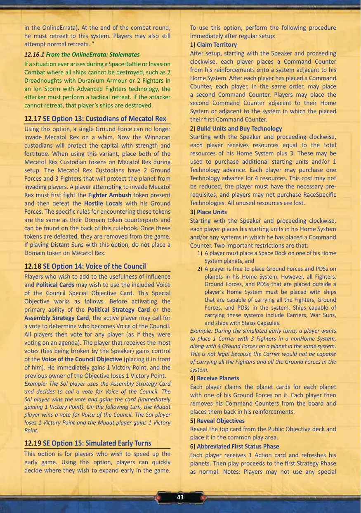
<figcaption>原版规则书 · 第 43 页（点击图片放大）</figcaption>
</figure>

<details class="mt-fold">
<summary>📝 第 43 页 AI 机翻对照（点击展开）</summary>
<div class="mt-body"><p>（详见在线勘误）。在战斗回合结束时，</p>

<p>他必须撤退到这个星系。玩家仍然可以尝试正常撤退。</p>

<p>"</p>

<p>12.16.1 来自在线勘误：僵局</p>

<p>如果在太空战斗或入侵战斗中出现所有飞船都无法被摧毁的情况，例如2艘装有杜拉inium装甲的战列舰，或2艘在离子风暴中拥有先进战斗机技术的战斗机，攻击方必须进行战术撤退。如果攻击方无法撤退，该玩家的飞船将被摧毁。</p>

<p>12.17 SE 选项13：梅卡托尔雷克斯的守护者</p>

<p>使用此选项，单个地面部队不能再随意入侵梅卡托尔雷克斯。现在，维纳兰守护者将用力量和坚韧保卫首都。使用此变体时，在设置期间将两个梅卡托尔雷克斯守护者指示物放置在梅卡托尔雷克斯上。梅卡托尔雷克斯守护者拥有2个地面部队和3个战斗机，将保护该星球免受入侵玩家的攻击。试图入侵梅卡托尔雷克斯的玩家必须首先与现有的战斗机伏击指示物战斗，然后用自己的地面部队击败敌对当地人。遇到这些指示物的具体规则与其领域指示物 counterparts 相同，可在本规则书背面找到。一旦这些指示物被击败，它们将从游戏中移除。如果使用此选项玩遥远太阳，不要在梅卡托尔雷克斯上放置领域指示物。</p>

<p>12.18 SE 选项14：议会之声</p>

<p>希望增强影响力和政治卡牌效用的玩家可以使用包含的议会之声特殊目标卡。此特殊目标的工作方式如下。在激活政治战略卡牌或议会战略卡牌的主要能力之前，当前玩家可以召集投票以决定谁成为议会之声。然后所有玩家为任意玩家投票（如同他们在为议程投票）。获得最多票数的玩家（平局由发言人打破）获得议会之声目标卡的控制权（将其放在自己面前）。他立即获得1个胜利点，而该目标的先前所有者失去1个胜利点。</p>

<p>示例：索尔玩家使用议会战略卡牌并决定召集议会之声的投票。索尔玩家赢得投票并获得该卡牌（立即获得1个胜利点）。在接下来的回合中，穆阿特玩家赢得议会之声的投票。索尔玩家失去1个胜利点，穆阿特玩家获得1个胜利点。</p>

<p>12.19 SE 选项15：模拟早期回合</p>

<p>此选项适用于希望加快早期游戏的玩家。使用此选项，玩家可以快速决定他们在游戏早期希望扩张的位置。要使用此选项，在常规设置后立即执行以下程序：</p>

<h3>1) 宣领领土</h3>

<p>设置后，从发言人开始顺时针进行，每位玩家从其增援部队中放置一个指挥官指示物到其母星系统相邻的一个系统上。每位玩家放置一个指挥官指示物后，以相同顺序，每位玩家可以放置第二个指挥官指示物。玩家可以将第二个指挥官指示物放置在其母星系统相邻的系统，或放置在其放置第一个指挥官指示物的系统相邻的位置。</p>

<h3>2) 建造单位和购买科技</h3>

<p>从发言人开始顺时针进行，每位玩家获得等于其母星系统总资源加3的资源。这些资源可用于购买额外的起始单位和/或1项科技升级。每位玩家可以花费4资源购买一项科技升级。此费用不可减少，玩家必须拥有必要的先决条件，且玩家不得购买种族专属科技。所有未使用的资源将丢失。</p>

<h3>3) 放置单位</h3>

<p>从发言人开始顺时针进行，每位玩家将其起始单位放置在其母星系统和/或任何放置有指挥官指示物的系统中。两个重要限制是：</p>

<h3>1) 玩家必须在其母星系统的一个行星上放置一个太空码头，并且</h3>

<h3>2) 玩家可以自由在其母星系统的行星上放置地面部队和行星防御系统。然而，所有放置在玩家母星系统之外的战斗机、地面部队和行星防御系统必须与能够携带该系统中所有战斗机、地面部队和行星防御系统的舰船一起放置。能够携带这些系统的舰船包括航空母舰、战阳舰和带有静力舱的舰船。</h3>

<p>示例：在模拟的早期回合中，一位玩家想要在一个非母星系统中放置1艘航空母舰和3架战斗机，同时在同一系统的行星上放置4个地面部队。这是不合法的，因为航空母舰将无法携带该系统中的所有战斗机和所有地面部队。</p>

<h3>4) 获得行星</h3>

<p>每位玩家声明其地面部队所在的每个行星的行星卡。然后每位玩家从版图上移除其指挥官指示物，并将其放回其增援部队中。</p>

<h3>5) 揭示目标</h3>

<p>从公共目标牌库顶翻开一张牌，并将其放置在公共游戏区域。</p>

<h3>6) 简化的第一状态阶段</h3>

<p>每位玩家获得1张行动牌并刷新其行星。然后游戏正常进行到第一战略阶段。注意：玩家不得使用任何特殊</p></div>
</details>

<figure>
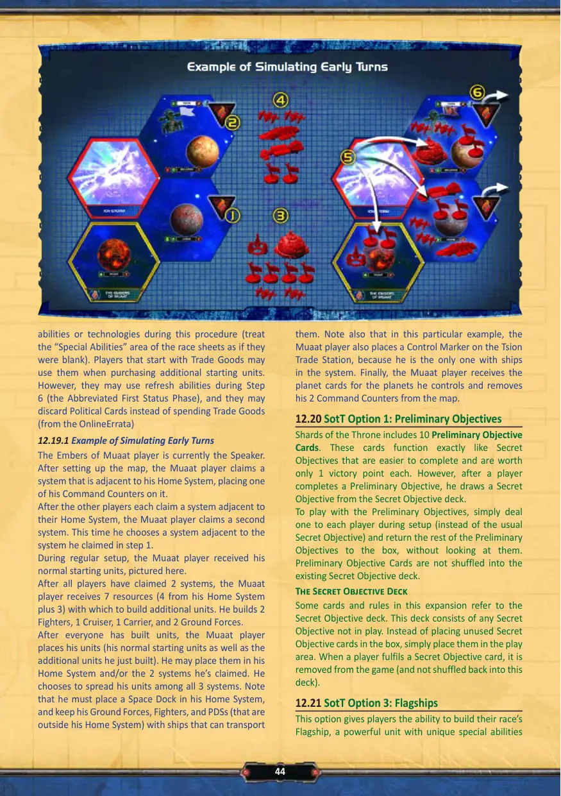
<figcaption>原版规则书 · 第 44 页（点击图片放大）</figcaption>
</figure>

<details class="mt-fold">
<summary>📝 第 44 页 AI 机翻对照（点击展开）</summary>
<div class="mt-body"><p>在此过程中不能使用能力或科技（将种族卡上的"特殊能力"区域视为空白）。拥有贸易品的玩家在购买额外起始单位时可以使用它们。然而，他们可以在第6步（简化版第一状态阶段）使用刷新能力，并且可以弃置政治卡牌而不是花费贸易品（来自在线勘误）</p>

<p>12.19.1 模拟早期回合示例</p>

<p>穆阿特（Muaat）玩家当前是议长。设置完版图后，穆阿特玩家占领一个与他母星相邻的系统，并将他的一个指挥指示物放置在上面。</p>

<p>在其他每位玩家都占领了与他们母星相邻的系统后，穆阿特玩家占领第二个系统。这次他选择了一个与他第一步占领的系统相邻的系统。</p>

<p>在常规设置中，穆阿特玩家获得了他的正常起始单位，如图片所示。</p>

<p>在所有玩家都占领了2个系统后，穆阿特玩家获得7个资源（来自他的母星4个加上3个），用于建造额外单位。他建造了2架战斗机、1艘巡洋舰、1艘航母和2支地面部队。</p>

<p>在所有人都建造完单位后，穆阿特玩家放置他的单位（他的正常起始单位以及他刚刚建造的额外单位）。他可以将它们放置在他的母星和/或他已占领的2个系统中。他选择将单位分散在这3个系统中。注意，他必须在他的母星中放置一个太空船坞，并将他的地面部队、战斗机和PDS（位于母星之外的）与能够运输它们的飞船放在一起。还要注意，在这个特定示例中，穆阿特玩家还在齐恩贸易站（Tsion Trade Station）上放置了一个控制标记，因为他是该系统中唯一有飞船的玩家。最后，穆阿特玩家获得他所控制的行星的行星牌，并将他的2个指挥指示物从版图上移除。</p>

<p>12.20 王座碎片选项1：初步目标</p>

<p>王座碎片（Shards of the Throne）包含10张初步目标牌。这些牌的功能与秘密目标完全相同，但更容易完成，且每张只值1个胜利点。然而，当玩家完成一个初步目标后，他从秘密目标牌堆中抽取一张秘密目标。</p>

<p>要使用初步目标，只需在设置期间给每位玩家发一张（代替通常的秘密目标），并将其余的初步目标牌放回盒中，不要查看它们。初步目标牌不洗入现有的秘密目标牌堆。</p>

<p>秘密目标牌堆</p>

<p>本扩展中的一些牌和规则提到了秘密目标牌堆。这个牌堆由任何未使用的秘密目标组成。不要将未使用的秘密目标牌放入盒中，只需将它们放在游戏区域即可。</p>

<p>区域。当玩家完成秘密目标卡牌时，该卡牌会被移出游戏（并且不会洗回此牌库）。</p>

<p>12.21 SotT 选项 3：旗舰</p>

<p>此选项让玩家能够建造其种族的旗舰，一个拥有独特特殊能力的强大单位。</p></div>
</details>

<figure>
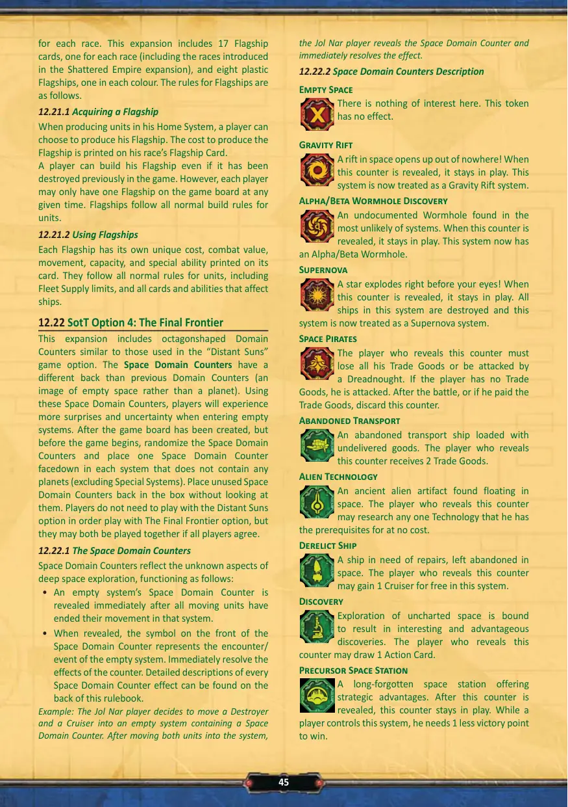
<figcaption>原版规则书 · 第 45 页（点击图片放大）</figcaption>
</figure>

<details class="mt-fold">
<summary>📝 第 45 页 AI 机翻对照（点击展开）</summary>
<div class="mt-body"><p>为每个种族提供。这个扩展包包含17张旗舰牌，每个种族一张（包括在《破碎帝国》扩展中引入的种族），以及八个塑料旗舰，每种颜色一个。旗舰规则如下。</p>

<p>12.21.1 获得旗舰</p>

<p>当玩家在自己的母系中生产单位时，可以选择生产他的旗舰。生产旗舰的成本印在他的种族的旗舰牌上。</p>

<p>即使旗舰在之前游戏中被摧毁，玩家也可以建造他的旗舰。然而，在任何给定时间，每个玩家在游戏版图上只能拥有一艘旗舰。旗舰遵循所有正常的单位建造规则。</p>

<p>12.21.2 使用旗舰</p>

<p>每艘旗舰都有其独特的成本、战斗力、移动能力、容量和特殊能力，印在牌上。它们遵循所有正常的单位规则，包括舰队供应限制，以及所有影响舰船的牌和能力。</p>

<p>12.22 SotT 选项4：最终边疆</p>

<p>这个扩展包包含八边形领域标记，类似于"遥远太阳"游戏选项中使用的标记。太空领域标记的背面与之前的领域标记不同（是太空图像而非行星）。使用这些太空领域标记，玩家在进入空旷系统时会体验到更多的惊喜和不确定性。在创建游戏版图之后，但在游戏开始之前，随机化太空领域标记，并在每个不包含任何行星（特殊系统除外）的系统中面朝下放置一个太空领域标记。将未使用的太空领域标记放回盒中，不要查看它们。玩家不需要使用"遥远太阳"选项来玩"最终边疆"选项，但如果所有玩家同意，两者可以一起玩。</p>

<p>12.22.1 太空领域标记</p>

<p>太空领域标记反映了深空探索的未知方面，功能如下：</p>

<p>• 在所有移动单位结束在该系统中的移动后，空旷系统的太空领域标记立即被揭示。</p>

<p>• 当被揭示时，太空领域标记正面的符号代表空旷系统的遭遇/事件。立即解决标记的效果。每个太空领域标记效果的详细描述可以在本规则书背面找到。</p>

<p>示例：Jol Nar玩家决定将一艘驱逐舰和一艘巡洋舰移动到一个包含太空领域标记的空旷系统中。在将两个单位都移动到该系统后，Jol Nar玩家揭示太空领域标记并立即解决效果。</p>

<p>12.22.2 太空领域标记描述</p>

<p>太空</p>

<p>这里没有什么有趣的东西。这个标记没有效果。</p>

<p>引力裂隙</p>

<p>太空裂隙突然出现！当这个标记被揭示时，它留在游戏中。</p>

<h2>Alpha/Beta虫洞发现</h2>

<p>在一个最不可能的系统中发现了一个未记录的虫洞。当这个指示物被揭示时，它留在游戏中。这个系统现在拥有一个Alpha/Beta虫洞。</p>

<h2>超新星</h2>

<p>一颗恒星就在你眼前爆炸！当这个指示物被揭示时，它留在游戏中。这个系统中的所有飞船都被摧毁，这个系统现在被视为超新星系统。</p>

<h2>太空海盗</h2>

<p>揭示这个指示物的玩家必须失去他所有的贸易品，或者被一艘无畏舰攻击。如果玩家没有贸易品，他将被攻击。战斗结束后，或者如果他支付了贸易品，则弃置这个指示物。</p>

<h2>遗弃运输船</h2>

<p>一艘载有未送达货物的遗弃运输船。揭示这个指示物的玩家获得2个贸易品。</p>

<h2>外星科技</h2>

<p>在太空中发现的一件古老外星人工制品。揭示这个指示物的玩家可以免费研究任何一个他已具备先决条件的科技。</p>

<h2>遗弃飞船</h2>

<p>一艘需要维修的飞船，被遗弃在太空中。揭示这个指示物的玩家可以在这个系统中免费获得1艘巡洋舰。</p>

<h2>发现</h2>

<p>探索未知的空间注定会带来有趣和有利的发现。揭示这个指示物的玩家可以抽取1张行动牌。</p>

<h2>先驱者空间站</h2>

<p>一个被遗忘已久、提供战略优势的空间站。这个指示物被揭示后，它留在游戏中。当一名玩家控制这个系统时，他获胜所需的胜利点数减少1个。</p></div>
</details>

<figure>
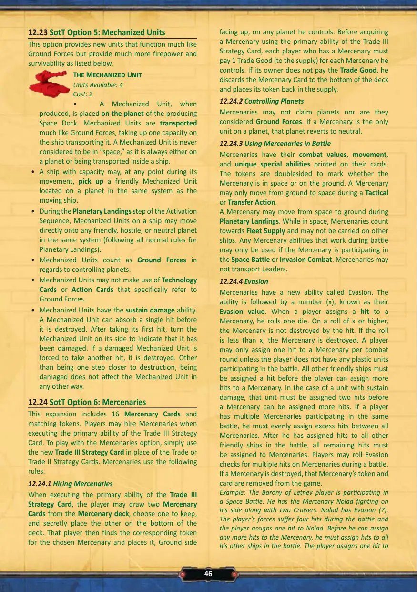
<figcaption>原版规则书 · 第 46 页（点击图片放大）</figcaption>
</figure>

<details class="mt-fold">
<summary>📝 第 46 页 AI 机翻对照（点击展开）</summary>
<div class="mt-body"><p>12.23 SotT 选项 5：机械化部队</p>

<p>此选项提供新的单位，其功能与地面部队类似，但提供更强的火力和生存能力，如下所列。</p>

<p>机械化部队</p>

<p>可用单位：4</p>

<p>费用：2</p>

<p>• 机械化部队在被生产时，放置在产生它的太空船坞所在的行星上。机械化部队的运输方式与地面部队类似，占用运输它的飞船的一个容量点。机械化部队从不被视为处于"太空"中，因为它总是在行星上或被运输在飞船内部。</p>

<p>• 在其移动过程中的任何时间，有容量的飞船可以拾取位于与移动飞船同一系统中的行星上的友好机械化部队。</p>

<p>• 在激活序列的行星登陆步骤中，飞船上的机械化部队可以直接移动到同一系统中的任何友好、敌对或中立行星上（遵循所有行星登陆的正常规则）。</p>

<p>• 在控制行星方面，机械化部队被视为地面部队。</p>

<p>• 机械化部队不能使用明确提及地面部队的技术卡或行动卡。</p>

<p>• 机械化部队具有承受伤害的能力。机械化部队在被摧毁前可以吸收一次伤害。在承受第一次伤害后，将机械化部队侧放以表示其已受损。如果受损的机械化部队被迫承受另一次伤害，它将被摧毁。除了更接近被摧毁外，受损状态不会以任何其他方式影响机械化部队。</p>

<p>12.24 SotT 选项 6：雇佣兵</p>

<p>此扩展包含16张雇佣兵卡牌和对应的指示物。玩家在执行贸易III战略卡的主要能力时可以雇佣雇佣兵。要使用雇佣兵选项，只需用新的贸易III战略卡替换贸易或贸易II战略卡。雇佣兵使用以下规则。</p>

<p>12.24.1 雇佣雇佣兵</p>

<p>当执行贸易III战略卡的主要能力时，玩家可以从雇佣兵牌库中抽取两张雇佣兵卡，选择一张保留，并将另一张秘密放置到牌库底部。然后该玩家找到所选雇佣兵对应的指示物，并将其正面朝上放置在他控制的任何行星上。在使用贸易III战略卡的主要能力获取雇佣兵之前，每位拥有雇佣兵的玩家必须为他控制的每名雇佣兵支付1个贸易商品（放入供应区）。如果所有者不支付贸易商品，他将雇佣兵卡牌弃置到牌库底部，并将其指示物放回供应区。</p>

<p>12.24.2 控制行星</p>

<p>雇佣兵不能宣称行星，也不被视为地面部队。如果雇佣兵是行星上的唯一单位，该行星将恢复中立状态。</p>

<p>12.24.3 在战斗中使用雇佣兵</p>

<p>雇佣兵的战斗数值、移动能力</p>

<p>和独特的特殊能力都印在他们的卡牌上。</p>

<p>指示物是双面的，用于标记雇佣兵</p>

<p>是在太空还是在地面上。雇佣兵</p>

<p>只能在战术或转移行动期间</p>

<p>从地面移动到太空。</p>

<p>雇佣兵可以在行星登陆期间</p>

<p>从太空移动到地面。在太空中时，雇佣兵计入舰队补给</p>

<p>且不能被其他飞船运载。任何在战斗中</p>

<p>有效的雇佣兵能力只有在雇佣兵</p>

<p>参与太空战斗或入侵战斗时才能使用。雇佣兵</p>

<p>不能运输领袖。</p>

<p>12.24.4 闪避</p>

<p>雇佣兵有一种新能力称为闪避。该能力</p>

<p>后跟一个数字(x)，称为他们的闪避值。当玩家</p>

<p>将一次命中分配给雇佣兵时，他掷一个骰子。</p>

<p>如果掷出x或更高，雇佣兵</p>

<p>不会被这次命中摧毁。如果掷出</p>

<p>小于x，雇佣兵被摧毁。玩家</p>

<p>每战斗回合只能向一名雇佣兵分配一次命中，</p>

<p>除非玩家在战斗中没有参与战斗的塑料单位。</p>

<p>在玩家可以向雇佣兵分配更多命中之前，</p>

<p>必须先将所有其他友方飞船分配一次命中。对于</p>

<p>具有承受伤害能力的单位，该单位必须被分配两次命中，</p>

<p>然后才能向雇佣兵分配更多命中。如果玩家</p>

<p>有多名雇佣兵参与同一场战斗，他必须</p>

<p>在所有雇佣兵之间平均分配超额命中。在他将</p>

<p>战斗中所有其他友方飞船分配命中后，</p>

<p>所有剩余命中必须分配给雇佣兵。玩家可以在战斗中</p>

<p>对雇佣兵的多次命中进行闪避检定。如果一名雇佣兵</p>

<p>被摧毁，该雇佣兵的指示物和卡牌</p>

<p>会被移出游戏。</p>

<p>示例：莱特涅夫男爵国玩家参与了一场太空战斗。</p>

<p>他有雇佣兵诺拉德与他并肩作战，还有两艘巡洋舰。</p>

<p>诺拉德具有闪避(7)。玩家的部队在战斗中遭受了四次命中，</p>

<p>玩家将一次命中分配给诺拉德。在他能向雇佣兵</p>

<p>分配更多命中之前，他必须将命中分配给他在战斗中的</p>

<p>所有其他飞船。玩家将一次命中分配给</p></div>
</details>

<figure>
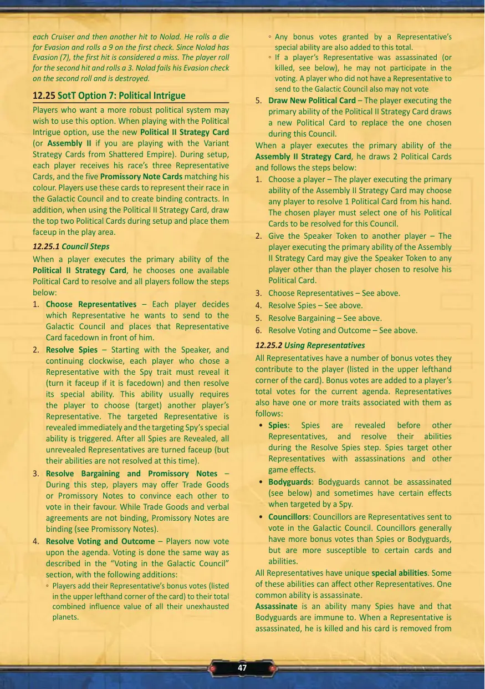
<figcaption>原版规则书 · 第 47 页（点击图片放大）</figcaption>
</figure>

<details class="mt-fold">
<summary>📝 第 47 页 AI 机翻对照（点击展开）</summary>
<div class="mt-body"><p>每艘巡洋舰然后对诺拉德(Nolad)造成一次打击。他进行一次闪避(Evasion)骰子检定，第一次检定掷出9。由于诺拉德拥有闪避(7)，第一次打击被视为未命中。玩家为第二次打击进行检定，掷出3。诺拉德在第二次检定中闪避失败并被摧毁。</p>

<p>12.25 SotT 选项7：政治阴谋</p>

<p>想要更强大政治系统的玩家可能希望使用此选项。在使用政治阴谋选项时，使用新的政治II策略卡(如果你正在使用破碎帝国(Shattered Empire)的变体策略卡，则使用议会II)。在设置阶段，每位玩家获得其种族的三张代表卡，以及与其颜色匹配的五张期票卡。玩家使用这些卡牌在银河议会中代表其种族，并创建具有约束力的合同。此外，在使用政治II策略卡时，在设置阶段抽取顶部的两张政治卡，并将其正面朝上放置在游戏区域。</p>

<p>12.25.1 议会步骤</p>

<p>当玩家执行政治II策略卡的主要能力时，他选择一张可用的政治卡进行结算，所有玩家遵循以下步骤：</p>

<ol>
  <li>选择代表 - 每位玩家决定要派往银河议会的代表，并将该代表卡正面朝下放在自己面前。</li>
  <li>解决间谍 - 从议长(Speaker)开始，顺时针进行，每位选择带有间谍(Spy)特质代表的玩家必须揭示它(如果是正面朝下的则翻转为正面朝上)，然后解决其特殊能力。此能力通常要求玩家选择(锁定)另一位玩家的代表。被锁定的代表立即被揭示，且锁定间谍的特殊能力被触发。所有间谍被揭示后，所有未揭示的代表翻转为正面朝上(但此时不解决其能力)。</li>
  <li>解决讨价还价和期票 - 在此步骤中，玩家可以提供贸易商品或期票来说服对方为自己投票。虽然贸易商品和口头协议不具有约束力，但期票具有约束力(参见期票)。</li>
  <li>解决投票和结果 - 玩家现在就议程进行投票。投票方式与"银河议会投票"部分所述相同，但有以下补充：</li>
</ol>

<p>◦◦玩家将其代表的额外投票(列在卡牌左上角)添加到其所有未耗尽行星的总影响力值中。</p>

<p>◦◦任何由代表特殊能力提供的额外投票也添加到此总数中。</p>

<p>◦◦如果玩家的代表被暗杀(或杀死，见下文)，他不得参与投票。没有代表的玩家</p>

<p>送往银河议会也可能无法投票</p>

<ol>
  <li>摸取新的政治卡牌 - 执行政治II策略卡牌主要能力的玩家摸取一张新的政治卡牌，以替换在本议会期间选择的那张。</li>
</ol>

<p>当玩家执行集会II策略卡牌的主要能力时，他摸取2张政治卡牌并遵循以下步骤：</p>

<ol>
  <li>选择一名玩家 - 执行集会II策略卡牌主要能力的玩家可以选择任意一名玩家，从其手牌中解决1张政治卡牌。被选中的玩家必须选择其一张政治卡牌，用于本次议会的解决。</li>
  <li>将发言者指示物交给另一名玩家 - 执行集会II策略卡牌主要能力的玩家可以将发言者指示物交给除被选来解决其政治卡牌的玩家之外的任何玩家。</li>
  <li>选择代表 - 见上文。</li>
  <li>解决间谍 - 见上文。</li>
  <li>解决讨价还价 - 见上文。</li>
  <li>解决投票和结果 - 见上文。</li>
</ol>

<p>12.25.2 使用代表</p>

<p>所有代表都有为玩家贡献的额外投票数（列在卡牌左上角）。额外投票数会加入玩家当前议程的总票数中。代表还具有一个或多个相关联的特质，如下所示：</p>

<p>• 间谍：间谍在其他代表之前被揭示，并在解决间谍步骤中解决其能力。间谍通过暗杀和其他游戏效果针对其他代表。</p>

<p>• 保镖：保镖不能被暗杀（见下文），有时在被间谍针对时会有特定效果。</p>

<p>• 议员：议员是被派往银河议会投票的代表。议员通常比间谍或保镖有更多额外投票数，但更容易受到某些卡牌和能力的影响。</p>

<p>所有代表都有独特的特殊能力。其中一些能力可以影响其他代表。一种常见的能力是暗杀。</p>

<p>暗杀是许多间谍拥有的能力，而保镖对此免疫。当一名代表被暗杀时，他会被杀死，其卡牌从游戏中移除。</p></div>
</details>

<figure>
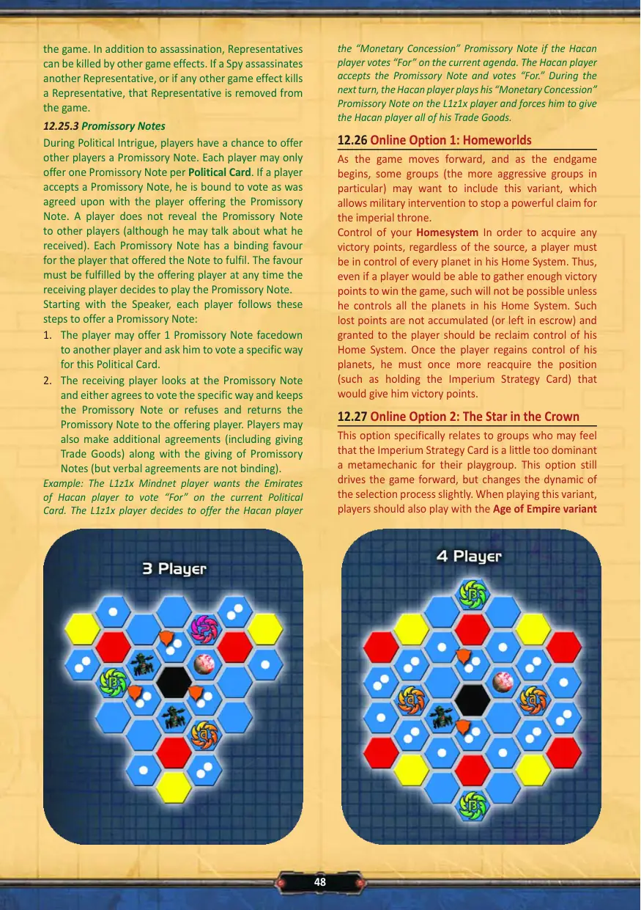
<figcaption>原版规则书 · 第 48 页（点击图片放大）</figcaption>
</figure>

<details class="mt-fold">
<summary>📝 第 48 页 AI 机翻对照（点击展开）</summary>
<div class="mt-body"><p>游戏。除了暗杀，代表也可以被其他游戏效果杀死。如果间谍暗杀了另一位代表，或者任何其他游戏效果杀死了一位代表，该代表将被移出游戏。</p>

<p>12.25.3 本票</p>

<p>在政治阴谋阶段，玩家有机会向其他玩家提供本票。每位玩家每张政治卡只能提供一张本票。如果玩家接受了一张本票，他必须按照与提供本票的玩家约定方式进行投票。玩家不向其他玩家展示本票（尽管他可以谈论自己收到了什么）。每张本票都有对提供本票的玩家有约束力的 favors。当接收玩家决定使用本票时，提供本票的玩家必须随时履行该 favors。从议长开始，每位玩家按照以下步骤提供本票：</p>

<ol>
  <li>玩家可以将一张本牌面朝下提供给另一位玩家，并要求他在这张政治卡上以特定方式投票。</li>
</ol>

<h3>2. 接收玩家查看本票，并同意以特定方式投票并保留本票，或者拒绝并将本票归还给提供玩家。玩家在提供本票时也可以达成额外协议（包括给予贸易品），但口头协议不具有约束力。</h3>

<p>示例：L1z1x Mindnet玩家希望Emirates of Hacan玩家对当前政治卡投票"支持"。L1z1x玩家决定如果Hacan玩家对当前议程投票"支持"，就向Hacan玩家提供"货币让步"本票。Hacan玩家接受了本票并投票"支持"。在下一回合，Hacan玩家对L1z1x玩家使用他的"货币让步"本票，迫使他给予Hacan玩家他所有的贸易品。</p>

<p>12.26 在线选项1：母星</p>

<p>随着游戏进行和终局阶段开始，一些群体（特别是更具侵略性的群体）可能想要包含这个变体，它允许军事干预来阻止对皇位的强势争夺。</p>

<p>控制你的母星系统 为了获得任何胜利点，无论来源如何，玩家必须控制其母星系统中的所有行星。因此，即使玩家能够收集足够的胜利点来赢得游戏，除非他控制了母星系统中的所有行星，否则这是不可能的。这些失去的分数不会累积（或被托管），如果玩家重新控制了他的母星系统，这些分数也不会给予他。一旦玩家重新控制了他的行星，他必须再次获得该位置。</p>

<p>（例如持有帝国策略卡）会给予他胜利点。</p>

<p>12.27 在线选项2：皇冠之星</p>

<p>此选项特别针对那些可能认为帝国策略卡对其游戏群体来说过于主导的元机制。此选项仍然推动游戏前进，但略微改变了选择过程的动态。玩此变体时，玩家也应与帝国时代变体一起游戏</p></div>
</details>

<figure>
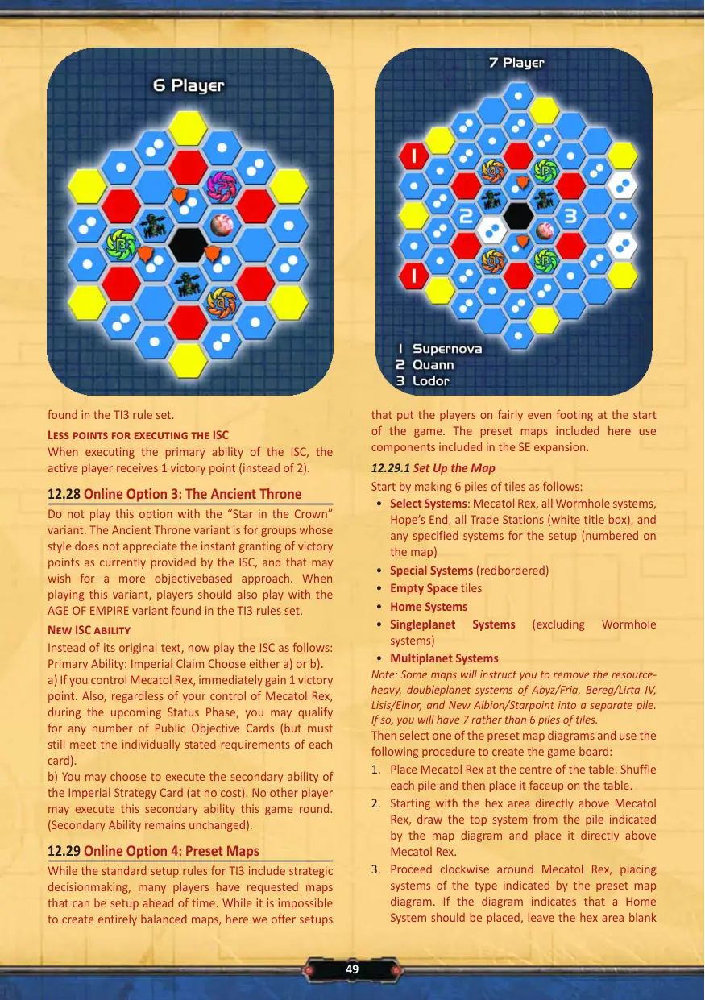
<figcaption>原版规则书 · 第 49 页（点击图片放大）</figcaption>
</figure>

<details class="mt-fold">
<summary>📝 第 49 页 AI 机翻对照（点击展开）</summary>
<div class="mt-body"><p>可在TI3规则集中找到。</p>

<p>执行ISC获得的分数减少</p>

<p>当执行ISC的主要能力时，当前玩家获得1个胜利点（而不是2个）。</p>

<p>12.28 在线选项3：古代王座</p>

<p>不要与"王冠之星"变体规则一起玩此选项。古代王座变体规则适合那些不欣赏ISC目前提供的即时胜利点授予，并且可能希望采用更基于目标方式的玩家群体。玩此变体时，玩家也应使用TI3规则集中找到的帝国时代变体规则。</p>

<p>新的ISC能力</p>

<p>代替其原文，现在按如下方式玩ISC：</p>

<p>主要能力：帝国宣称 选择a)或b)。</p>

<p>a) 如果你控制梅卡托尔雷克斯（Mecatol Rex），立即获得1个胜利点。此外，无论你是否控制梅卡托尔雷克斯，在即将到来的状态阶段，你可以获得任意数量的公共目标卡（但仍必须满足每张卡单独列出的要求）。</p>

<p>b) 你可以选择执行帝国策略卡的次要能力（无需花费）。没有其他玩家可以在本游戏轮执行此次要能力。（次要能力保持不变）。</p>

<p>12.29 在线选项4：预设地图</p>

<p>虽然TI3的标准设置规则包括战略决策，但许多玩家要求可以提前设置的地图。虽然不可能创建完全平衡的地图，但在这里我们提供了一些设置，使玩家在游戏开始时处于相对公平的位置。此处包含的预设地图使用了SE扩展中的组件。</p>

<p>12.29.1 设置地图</p>

<p>首先按如下方式制作6堆板块：</p>

<p>• 选择系统：梅卡托尔雷克斯（Mecatol Rex）、所有虫洞系统、希望之端（Hope's End）、所有贸易站（白色标题框）以及设置中指定的任何系统（地图上已编号）</p>

<p>• 特殊系统（红色边框）</p>

<p>• 空间板块</p>

<p>• 家园系统</p>

<p>• 单行星系统</p>

<p>（不包括虫洞系统）</p>

<p>• 多行星系统</p>

<p>注意：某些地图会指示你将资源丰富、双行星系统Abyz/Fria、Bereg/Lirta IV、Lisis/Elnor和New Albion/Starpoint放入单独的一堆。如果是这样，你将有7堆板块而不是6堆。</p>

<p>然后选择一个预设地图图示，并使用以下程序创建游戏版图：</p>

<ol>
  <li>将梅卡托尔雷克斯放在桌子中央。洗混每堆板块，然后将它们面朝上放在桌子上。</li>
</ol>

<h3>2. 从梅卡托尔雷克斯正上方六边形区域开始，从地图图示指示的堆中顶部的系统牌，并将其直接放在梅卡托尔雷克斯正上方。</h3>

<h3>3. 沿梅卡托尔雷克斯顺时针方向放置，放置预设地图图示指示类型的系统。如果图示指示应放置家园系统，则将该六边形区域留空。</h3></div>
</details>

<figure>
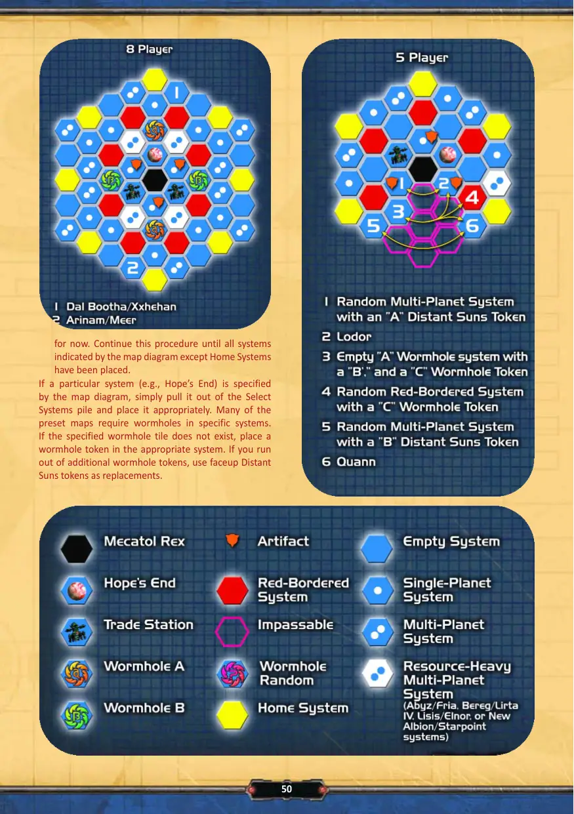
<figcaption>原版规则书 · 第 50 页（点击图片放大）</figcaption>
</figure>

<details class="mt-fold">
<summary>📝 第 50 页 AI 机翻对照（点击展开）</summary>
<div class="mt-body"><p>目前。继续此程序，直到地图图示中除母星系统外的所有系统都已放置完毕。</p>

<p>如果地图图示指定了特定系统（例如：希望之末），只需从选定的系统堆中取出它并适当放置。许多预设地图需要在特定系统中放置虫洞。如果指定的虫洞板块不存在，请在相应系统中放置一个虫洞指示物。如果你用完了额外的虫洞指示物，使用正面朝外的遥远太阳指示物作为替代。</p></div>
</details>

<figure>
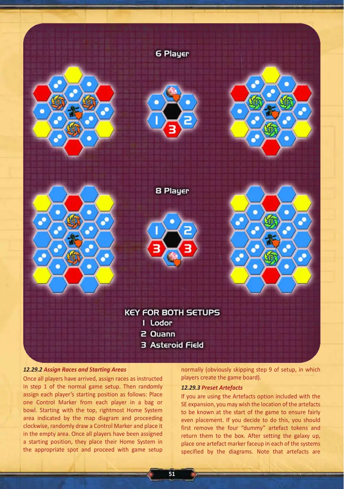
<figcaption>原版规则书 · 第 51 页（点击图片放大）</figcaption>
</figure>

<details class="mt-fold">
<summary>📝 第 51 页 AI 机翻对照（点击展开）</summary>
<div class="mt-body"><p>12.29.2 分配种族与起始区域</p>

<p>一旦所有玩家都已就位，按照正常游戏设置的步骤1说明分配种族。然后按如下方式随机分配每个玩家的起始位置：将每位玩家的一个控制标记放入袋子或碗中。从地图图示指示的顶部最右侧的母星系统区域开始，顺时针进行，随机抽取一个控制标记并将其放入空区域。一旦所有玩家都被分配了起始位置，他们将母星系统放置在相应位置，然后继续进行正常的游戏设置（显然跳过设置的第9步，即玩家创建游戏版图）。</p>

<p>12.29.3 预设神器</p>

<p>如果你使用SE扩展中包含的神器选项，你可能希望神器的位置在游戏开始时就已知，以确保放置相对均衡。如果你决定这样做，你应该首先移除四个"虚拟"神器指示物并将它们放回盒中。设置好星系后，在每个图示指定的系统中正面朝上放置一个神器标记。请注意，神器是</p></div>
</details>

<figure>

<figcaption>原版规则书 · 第 52 页（点击图片放大）</figcaption>
</figure>

<details class="mt-fold">
<summary>📝 第 52 页 AI 机翻对照（点击展开）</summary>
<div class="mt-body"><p>总是放置在指定系统中的行星上。如果系统包含两个行星，则将神器放置在资源最少的行星上（如果资源价值相同，则将神器指示物放置在影响力值较低的行星上。如果这也相同，则随机打破平局。）如果您没有使用SE扩展中包含的神器选项，请忽略神器符号。</p>

<p>12.30 在线选项5：特殊5人地图</p>

<p>由于六边形版图的特性，在5人游戏中很难使所有位置平等。这张地图利用了几个虫洞，为5个玩家提供相对平等的起始位置。</p>

<p>与7人和8人地图一样，将Abyz/Fria、Bereg/Lirta IV、Lisis/Elnor和New Albion/Starpoint等资源丰富、双行星系统移到单独的一堆中，这样在设置地图时您将有7堆板块而不是6堆。</p>

<p>此外，将地图下列出的6个系统放入"选择系统"堆中。对于不可通过的格，可以保持这些格为空，或者使用板块的背面。</p>

<p>图中的黄色箭头表示通过虫洞的相邻关系。</p>

<p>12.30.1 特殊规则</p>

<p>使用以下特殊规则进行此设置：</p>

<p>• 虫洞不能被关闭或变得不可用。如果抽到任何提及虫洞的卡牌，立即将其弃掉并抽一张新牌替换。</p>

<p>• 虫洞枢纽与此设置不兼容。</p>

<p>• 仅对此预设地图，PDS可以通过虫洞开火。</p>

<p>• 如果在使用遥远太阳选项时，设置银河系时未使用的任何虫洞遥远太阳指示物，应从游戏中弃掉且不使用。</p>

<p>12.31 在线选项6：多银河系地图</p>

<p>这两个特殊预设地图可用于6人或8人游戏。这些地图被分为两个相同的大银河系，中间是一个包含Mecatol Rex（梅卡托尔·雷克斯）的较小银河系。如果需要，这些地图可以设置在多个桌子上。对于这两张地图，将Lodor、Quann和两个小行星域放入"选择系统"堆中。多银河系游戏的功能与标准6人或8人游戏完全相同，尽管银河系是分开的，但作为一个大游戏进行。我们建议玩家在使用这些地图时使用虫洞枢纽选项，因为它将为银河系之间提供额外的桥梁。</p>

<h3>13. 策略卡摘要</h3>

<p>13.1 第一种策略（主动权/领导力）</p>

<p>13.1.1 基础游戏：主动权策略</p>

<p>与其他策略卡不同，主动权策略卡不给予其所有者执行战略行动的选项。然而，它给予其所有者发言者指示物（在下一个策略阶段期间给予策略卡的首选权），并允许其所有者执行其他策略卡的次要能力。</p>

<h2>13.1.2 破碎帝国：领导力策略</h2>

<p>领导力策略的主要能力提供了两个重要的战略优势。首先，它允许玩家在轮次中先行，这可能至关重要。其次，领导力策略卡为活跃玩家提供3个指挥指示物，这些指示物始终至关重要。此策略卡还允许活跃玩家使用卡牌的次要能力（通常是被禁止的）。这有可能让玩家获得6个指挥指示物（3个免费，并且他可以再购买最多3个）。</p>

<p>领导力策略的次要能力是其他玩家积累更多指挥指示物最常见的方式。它比后勤策略更便宜，但玩家在可以购买的指示物数量上受到限制。</p>

<p>领导力策略的重要特殊规则：与大多数其他策略卡不同，玩家不需要从策略分配池中花费一个指挥指示物来执行此次要能力。</p>

<h2>13.2 第二策略（外交I/II）</h2>

<h3>13.2.1 基础游戏：外交策略</h3>

<p>选择和执行外交策略的主要能力可以为即将被激进邻居压倒的玩家提供关键的喘息机会。外交策略也可以被一个不择手段的玩家使用，他首先征服另一个玩家的领土，然后（作为后续行动）将该玩家作为主要能力的目标。通过禁止激活彼此的系统，玩家在轮次剩余时间内实际上被禁止互相攻击。当然，玩家可以寻求其他方式伤害对手，例如入侵不包含单位的系统、行动卡等。外交策略卡的次要能力允许玩家刷新在阶段早期已经耗尽的两个行星卡。这意味着玩家可能能够使用行星卡的资源或影响力两次，甚至使用刚刚入侵的行星的资源。</p></div>
</details>

<figure>

<figcaption>原版规则书 · 第 53 页（点击图片放大）</figcaption>
</figure>

<details class="mt-fold">
<summary>📝 第 53 页 AI 机翻对照（点击展开）</summary>
<div class="mt-body"><p>这个阶段（因为所有行星卡牌在被玩家首次认领时就已经耗尽）。</p>

<p>13.2.2 破碎帝国：外交II策略</p>

<p>主要能力选项"a"允许当前玩家选择一个系统，并将每位其他玩家的增援部队中的一个指挥指示物放置在该系统中。这将使玩家无法在自己的回合期间激活该系统。如果任何玩家在其增援部队中没有指挥指示物，该玩家必须从其种族卡片的任何区域选择一个指挥指示物并将其放置在该系统中。选项"b"允许当前玩家立即使用次要能力，无需支付任何影响力或指挥指示物。无论当前玩家选择哪个选项，其他玩家随后可以使用此卡的次要能力。此能力允许玩家花费一个指挥指示物和3点影响力，以认领一个他们控制的系统相邻的空行星（一个没有任何地面部队、领导者、行星防御系统或太空船坞的行星），即使另一玩家控制目标行星也是如此。一旦玩家执行此能力，他或她立即在该行星上放置一个控制标记并认领相应的行星卡（玩家以耗尽状态获得该卡）。</p>

<p>重要：玩家不得吞并另一玩家在本回合吞并的行星，且任何玩家不得吞并梅卡托尔雷克斯（Mecatol Rex）。</p>

<p>Xxcha与外交II</p>

<p>当Xxcha玩家使用其特殊能力执行外交II卡牌的主要能力时，他必须从其策略分配区域花费一个指挥指示物。（如果他选择主要能力的选项"b"，唯一净收益是他无需支付影响力。）</p>

<p>13.3 第三策略（政治I/II，议会I/II）</p>

<p>13.3.1 基础游戏：政治策略</p>

<p>政治策略卡牌的主要能力为其所有者提供慷慨的行动牌分配、一个额外的指挥指示物，以及通过决定接下来哪三张政治牌将由执行政治策略卡牌主要能力的玩家抽取来操纵政治牌堆的能力。有关如何解决当前玩家抽取的政治牌，请参见政治牌部分。政治策略的次要能力简单允许玩家额外抽取一张行动牌。</p>

<p>13.3.2 破碎帝国：议会策略</p>

<p>此卡牌的主要能力提供1张政治牌和2张行动牌。更重要的是，它允许玩家要么控制将被投票的议程，要么获得有价值的发言者指示物。当前玩家必须决定是a）立即成为发言者，然后选择另一玩家从其手牌中打出一张政治牌，或是b）选择除当前玩家之外的任何玩家来</p>

<p>自己成为发言人，然后从自己的手牌中打出一张政治卡牌。更多信息请参见下一节。</p>

<p>重要：当玩家选择选项"b"时，他不能选择自己或现任发言人来获得发言人指示物。如果玩家已经是发言人，则不能选择选项"a"。</p>

<p>议会策略卡牌的次要能力允许每位其他玩家花费一个指挥指示物，以刷新任意数量的行星卡牌（甚至包括母星系统），只要这些行星的影响力值和资源值的总和不超过6点。</p>

<p>示例：Yssaril玩家正在执行议会策略的次要能力。他决定刷新Arretze（2资源，0影响力）、Dal Bootha（0资源，2影响力）和Gral（1资源，1影响力）的行星卡牌。</p>

<p>Xxcha与议会：Xxcha玩家可以使用他的特殊能力（从他的策略分配区域花费一个指挥指示物）来取消被选玩家读出的政治卡牌。被选玩家然后从政治牌库顶摸一张牌，读出并解决它。</p>

<p>政治卡牌与议会策略卡牌</p>

<p>当使用新的议会策略卡牌时，政治卡牌的运作方式与原游戏略有不同。打出政治卡牌每位游戏开始时手中有2张政治卡牌。这些卡牌仅在议会策略卡牌指定打出时才能打出。政治卡牌按以下方式运作。</p>

<p>根据选择的议会卡牌选项，一位玩家必须从自己的手牌中选择一张政治卡牌打出。如果玩家手牌中没有政治卡牌，他则从政治牌库顶摸一张牌并打出。</p>

<p>打出政治卡牌的玩家将其大声读出，然后按正常方式解决议程。</p>

<p>13.3.3 王座碎片：政治II策略</p>

<p>政治II策略卡牌仅在采用SotT选项7：政治阴谋时使用。使用此策略卡牌时，在设置阶段揭示顶部的两张政治卡牌，并将它们面朝上放置在游戏区域。这些将是议会期间玩家可用的政治卡牌。主要能力允许玩家选择要解决的政治卡牌。玩家按照相关章节的议会步骤进行。议会后，玩家摸一张新的政治卡牌，并将其面朝上放置在本议会期间未被选中的那张卡牌旁边。此策略卡牌的次要能力给玩家一个机会</p></div>
</details>

<figure>

<figcaption>原版规则书 · 第 54 页（点击图片放大）</figcaption>
</figure>

<details class="mt-fold">
<summary>📝 第 54 页 AI 机翻对照（点击展开）</summary>
<div class="mt-body"><p>抽取行动卡牌。玩家可以花费1个指挥指示物和2点影响力来抽取两张行动卡牌。</p>

<p>每位玩家的政治卡牌手牌上限为5张。如果玩家手中有超过5张政治卡牌，他必须立即弃牌至5张。</p>

<p>将政治卡牌作为贸易品使用</p>

<p>玩家可以在任何时候，从手牌中弃掉一张政治卡牌，而不是花费一个贸易品。</p>

<p>13.3.4 王座碎片：议会II策略</p>

<p>当同时使用SotT选项7：政治阴谋和破碎帝国扩展中的替代策略卡牌时，使用议会II策略卡牌。</p>

<p>执行此策略卡牌主要能力的玩家抽取两张政治卡牌，并选择一名玩家（包括自己）来从其手牌中解决一张政治卡牌。然后玩家遵循相关部分中的议会步骤。然后，议会指示物给予任何未被选择从手牌中解决政治卡牌的玩家。此策略卡牌的次要能力允许玩家花费1个指挥指示物来抽取一张行动卡牌，并刷新其母星系统外的一个星球。</p>

<p>13.4 第四策略（后勤/生产）</p>

<p>13.4.1 基础游戏：后勤策略</p>

<p>由于指挥指示物是玩家管理其种族的关键组成部分，后勤策略卡牌是游戏中一个重要且不可或缺的部分。其主要能力非常强大，因为它允许当前玩家直接从其补充牌堆中获得4个指挥指示物，并将其添加到其种族版上。后勤策略卡牌的次要能力是其他玩家获得额外指挥指示物的主要途径。在执行次要能力时，玩家必须通过耗尽其星球卡牌来花费影响力。玩家每花费3点影响力可以获得1个指挥指示物。</p>

<p>后勤策略的重要特殊规则：与大多数其他策略卡牌不同，玩家不需要从其指挥池中花费指挥指示物即可执行此次要能力。</p>

<p>13.4.2 破碎帝国：生产策略</p>

<p>生产策略卡牌的主要能力允许当前玩家在一个或多个其太空船坞中生产单位，而无需激活该系统。此外，玩家获得两个额外的资源用于建造。当前玩家甚至可以在已激活系统中的太空船坞生产单位。这在进攻和防御情况下都非常有用。例如，玩家可以在同一轮建造舰船并移动它们。次要能力允许其他玩家在其一个（已激活或未激活的）太空船坞中建造单位，但生产能力限制为3个单位。</p>

<p>重要提示：无论执行主要能力还是次要能力</p>

<p>13.5 第五策略（贸易I/II/III）</p>

<p>13.5.1 基础游戏：贸易策略</p>

<p>贸易策略是玩家之间发起贸易协议的主要方式。通过选择主要能力的"a"选项，当前玩家将立即获得3个免费贸易品；他还能为自己的贸易协议获得贸易品，然后允许所有玩家（包括他自己）相互之间开启新的贸易协议。当两名玩家同意开启新的贸易协议后，当前玩家必须批准该协议，否则协议无法达成。如果他愿意，这使当前玩家有可能收取一些可观的贿赂。注意，当前玩家对已存在的贸易协议没有权力（除非执行"b"选项）。当前玩家可以选择"b"选项，而不是收集财富和促进新的贸易协议。如果他这样做，所有现有的贸易协议立即被终止，所有贸易卡牌返还给其所有者（包括哈坎（Hacan）持有的贸易协议）。次要能力简单允许玩家根据相关描述为其活跃的贸易协议收集贸易品。</p>

<p>注意：玩家不能在同一行动期间为刚刚形成的贸易协议收集贸易品。</p>

<p>13.5.2 破碎帝国：贸易II策略</p>

<p>新的贸易策略卡牌在多个方面与原版不同。首先，当前玩家可以选择立即获得3个贸易品或取消最多两个贸易协议。如果他决定取消贸易协议，每个被选中的协议将返还给其所有者，以换取另一方的贸易协议。</p>

<p>注意，使用此能力不能终止哈坎的贸易协议。</p>

<p>示例：当前玩家决定终止两个贸易协议，并选择了L1Z1X的两个贸易协议。L1Z1X玩家将其拥有的两个贸易协议返还给原始所有者，并取回自己的贸易协议。如果L1Z1X玩家的一个贸易协议是与哈坎的，则该协议不能被终止。</p>

<p>其次，每个玩家从其活跃的贸易协议中获得贸易品，无需花费指挥计数器。然而，虽然当前玩家从其贸易协议中获得所有贸易品，但其他玩家必须从贸易品总数中减去1。</p></div>
</details>

<figure>

<figcaption>原版规则书 · 第 55 页（点击图片放大）</figcaption>
</figure>

<details class="mt-fold">
<summary>📝 第 55 页 AI 机翻对照（点击展开）</summary>
<div class="mt-body"><p>双方贸易协议上标明的商品。</p>

<p>示例：一名玩家拥有价值3个贸易商品和2个贸易商品的贸易协议。当使用贸易II且不是主动玩家时，该玩家将只获得4个贸易商品。</p>

<p>最后，可以开启新的贸易协议。这功能与原始贸易策略卡完全相同；主动玩家必须批准每项新的贸易协议，否则无法达成。贸易II策略卡没有次要能力。</p>

<p>13.5.3 王座碎片：贸易III策略</p>

<p>此策略卡仅在玩王座碎片选项6：雇佣兵时使用。该卡牌的主要能力允许玩家开启新的贸易谈判并收取所有贸易协议，即使这些协议刚刚形成。激活主要能力的玩家必须批准所有新的贸易协议。贸易谈判后，任何在场上拥有雇佣兵的玩家必须支付1个贸易商品以保持该雇佣兵在场。任何不为其雇佣兵支付的玩家必须将该雇佣兵的指示物从版图上移除，并将他的雇佣兵牌放到雇佣兵牌库底部。一旦所有雇佣兵都已支付（或返回牌库），执行此卡牌主要能力的玩家可以从雇佣兵牌库顶抽取两张牌。他选择一名雇佣兵招募，并将另一张牌放到牌库底部。该卡牌的次要能力允许玩家花费1个指挥计数器来打破两名玩家之间的贸易协议。如果玩家打破贸易协议，该玩家获得1个贸易商品。</p>

<p>哈坎酋长国对此能力免疫。</p>

<p>13.6 第六策略（战争I/II）</p>

<p>13.6.1 基础游戏：战争策略</p>

<p>战争策略卡的主要能力极其灵活且强大，因为它为主动玩家提供了多种战术选择，例如激活一个星系两次，或移动一支舰队两次等。在适当的情况下，次要能力可能非常有用。它允许玩家将最多两艘巡洋舰/驱逐舰单位（来自相同或不同星系）移动到相邻的空星系（参见空星系的定义）。这些单位即使在其当前星系被激活的情况下也可以移动（这通常禁止任何移动）。尽管目标星系变得激活，但这些激活所使用的指挥计数器来自你的增援，而非你的种族版。这些舰船被允许移动到已经激活的空星系，在这种情况下，星系中不放置指挥计数器。请注意，执行次要能力的玩家可以将两艘驱逐舰/巡洋舰单位移动到两个不同的星系，或移动到同一个星系。舰船必须移动到相邻的星系</p>

<p>（且不能更远），无论单位的移动速率如何。由于禁止通过包含一艘或多艘敌方舰船（战斗机除外）的系统移动，因此单独巡逻的驱逐舰或巡洋舰可以有效充当快速敌方舰队深入打击的屏障。</p>

<p>13.6.2 破碎帝国：战争II战略</p>

<p>新战争战略卡的主要能力允许当前玩家将其一个系统置于高度戒备状态，用高度戒备指示物表示。位于高度戒备系统中的玩家所有舰船在太空战斗中获得+1移动和+1投掷加成。此加成不适用于战斗前能力，也不影响入侵战斗中的地面部队。当前玩家可以选择将高度戒备指示物与任何离开系统的舰船一起移动，或者将指示物留在原处。该指示物在状态阶段开始时被移除。战争II次要能力允许其他玩家将其两个未激活系统中的舰船移动到相邻的或他们控制的系统中。这不激活目标系统，这意味着只要目标系统尚未被激活，移动的舰船将能够在该轮晚些时候移动（此外，由于目标系统未被激活，此移动不会触发PDS炮火）。</p>

<p>重要：地面部队只能在战术或转移行动期间拾取或降落。使用次要能力时，玩家不能拾取或降落地面部队。</p>

<p>13.7 第七战略（科技I/II）</p>

<p>13.7.1 基础游戏：科技战略</p>

<p>科技战略是玩家获取其科技牌库中令人兴奋且有益的科技牌的主要途径。科技战略的主要能力让当前玩家免费获得一次他选择的技术提升。当前玩家只需从其科技牌库中取出一张科技牌，并将其正面朝上放置在其游戏区域。他现在可以享受这项科技提升带来的好处。</p>

<p>重要：只有当玩家已经获得了其前置技术（如每张科技牌上所述）时，才能获得科技牌。</p>

<p>次要能力允许玩家从其科技牌库购买技术提升。玩家必须花费8个资源才能从其科技牌库中取出一张科技牌并将其正面朝上放置在其游戏区域（前提是拥有任何前置技术）。</p></div>
</details>

<figure>

<figcaption>原版规则书 · 第 56 页（点击图片放大）</figcaption>
</figure>

<details class="mt-fold">
<summary>📝 第 56 页 AI 机翻对照（点击展开）</summary>
<div class="mt-body"><p>13.7.2 破碎帝国 科技II策略</p>

<p>科技II策略允许玩家比原始科技策略更快、更便宜地获得科技。主要能力不仅提供一项免费科技，还让当前玩家可以选择以8个资源的价格购买第二项科技。</p>

<p>重要提示：请记住，玩家只有在拥有必要的前置科技时才能获得科技卡。如果玩家使用主要能力购买两项科技，第一项可以用作第二项的前置条件。</p>

<p>科技II策略的次要能力允许其他玩家以6个资源的价格购买一项科技进展（与原始科技卡的8个资源成本相对）。</p>

<p>乔尔-纳尔（Jol-Nar）与科技II策略卡</p>

<p>乔尔-纳尔玩家在执行科技II次要能力时可以使用他的特殊能力，以获得一项免费科技。然后他可以以6个资源的价格购买第二项科技，以8个资源的价格购买第三项科技。</p>

<p>13.8 第八策略（帝国I/II，官僚）</p>

<p>13.8.1 基础游戏：帝国策略</p>

<p>帝国策略卡的主要能力向公共区域展示一张公共目标卡，然后为当前玩家提供2个胜利点。如果当前玩家抽到游戏结束公共目标卡，游戏将立即结束，甚至在当前玩家获得他的两个胜利点之前。次要能力允许玩家在已经激活的系统中生产单位，或在未激活的系统中建造单位而不激活它。这是一项强大的能力，因为玩家有可能在系统中两次建造单位，或在未激活的系统中建造单位，允许这些新单位在同一游戏回合的 later 战术/转移行动期间移动。</p>

<p>13.8.2 基础游戏替代：帝国II策略</p>

<p>注意：要使用帝国II策略卡，您还必须使用"帝国时代"变体。</p>

<p>这张卡是原始帝国策略卡的可选替代卡，不能与官僚策略卡交换。帝国II策略卡的主要能力为当前玩家提供一个选择。选项"a"赋予当前玩家在下一个状态阶段完成多个目标的能力，如果当前玩家控制着梅卡托尔雷克斯（Mecatol Rex），则提供1个胜利点。这两项能力都让熟练玩家能够获得关键的额外分数。主要能力的选项"b"允许当前玩家立即执行次要能力，而无需支付任何指挥计数器。如果选择此选项，其他玩家本回合不能执行次要能力。</p>

<p>轮。"帝国II"策略卡的次要能力与原始帝国策略卡的次要能力相同：每位玩家可以花费1个指挥指示物来在他已经激活的系统中产生单位，或者在未激活的系统中产生单位而不激活该系统。</p>

<p>13.8.3 破碎帝国：官僚策略</p>

<p>重要：如果选择官僚策略时其上有任何奖励指示物，则立即揭示数量等于官僚策略卡上指示物数量的目标卡。</p>

<p>官僚策略的主要能力给予当前玩家一个指挥指示物，对将揭示哪个目标有一定控制权，然后在状态阶段之外完成一个公共目标的能力。为了完成一个目标，当前玩家必须满足该目标的要求。然后他将他的控制标记放在该目标上并获得胜利点。如果这让当前玩家获得足够的胜利点来赢得游戏，则游戏立即结束。（他可以完成任何面朝上的目标，不仅限于新揭示的目标。）使用官僚策略完成公共目标的玩家仍然可以在状态阶段完成另一个公共目标。玩家不能使用官僚策略来完成秘密目标。虽然这张策略卡不提供"免费"的胜利点，但它确实给予当前玩家一个额外目标资格的机会。由于帝国策略卡的额外胜利点未被授予，建议在使用官僚策略卡时将胜利点目标减少1点。</p>

<p>注意：如果揭示"帝国统治者"公共目标卡，则在帝国统治者卡被抽出后，在当前玩家完成目标之前，游戏立即结束。</p>

<p>次要能力允许其他玩家花费1个指挥指示物来抽取1张行动卡和1张政治卡。</p>

<h3>14.	勘误与澄清</h3>

<p>14.1 卡牌</p>

<p>14.1.1 行动卡："希望的灯塔"</p>

<p>这张卡应读作："使用：在任何涉及你的旗舰的太空战斗开始前立即。"</p>

<p>14.1.2 行动卡："直接命中"</p>

<p>应在卡牌上添加以下文本："使用：在你参与的太空战斗中船只受到伤害后立即。"</p></div>
</details>

<figure>

<figcaption>原版规则书 · 第 57 页（点击图片放大）</figcaption>
</figure>

<details class="mt-fold">
<summary>📝 第 57 页 AI 机翻对照（点击展开）</summary>
<div class="mt-body"><p>14.1.3 政治卡牌："古代文物"</p>

<p>应将"行星单位"的使用替换为"行星力量"一词。行星力量被定义为相关行星上地面部队单位的总数。这样，受影响行星上的地面部队将获得三次骰子的联合投掷，而旧措辞则表明每个地面部队单位将受到三次投掷攻击。行星防御系统和太空船坞不受这些投掷影响。此外，在此卡牌上，当玩家投出6-10的结果时，授予每位玩家的两张科技卡牌应先后获得，以便第一张科技可以是第二张科技的前提条件。如果使用"领袖"选项，则在1-5的结果上领袖被摧毁，并被包含在行星力量的定义中。</p>

<p>14.1.4 政治卡牌："开放贸易路线"</p>

<p>"反对"结果应读作："本回合，每位玩家必须将其收到的所有贸易品交给其左侧的玩家。"</p>

<p>14.1.5 政治卡牌："技术共享"</p>

<p>"技术共享"政治议程不应有"法律"关键词。因此，它在解决后被弃置。</p>

<p>14.1.6 科技卡牌："先进战机"</p>

<p>应在此卡牌上添加以下文本："超出系统战机容量的任何战机将计入你的舰队供应限制。"</p>

<p>示例1：如果你拥有先进战机技术，并且你有一个拥有1艘航母和7架战机的系统，该系统需要2或更高的舰队供应（航母支持正常的6架战机，但额外的战机计入供应限制）。</p>

<p>示例2：如果你拥有先进战机技术，并且你有一个拥有4个战机单位的孤立系统（即没有战机容量的系统），该系统需要4或更高的舰队供应（因为现在每个战机都算作一艘飞船）。</p>

<p>14.1.7 科技卡牌："微技术"</p>

<p>此卡牌应读作："当你从贸易协定中获得贸易品时，你现在为每个活跃的贸易协定额外获得1个贸易品。"</p>

<p>14.1.8 科技卡牌："变形制造"</p>

<p>应将"建造单位"的使用替换为"生产单位"。被变形制造摧毁的单位在同一游戏回合内不得被重新生产。</p>

<p>种族专属科技卡牌：生物回收器</p>

<p>此卡牌上的能力每游戏回合只能使用一次。</p>

<p>14.1.9 种族专属</p>

<p>科技卡牌：</p>

<p>量子数据中心</p>

<p>应将"状态阶段"的使用替换为"战略阶段"。</p>

<p>14.1.10 种族专属科技卡牌："继承系统"</p>

<p>应将"贸易战略卡"的使用替换为"科技战略卡"。</p>

<p>14.1.11 种族专属科技卡牌："本能训练"</p>

<p>应将"游戏回合"的使用替换为</p>

<h2>14.2 种族版</h2>

<h3>14.2.1 PDS 费用</h3>

<p>获取 PDS 单位的准确费用是 2（如规则书中所写，但在玩家版上错误陈述）。</p>

<h3>14.2.2 Xxcha 能力</h3>

<p>第一个 Xxcha 王国特殊能力的正确措辞是："在执行外交策略的次要能力时，你可以执行主要能力。"</p>

<h3>14.2.3 Arborec 种族版</h3>

<p>特殊能力应读作："你的地面部队有 1 点生产能力。你不能使用在同一激活期间移动过的地面部队来生产单位。"</p>

<h2>14.3 规则书</h2>

<h3>14.3.1 战斗骰</h3>

<p>"战斗骰"这一术语是包含性的。它涵盖了任何你掷骰并将结果与单位的战斗力进行比较以确定是否造成敌方伤亡的情况。这包括 PDS 火力和所有与单位战斗力进行比较的战斗前能力。</p>

<p>• Sardakk N'Orr 特殊能力文本应读作："你在战斗骰中获得 +1。"</p>

<p>• Jol-Nar 特殊能力文本应读作："你在战斗骰中获得 -1。"..."在'太空战斗'期间增加或修改结果的效果应被解释为在'太空战斗'期间。在'太空战斗'或'入侵战斗'期间发生的效果仅特别引用太空战斗序列和入侵战斗序列中的变量。因此，如果一个能力在太空战斗中给予你骰子 +1，这个加成仅应用于太空战斗序列的第 2 步（"掷战斗骰"），并且不影响任何其他掷骰，包括战斗前效果、PDS、轰炸等。</p></div>
</details>

<figure>

<figcaption>原版规则书 · 第 58 页（点击图片放大）</figcaption>
</figure>

<details class="mt-fold">
<summary>📝 第 58 页 AI 机翻对照（点击展开）</summary>
<div class="mt-body"><p>14.3.2 淘汰</p>

<p>不控制任何行星且版图上没有单位的玩家将被淘汰。他不能使用行动卡或选择策略卡。玩家被淘汰后，其他玩家继续正常游戏，策略卡数量等不做任何改变。当玩家被淘汰时，他所有的行动卡被弃置，他种族的所有贸易协定从游戏中移除。</p>

<p>14.3.3 控制星系</p>

<p>如果玩家控制星系中的所有行星并且在星系中至少有一艘（非战斗机）飞船，则该玩家控制该星系。</p>

<p>14.3.4 回合与游戏轮</p>

<p>种族专属技术"生产中心"、"外交官"和"空间导管网络"，以及阴兄弟会的"逆转"特殊能力，说明它们每回合可以使用一次。这应理解为每游戏轮使用一次。引用必须在本回合满足条件的目标卡应解读为"本游戏轮"。</p>

<h2>15.	常见问题解答</h2>

<p>15.1 行动卡</p>

<p>问：如果行动卡库用完了，是否将弃置的行动卡重新洗牌组成新牌库？</p>

<p>答：是的。</p>

<p>问：被破坏的行动卡是否被视为已使用？</p>

<p>答：不是。例如，被破坏的"作为行动使用"的行动卡不会消耗其拥有者的行动点。</p>

<p>问：当你使用一张要求你做出选择的行动卡时，对手是在你宣布选择之前还是之后使用破坏卡？</p>

<p>答：破坏卡应在你希望解析的卡牌被揭示后，且卡牌上的任何选择都已宣布的情况下使用。</p>

<p>问：可以在舰队或地面部队遭受两次打击之间使用行动卡吗？</p>

<p>答：可以。</p>

<p>问：为了稀有矿物行动卡的目的，登陆中立行星是否被视为入侵？</p>

<p>答：是的。为了行动卡和政治卡的目的，在中立行星上的登陆被视为入侵。</p>

<p>问：专注研究是否允许你忽略卡牌或科技树上的一个科技前提？例如，你可以用它来购买先进战斗机作为你的第一个科技吗？</p>

<p>答：专注研究允许你忽略科技树上的一个前提。因此，你不能使用这张卡来购买先进战斗机作为你的第一个科技。</p>

<p>问：使用专注研究跳过一个科技后，我是否需要返回并获取被跳过的科技才能继续在科技树上前进？</p>

<p>答：科技的唯一前提是其科技卡上写明的前提。例如，如果你拥有环境补偿器并跳过了萨文工具来获得微科技，那么只有当你想要战争太阳科技（一个明确要求萨文工具的科技）时，才需要获取萨文工具。</p>

<p>问：使用实验性战斗站时，我的</p>

<p>太空船坞是否获得所有适当的技术升级和其他修改，就像一个普通的行星防御系统(PDS)一样？</p>

<p>A: 是的。太空船坞在所有相关方面都被视为你的一个行星防御系统单位。</p>

<p>Q: 如果我在入侵战斗中失去了所有地面部队，这仍然被视为"成功"以供稀有矿物卡使用？</p>

<p>A: 不。如规则所述，至少要有一个攻击的地面部队存活下来，入侵才算成功。</p>

<p>Q: 如果我的敌人在我的母系中有舰船，但我仍然持有其中的一个或多个行星，我可以发动民众集会吗？如果我发动了，我们会立即开始战斗吗？</p>

<p>A: 如果你的母系被封锁，你不能发动民众集会。</p>

<p>Q: 如果我对一个使用了议会长者政治卡牌的玩家使用暴徒卡牌，会发生什么？</p>

<p>A: 不会进行投票，因此议长决定议程的结果。</p>

<p>Q: 当使用企业赞助时，"在购买新技术之前"这句话似乎意味着我可以使用这张卡牌以少4个资源购买一个绿色技术，然后继续进行正常行动并购买/获得第二个技术。我可以这样做吗？</p>

<p>A: 不可以。企业赞助提供的是在你打出卡牌后正常购买的绿色技术的折扣。它并不允许你额外购买一个技术。</p>

<p>Q: 当使用布雷舰时，伤害是在什么时候被承受的（相对于其他战斗前能力和卡牌），并且这些伤害是否立即作为伤亡被处理？</p>

<p>A: 当行动卡牌被打出时，伤害就会累积，即在敌方舰队移动之后立即。这些伤害在接下来的太空战斗中的第一个"移除伤亡"步骤中被作为伤亡处理。如果由于某种原因，移动后没有发生太空战斗（由于行动卡牌的打出或其他情况），这些伤害不会由移动的舰队承受。</p>

<p>Q: 在3人或4人游戏中使用政治稳定时，拥有帝国或主动策略作为其两张策略卡之一的玩家是否可以使用</p></div>
</details>

<figure>

<figcaption>原版规则书 · 第 59 页（点击图片放大）</figcaption>
</figure>

<details class="mt-fold">
<summary>📝 第 59 页 AI 机翻对照（点击展开）</summary>
<div class="mt-body"><p>这张行动卡？</p>

<p>问：是的，但它只能用于保留该玩家持有的既非帝国战略也非先机战略的策略卡。如果一名玩家同时持有帝国战略和先机战略，那么他不能使用政治稳定。</p>

<p>问："作为行动使用"的卡牌会替代我该回合的行动吗？</p>

<p>答：是的，你每回合总是获得一个行动。因此，打出这样的卡牌就相当于你该回合的行动。</p>

<p>问：如果持有技术战略的玩家成为科学暗杀的目标，该玩家是否仍需在本轮执行一个战略行动？</p>

<p>答：是的。</p>

<p>问：在3人或4人游戏中使用科技泡沫行动卡时，如果我同时拥有先机策略卡和技术策略卡，我是否需要支付一个指挥指示物来执行技术策略的次要能力？</p>

<p>答：是的。成本来自于打出卡牌，而非次要能力的正常使用。</p>

<p>问：玩家是否可以使用注明"作为行动使用"的卡牌来简单地跳过行动而不解决该行动卡的效果？</p>

<p>答：不可以。打出时，行动卡的效果文本必须始终被解决。</p>

<p>问：熟练撤退卡是否被视为根据正常撤退规则的撤退，撤退的限制（如指挥官领袖的能力）是否适用于此卡的效果？</p>

<p>答：不是。</p>

<p>问：打出幸运射击卡时，打出卡牌的玩家决定要摧毁哪一艘具体的舰船吗？</p>

<p>答：是的。</p>

<p>问：打出自愿吞并时，行星是否以疲惫状态到达新所有者手中？</p>

<p>答：是的。</p>

<p>问：打出战略灵活性时，我是否保留从我选择的第一张策略卡获得的任何奖励指示物？</p>

<p>答：不保留。任何奖励指示物仍留在那张策略卡上，供未来的玩家获取。</p>

<p>问：如果一名玩家拥有IV级引擎（或打出侧翼速度），从而允许他们移动3个星系，该舰队是否可以使用"在太空的寂静"在一个回合内穿过2个被占领的星系？</p>

<p>答：不可以。"在太空的寂静"只允许玩家穿过一个包含敌方舰船的星系。</p>

<p>问：在确定"在太空的寂静"的合法目标星系时，战斗机是否被视为舰船？</p>

<p>答：是的。使用"在太空的寂静"的舰队不得在任何包含敌方舰船（包括战斗机）的星系结束其移动。</p>

<p>问：护盾保持可以作为战斗前效果打出吗？</p>

<p>答：不可以。护盾保持明确说明"在太空战斗的一个回合期间"。</p>

<p>问：如果一个行星包含一个地面部队、一个太空船坞和一个行星防御系统，并且在该行星上打出地方骚乱，太空船坞和行星防御系统会被摧毁吗？</p>

<p>答：是的。由于行星所有权变更（变为中立），太空船坞和行星防御系统将被摧毁。</p>

<p>问：目标他们的主力舰是否意味着一艘战争</p>

<p>15.2 战斗</p>

<p>问：战斗前活动的确切顺序是什么？</p>

<p>答：以下是可能的战斗前效果列表：</p>

<p>声明"在太空战斗前立即"的行动卡牌</p>

<ol>
  <li>反战机弹幕</li>
</ol>

<h3>2) 突击炮</h3>

<h3>3) 门塔克能力</h3>

<h3>4) 战争部长</h3>

<h3>5) 破坏行动</h3>

<p>当战斗开始时，首先确定哪些（如果有）战斗前效果和能力可能适用。然后，防御者选择它们被解决的顺序。然而，防御者应记住，正如规则中所说明的，反战机弹幕必须在破坏行动之前解决。</p>

<p>问：如果无畏舰被战斗前能力损坏，它能否被"直接命中"卡牌摧毁？</p>

<p>答：可以，因为战斗前能力发生在激活的太空战斗步骤中。被PDS火力（或在破碎帝国中的太空地雷）损坏的舰船不能被"直接命中"作为目标，因为PDS火力不在太空战斗步骤中发生。</p>

<p>问：如果在入侵战斗的同一轮中，攻击者和防御者都被摧毁，且控制标记没有改变，行星上的太空船坞和PDS单位会发生什么？</p>

<p>答：由于行星的控制权没有改变，太空船坞和PDS单位不受影响。</p></div>
</details>

<figure>

<figcaption>原版规则书 · 第 60 页（点击图片放大）</figcaption>
</figure>

<details class="mt-fold">
<summary>📝 第 60 页 AI 机翻对照（点击展开）</summary>
<div class="mt-body"><p>问：我可以宣布撤退或撤回，然后之后再改变主意吗？</p>

<p>答：不可以。如果你宣布撤退或撤回，该撤退或撤回必须在太空战斗序列的最后一步执行。</p>

<p>问：如果一个星球由于敌方轰炸而失去了最后一个地面部队单位，该星球是否会恢复为中立状态？</p>

<p>答：不会。</p>

<p>问：我可以选择轰炸我自己的一个星球吗？</p>

<p>答：不可以。</p>

<p>问：如果最后一个地面部队单位被轰炸摧毁，所有行星防御系统（PDS）也会被摧毁吗？</p>

<p>答：不会。PDS可以在没有地面部队的友好星球上存在。</p>

<p>问：在太空战斗、入侵战斗、轰炸或PDS射击中，你可以自愿减少掷骰子的数量吗？</p>

<p>答：不可以。你必须掷出所有骰子。请注意，PDS射击是可选的。</p>

<p>15.3 远太阳选项</p>

<p>问：如果我在一个带有远太阳标记的星球上使用自愿吞并行動卡牌，会发生什么？</p>

<p>答：标记会被立即移除，不会生效。</p>

<p>问：如果我在一个带有辐射标记的星球上登陆单位，我能获得该星球的控制权吗？</p>

<p>答：不会。</p>

<p>问：我可以选择将生物危害标记留在我的星球上以阻止敌方入侵者吗？</p>

<p>答：不可以。</p>

<p>问：额外的远太阳虫洞是否是解决"门之主"秘密目标卡牌所需的目标条件的一部分？</p>

<p>答：不是。要完成"门之主"秘密目标，玩家只需控制带有原始4个虫洞的系统，而不是通过远太阳标记添加的任何虫洞。</p>

<p>15.4 舰队补给</p>

<p>问：你可以在战斗开始时违反你的补给限制，知道你将损失单位并且可能在战斗结束时低于你的补给限制吗？</p>

<p>答：不可以。如果舰队任何时候超过其补给限制，玩家必须立即从舰队中移除舰船，直到满足补给限制。</p>

<p>问：如果穿过一个六边形会（短暂地）违反你的补给限制，你可以移动舰船吗？例如，如果我的补给限制是四，我不能穿过一个已经有四艘舰船的六边形吗？</p>

<p>答：可以。穿过有其他单位的系统不违反你的补给限制。</p>

<p>15.5 领袖</p>

<p>问：使用海军上将时，他的能力是否适用于 Mentak 战前巡洋舰和驱逐舰打击？</p>

<p>答：不会。海军上将的能力仅适用于正常的太空战斗掷骰（太空战斗序列的第2步），不适用于任何战前掷骰。</p>

<p>问：海军上将的能力是否也适用于 Naalu 的撤退种族能力？</p>

<p>答：不会。Naalu 撤退能力是特殊的，不会被海军上将阻止。</p>

<p>问：如果攻击者建造了他所有的PDS或太空船坞，然后赢得了入侵战斗，他可以使用特工的能力用他自己的PDS/太空船坞替换敌人的PDS/太空船坞吗？</p>

<p>答：不会。单位被摧毁，但不会被替换。</p>

<p>问：如果我从工业社会获得一个太空船坞，</p>

<p>Q: 如果我拥有领域指示物或一名特工，我可以在本轮太空船坞建造吗？</p>

<p>A: 不可以。每当你在版图上放置一个新的太空船坞时，它被视为在本游戏回合中建造。</p>

<p>Q: 如果一名外交官阻止了敌方地面部队对一个星系中某个行星的攻击，这些部队能否攻击另一个行星？</p>

<p>A: 不可以。地面部队返回到它们的母舰。</p>

<p>Q: 如果一名外交官阻止了一次入侵，该行星是否可以在同一回合的晚些时候被入侵？</p>

<p>A: 外交官的能力只会取消单次入侵。其他玩家仍然可以在同一回合入侵该行星。如果该玩家以某种方式将其激活指示物从星系中移除，甚至可以尝试再次入侵。</p>

<p>Q: 如果两名将军参与入侵战斗，他们可以重掷四个骰子，还是只能重掷两个骰子？他们可以多次重掷同一个骰子吗？</p>

<p>A: 玩家可以为他拥有的每名将军重掷两个骰子。但是，他不能多次重掷同一个骰子。</p>

<p>Q: 在入侵战斗中使用将军时，你可以重掷对手的骰子吗？</p>

<p>A: 不可以。你只能使用将军重掷你自己的骰子。</p>

<p>Q: 科学家的能力能否用引力消除者技术阻止无畏舰的轰炸？</p>

<p>A: 可以。引力消除者提供的能力应被视为与太阳舰的轰炸能力相同。</p>

<p>Q: 如果使用外交官阻止入侵，无畏舰仍然可以轰炸该行星吗？</p>

<p>A: 可以。这是因为即使没有友军地面部队登陆，无畏舰也可以轰炸行星。</p>

<p>Q: 领导者能力是否叠加（例如两名海军上将是否提供+2移动）？</p></div>
</details>

<figure>

<figcaption>原版规则书 · 第 61 页（点击图片放大）</figcaption>
</figure>

<details class="mt-fold">
<summary>📝 第 61 页 AI 机翻对照（点击展开）</summary>
<div class="mt-body"><p>A: 不。例如，如果一艘飞船上有两名海军上将，它不会获得+2移动点。唯一可以叠加的能力是将军的能力（参见上文问题）。</p>

<p>Q: 如果一名科学家位于一个拥有两项科技专长的行星上，科学家提供多少折扣？</p>

<p>A: 科学家提供1额外折扣，加上行星已提供的2折扣。</p>

<h3>15.6 雇佣兵</h3>

<p>Q: 如果一名雇佣兵是行星防御部队的一部分，且双方单位上的地面部队都被摧毁，只剩下雇佣兵，该玩家的行星现在是否恢复为中立？</p>

<p>A: 是的。任何时候，当一名雇佣兵独自在行星上且没有其他单位时，该行星恢复为中立。</p>

<p>Q: 雇佣兵是否被视为单位？</p>

<p>A: 是的。</p>

<p>Q: 雇佣兵是否受领域标记"生物危害"和"辐射"的影响？</p>

<p>A: 不受影响。</p>

<p>Q: 雇佣兵的闪避能力如何在正常太空战斗回合之外运作，例如PDS（行星防御系统）开火阶段，像门塔克（Mentak）这样的战斗前活动，或轰炸？</p>

<p>A: 任何时候当一名雇佣兵被分配到一次命中时，该雇佣兵可以尝试闪避。</p>

<p>Q: 雇佣兵可以在同一个战术行动中参与太空战斗和入侵战斗吗？</p>

<p>A: 可以。</p>

<p>Q: 如果你使用雇佣兵达夫伦（Daffren）的能力来交换另一名玩家的策略卡，与你交易的玩家需要同意这次交换吗？</p>

<p>A: 不需要。</p>

<p>Q: 雇佣兵雷拉特（Rhelat）在行星上时是否除了作为地面部队外还被视为PDS（行星防御系统）？当将他用作PDS时，他是否获得科技加成，并且可以被"装备破坏"行动卡作为目标？</p>

<p>A: 这个能力是作为地面部队之外的额外能力。雷拉特不受"装备破坏"的影响。然而，雷拉特确实受益于PDS科技，并且即使行星上已有2个PDS，也可以用作PDS。</p>

<p>Q: 雇佣兵是否受X-89细菌武器科技的影响？</p>

<p>A: 不受影响。</p>

<p>Q: 雇佣兵是否受益于将军提供的能力，即他们在防御时是否获得+1，并且他们的战斗骰子可以重新投掷？</p>

<p>A: 不受益。</p>

<p>Q: 雇佣兵是否分别获得诺尔（N'orr）和乔尔纳尔（Jol Nar）的战斗加成和惩罚？</p>

<p>A: 是的，这些能力影响该玩家的所有战斗投掷。</p>

<p>Q: 雇佣兵52N6能否使用他的能力来阻止玩家使用种族特定科技或静力舱？</p>

<p>A: 不能。</p>

<p>Q: 雇佣兵52N6的能力何时使用？</p>

<p>A: 这与行动卡在同一战斗前阶段使用。</p>

<p>Q: 太空中的雇佣兵是否被视为"侧翼速度"等行动卡的目的，以及与战争II策略卡提供的高警戒标记一起使用？</p>

<p>A: 是的。</p>

<p>Q: 如果一名雇佣兵正在进入另一个星系，他是位于太空还是行星上是否有区别？</p>

<p>A: 没有区别。</p>

<h3>15.7 移动</h3>

<p>Q: 当我激活一个系统（通过战术行动）时，如果单位有足够的移动力，我可以将它们移出该系统然后再移回吗？例如，我可以将一艘航母移出一个六边形格，接上一些地面部队，然后移回我刚激活的系统吗？</p>

<p>A: 是的。规则说明，只要系统中不包含在当前激活前放置的友方指挥官指示物，飞船就可以移出该系统。</p>

<p>Q: 飞船必须前往目标系统时走最直接的路线，还是可以走更长的路线以便途中接上战斗机/地面部队？</p>

<p>A: 只要飞船有足够的移动力到达被激活的系统，它可以在移动过程中走任何合法路线。</p>

<p>Q: 敌方的太空码头或地面部队是否会像敌方飞船一样阻挡移动？</p>

<p>A: 不会。只有宇宙飞船（即非战斗机飞船）会阻挡敌方飞船的移动。</p>

<p>Q: 移动时，航母可以从另一艘航母上装载单位吗？</p>

<p>A: 根据TI规则，运输地面部队或PDS的航母必须是激活状态才能卸载它们，因此一艘航母无法从另一艘航母上装载这些单位。但是，移动中的航母可以从另一艘航母上装载战斗机。</p>

<p>Q: 在两个系统之间通过转移行动移动航母时，战斗机可能会暂时没有支援吗？</p>

<p>A: 在转移行动期间，所有战斗机和地面部队必须始终得到支援。这也意味着，除非有足够容量的单位也同时移动，否则你不得在转移行动期间移动战斗机或地面部队。</p></div>
</details>

<figure>

<figcaption>原版规则书 · 第 62 页（点击图片放大）</figcaption>
</figure>

<details class="mt-fold">
<summary>📝 第 62 页 AI 机翻对照（点击展开）</summary>
<div class="mt-body"><p>问：在转移行动中，我是否仍需要遵守我的舰船的移动力？</p>

<p>答：是的。你不能以任何方式在两个系统之间来回移动，导致任何你的舰船超过其移动力。</p>

<p>问：如果我的舰队中有两艘或更多的巡洋舰正在运输地面部队，是否每艘巡洋舰都必须至少有一个塑料地面部队，或者我可以使用一个塑料地面部队，其余的用补充指示物？</p>

<p>答：对于每个正在运输地面部队（以及在《破碎帝国》中的突击部队）的舰队，必须始终至少有一个塑料地面部队模型存在。</p>

<p>15.8 目标</p>

<p>问：如果游戏中出现了克鲁斯幽灵（Ghosts of Creuss），而另一位玩家拥有"守门人"秘密目标，他是否需要占领克鲁斯母星系统的两个部分才能宣称该目标？</p>

<p>答：不需要。要完成"守门人"秘密目标，不需要控制"D"虫洞。</p>

<p>问：如果你有2张秘密目标卡，你可以在同一个状态阶段同时宣称这两张吗？</p>

<p>答：不可以。你只能宣称1张。</p>

<p>问：如果一个能力影响玩家的一个秘密目标卡，这个能力是否针对已经完成并得分的卡，导致玩家失去那些分数？</p>

<p>答：不会。</p>

<p>问：玩家在完成初步目标并抽取一张秘密目标后，是否可以在同一个状态阶段立即宣称该秘密目标？</p>

<p>答：不可以。</p>

<p>问：你是否可以通过使用行星防御系统（PDS）射击来获得"我在太空战斗中摧毁了X艘舰船"的目标？关于战斗前能力呢？</p>

<p>答：不可以。行星防御系统射击发生在战斗步骤之前。所有战斗前能力发生在太空战斗步骤中，因此计入该目标。</p>

<p>问：你是否可以通过轰炸地面部队或使用"化学战"之类的行动卡来获得"我摧毁了X个地面部队"的目标？</p>

<p>答：可以。</p>

<p>15.9 政治卡</p>

<p>问：荣誉法典（Code of Honour）政治卡是否阻止纳鲁（Naalu）从战斗中撤退？</p>

<p>答：不会。纳鲁的撤退能力是特殊的，不受荣誉法典的影响。</p>

<p>问：当自由贸易（Free Trade）生效且我即将收集贸易收入时，我是每个贸易协议获得一个额外的贸易收入，还是总共只获得一个额外的贸易品？</p>

<p>答：你总共只获得一个额外的贸易品。如果你没有获得任何贸易收入，那么你从这项法律中什么也得不到。</p>

<p>问：舰队法规（Fleet Regulations）法律通过后，玩家当前在其舰队供应中超过新限制5个的任何指挥指示物会发生什么？</p>

<p>答：它们会被立即移除，并放置在玩家的增援部队中。</p>

<p>问：如果制衡与平衡（Checks and Balances）法律被投票否决，未激活的（已解决的）战略卡是否仍保持未激活状态并归新所有者所有，允许该所有者可能跳过而不采取战略行动？</p>

<p>行动阶段？另外，在3-4人游戏中，两种策略卡都向左传递吗？</p>

<p>A：以上都是肯定的。请注意，游戏顺序现在会改变，但发言者指示物仍保留在阶段开始时获得它的玩家手中。</p>

<p>Q：对于帝国和平而言，降落在中立星球上是否被视为入侵？</p>

<p>A：是的。为了行动卡和政治卡的目的，降落在中立星球上被视为入侵。</p>

<p>Q：对于"选举两个星球"的卡牌，每位玩家选举两个星球，还是每位玩家为一个星球投票，然后得票数最高和第二高的星球被选中？</p>

<p>A：每位玩家为一组两个星球投一票。获得最多票数的那组两个星球获胜。</p>

<p>Q：腐朽帝国规定，当玩家"攻击被选举的玩家"时获得一个胜利点。什么构成攻击？PDS火力是否被视为攻击？</p>

<p>A：通过发起太空战斗或入侵战斗。</p>

<p>Q：当必要官僚主义卡被投票"赞成"时会发生什么？</p>

<p>A：玩家立即从政治牌库顶摸一张牌，然后对该牌进行投票。</p>

<p>Q：圣所护盾是否允许玩家在特殊系统中移动穿过敌方舰船？</p>

<p>A：不可以。</p>

<p>15.10 生产</p>

<p>Q：关于生产限制，由于我是成对购买，两个战斗机是否算作一个单位？</p>

<p>A：不，对于生产限制的目的，每个战斗机和地面部队都算作一个单位。</p>

<p>Q：执行转移行动时，我可以在一个或两个被激活的系统中建造新的太空码头，如果可以，我是否还可以使用这些系统中已有的太空码头建造单位？</p>

<p>A：在转移行动期间，您只能在两个被激活的系统中的一个中进行生产。所有生产必须在同一系统中进行，您永远不能在一个系统中建造单位，而在另一个系统中建造太空码头（或在破碎帝国中建造太空地雷）。</p></div>
</details>

<figure>

<figcaption>原版规则书 · 第 63 页（点击图片放大）</figcaption>
</figure>

<details class="mt-fold">
<summary>📝 第 63 页 AI 机翻对照（点击展开）</summary>
<div class="mt-body"><p>15.11 本票卡</p>

<p>问：一个玩家能否从不同玩家那里受益于多个王座支持卡？</p>

<p>答：可以。</p>

<p>问：如何执行领土让步的撤退？</p>

<p>答：撤退玩家选择一个相邻的友方或空旷星系进行撤退。如果该星系未被激活，他则激活该星系。如果无法撤退，则此时不能打出领土让步。</p>

<p>问：在攻击玩家的母系星系时，是否可以打出领土让步？</p>

<p>答：可以。</p>

<p>问：当一名玩家打出本票卡（从另一名玩家那里获得的）时，这张卡会发生什么？</p>

<p>答：本票卡将归还给原始玩家，并在游戏后期可以再次提供。</p>

<p>问：投票让步本票卡如何与其他本票卡互动？如果两个效果都要求玩家以不同方式投票，会发生什么？</p>

<p>答：首先将另一名玩家锁定为投票方式的玩家优先于任何其他卡牌或能力。如果多名玩家希望同时使用此类能力，则按先手顺序打破平局。</p>

<p>问：如果一名玩家没有代表（因此不能投票），该玩家是否仍可以向另一名玩家提供本票？</p>

<p>答：可以。</p>

<p>15.12 代表</p>

<p>问："暗杀"和"杀死"有区别吗？</p>

<p>答：有。保镖只对暗杀能力免疫；他们仍可以通过其他方式被杀死。</p>

<p>问：Arborec的Dirzuga Mantasa的能力是："其他议员在此次投票中不获得额外投票。"这是否仅适用于左上角的数字？</p>

<p>答：它适用于左上角的数字以及从代表能力中获得的所有投票。</p>

<p>问：Letnev的Captain Lassir的能力如何运作？</p>

<p>答：使用此能力后，在游戏的剩余时间内，您不能再选择代表。</p>

<p>问：使用N'orr An'grag的能力时，指挥指示物来自哪里？</p>

<p>答：该指示物来自玩家的增援。</p>

<p>问：Jol Nar玩家的起始技术是否计入Ta Zern的计算？</p>

<p>答：不包括。只有他在游戏过程中获得的技术卡才能被计入。</p>

<p>15.13 太空领域指示物</p>

<p>问：如同遥远太阳游戏选项的领域指示物，用于《最终边疆》游戏选项的太空领域指示物是否也免于守门人秘密目标的限制？</p>

<p>答：是的。</p>

<p>15.14 太空地雷</p>

<p>问：太空地雷是否被视为单位（例如，用于外交II战略或战术撤退）？</p>

<p>答：不是。太空地雷不被视为单位。</p>

<p>问：在生产阶段，您能否建造一艘巡洋舰，然后立即使用该巡洋舰在该星系部署太空地雷？</p>

<p>答：不能。在生产单位和地雷期间</p>

<p>生产阶段，玩家的所有单位和矿场同时生产。你决定想要生产什么，支付资源，并一次性全部建造。因此，你无法在同一生产阶段先建造一艘巡洋舰，然后用该巡洋舰部署太空矿场。</p>

<p>问：太空矿场能否自沉？</p>

<p>答：不能。太空矿场不是单位，不能被自沉。</p>

<p>15.15 特殊能力</p>

<p>15.15.1 通用</p>

<p>问：乔尔-纳尔（Jol-Nar）的特殊能力可以重掷多少次骰子？是每个指挥计数器一次，还是整次掷骰？我能否在单次掷骰中重复使用此能力？</p>

<p>答：乔尔-纳尔玩家可以花费每个指挥计数器重掷一个骰子。</p>

<p>问：当乔尔-纳尔玩家激活科技策略的主能力和次级能力时，他能否使用获得的一项科技作为另一项科技的前提条件，或者他是同时获得两项科技？</p>

<p>答：他获得的一项科技可以是另一项科技的前提条件。</p>

<p>问：当门塔克（Mentak）玩家使用他的能力允许两艘巡洋舰或驱逐舰在战斗前开火时，这些巡洋舰或驱逐舰是否也会在常规战斗中开火？</p>

<p>答：是的。</p>

<p>问：使用伊萨里尔部落（Yssaril Tribes）的能力跳过行动阶段与跳过回合有何区别？</p>

<p>答：当玩家使用伊萨里尔能力时，他可以在跳过的回合之后，在行动阶段后期采取行动。当玩家跳过回合时，他在该阶段不能采取其他行动（但请注意，这样的玩家仍然可以执行其他玩家策略牌的次级能力）。</p></div>
</details>

<figure>

<figcaption>原版规则书 · 第 64 页（点击图片放大）</figcaption>
</figure>

<details class="mt-fold">
<summary>📝 第 64 页 AI 机翻对照（点击展开）</summary>
<div class="mt-body"><p>问：yssaril（伊萨里尔）是否免疫于会导致他们弃牌的效果？</p>

<p>答：不是。他们只免疫于会限制他们手牌数量的效果。</p>

<p>问：Letnev（莱特涅夫）在战斗前花费贸易品获得的加益持续多久？他们是否可以花费更多以获得更大的加益（例如花费4个获得+2等）？</p>

<p>答：加益持续一个战斗回合。Letnev玩家不能花费额外的贸易品来增加这个加益。然而，玩家可以在每个战斗回合开始时花费贸易品来获得加益。</p>

<p>问：在收集贸易收入时，Hacan（哈坎）是否每个贸易协议都额外抽一个贸易品，还是只抽一个？</p>

<p>答：Hacan玩家为他的每个贸易协议收集一个额外的贸易品。</p>

<p>问：Hacan的特殊能力说明没有玩家可以与Hacan终止贸易协议。这是否也包括使用相关的行动卡和贸易策略的选项"b"？</p>

<p>答：Hacan的特殊能力仅指在状态阶段期间，贸易伙伴通常被允许因任何原因与其他玩家终止贸易协议的那一点。与Hacan的贸易协议不能以这种方式终止，但可以通过任何其他方式终止，例如使用某些行动卡、政治卡、贸易策略的选项"b"等。</p>

<p>问：能否解释Jol-Nar（乔尔-纳尔）和Xxcha（希夏）的能力如何与策略卡的主要和次要能力相关联？</p>

<p>答：当Jol-Nar玩家解决技术卡的次要能力时，他也可以（额外地）执行主要能力。这允许Jol-Nar既获得一个免费科技（用于主要能力），也可以根据需要购买一个科技（用于次要能力）。Jol-Nar玩家可以选择只为主要能力获得免费科技，并选择不为第二个科技支付8资源（但Jol-Nar仍然必须支付一个指挥官指示物来解决次要能力，除非他们选择了主动策略）。所有其他玩家如常解决次要能力。Jol-Nar能力不会触发第二次次要能力解决"回合"。当Xxcha玩家执行外交卡的次要能力时，他可以选择执行主要能力（但Xxcha必须为此支付一个指挥官指示物）。所有其他玩家如常解决次要能力。Xxcha能力不会触发第二次次要能力解决"回合"。</p>

<p>问：如果有人复制了Naalu（纳鲁）关于主动"0"的特殊能力，在行动顺序中谁先行动？</p>

<p>答：在主动平局的情况下，当平局首次发生时，主持人决定平局各方之间的行动顺序。</p>

<p>15.15.2 萨尔太空船坞</p>

<p>问：在交易行动卡牌时，哈坎玩家能否临时手牌中超过7张行动卡牌？</p>

<p>答：不能。除了伊萨里尔特殊能力外，玩家手牌中永远不能超过7张行动卡牌。</p>

<p>问：萨尔太空船坞是否被视为舰船？</p>

<p>答：萨尔太空船坞不是舰船。引用舰船的卡牌文本和能力不适用于萨尔太空船坞。萨尔太空船坞对太空地雷免疫，且萨尔太空船坞不能撤退或置于高度戒备状态。萨尔船坞可以进入星云，它们可以使用虫洞（因为虫洞对所有移动目的而言都有使两个星系相邻的效果，而不仅仅是舰船的移动）。</p>

<p>问：是否有可能针对萨尔氏族完成无情的秘密目标（该目标要求你占领一个包含某玩家最后太空船坞的行星）？</p>

<p>答：不能，因为萨尔氏族的太空船坞永远不会被放置在行星上。</p>

<p>问：如果文化危机或多文化主义卡牌对萨尔氏族使用，会发生什么？</p>

<p>答：萨尔太空船坞的能力对这两张卡牌免疫。</p>

<p>问：政治卡牌补贴工业规定，当选玩家可以在他控制的任何行星上放置一个免费的太空船坞。如果当选玩家是萨尔呢？</p>

<p>答：萨尔玩家将获得一个新的太空船坞并将其放置在星系中。</p>

<p>问：萨尔玩家能否完成篡位者目标，该目标要求玩家控制麦卡托尔雷克斯并在那里拥有一座太空船坞和6支地面部队？</p>

<p>答：可以，只要萨尔玩家在星系中拥有一座太空船坞且行星上有6支地面部队。</p>

<p>问：建造萨尔太空船坞有什么限制？</p>

<p>答：玩家必须为他希望建造的每座太空船坞控制星系中的1颗行星。贸易站不计入此限制。</p>

<p>问：萨尔太空船坞能否穿过星云或离子风暴星系？它们能否撤退？</p>

<p>答：尽管它们可以进入这些星系，但通常不能穿过它们。然而，萨尔太空船坞可以利用"机动喷气"和"反质量偏转器"科技卡牌。萨尔太空船坞永远不能撤退（即使有行动卡牌）。</p>

<p>15.15.3 阿博雷克</p>

<p>问：2支阿博雷克地面部队能否以1的成本生产2支地面部队，从而合并它们的产能？</p></div>
</details>

<figure>

<figcaption>原版规则书 · 第 65 页（点击图片放大）</figcaption>
</figure>

<details class="mt-fold">
<summary>📝 第 65 页 AI 机翻对照（点击展开）</summary>
<div class="mt-body"><p>问：不，他们的生产能力不能合并使用。</p>

<p>答：问：Arborec地面部队能建造舰船吗？</p>

<p>答：可以。</p>

<p>问：Arborec地面部队能与生产策略卡一起使用吗？</p>

<p>答：可以。然而，地面部队必须位于包含一个或多个友好太空港的系统中。</p>

<p>问：Arborec地面部队在舰队中时，即被舰船运载时，能进行生产吗？</p>

<p>答：可以。任何生产的单位可以放置在有容量的舰船上或该玩家在该系统控制的行星上。</p>

<p>15.15.4 Creuss的幽灵</p>

<p>问：Creuss的幽灵的起始单位放置在哪里？</p>

<p>答：起始单位必须放置在有Creuss行星的系统中。</p>

<p>问：Creuss的幽灵是否仅将"A"和"B"虫洞系统视为相邻，仅用于移动？</p>

<p>答：是的。他们遵循虫洞的常规规则，并且仅被视为移动目的上的相邻系统。</p>

<p>15.15.5 Nekro病毒</p>

<p>问：如果不使用机械化单位游戏选项，Nekro病毒的起始单位会发生什么？</p>

<p>答：如果不使用机械化单位游戏选项，Nekro玩家将获得2个额外的地面部队。</p>

<p>问：在获得指挥标记代替科技升级时，Nekro病毒能否使用科技专长或卡牌或效果提供的其他折扣？</p>

<p>答：在获得指挥标记代替科技时，Nekro病毒不会受益于任何针对红色、绿色或黄色科技的特定折扣。然而，Nekro病毒可以受益于为任何科技提供通用折扣的卡牌或效果。当然，Nekro病毒仍然会获得3个指挥标记代替科技卡。</p>

<p>问：Nekro病毒能否通过领域标记（如外星科技）获得科技卡？</p>

<p>答：可以。</p>

<p>问：如果Nekro病毒在使用遥远太阳选项时发现一个Lazax幸存者领域标记，会发生什么？</p>

<p>答：领域标记被移除，无效果。</p>

<p>问：Nekro病毒玩家在使用《帝国破碎》中的议会之声选项时能否投票？</p>

<p>答：不能。</p>

<p>问：在战斗的哪个阶段使用Nekro病毒的科技复制能力？</p>

<p>答：这发生在战斗结束时。</p>

<p>15.16 策略卡</p>

<p>问：我能否用科技策略的次要能力购买两个科技升级，还是只能购买一个？</p>

<p>答：你被限制只能购买一个。</p>

<p>问：我能否用我的PDS单位对我在外交策略中命名的玩家开火，或者对使用该策略针对我的玩家开火？如果他们只有领域标记，没有单位，我能占领他们的系统吗？</p>

<p>答：卡牌非常明确。你不能激活包含被命名敌人单位的系统，反之亦然。卡牌的效果对任何一方都不施加其他限制。</p>

<p>问：我能否使用帝国策略的次要能力</p>

<p>Q: 能否在一个已经拥有太空港的星系中建造太空港？</p>

<p>A: 不行，你只能使用帝国战略牌的次要能力在你某个星系的太空港建造单位（遵循正常的太空港建造限制）。</p>

<p>Q: 一些政治牌提到了帝国战略牌。如果在使用官僚制战略时抽到这些牌该怎么办？</p>

<p>A: 如规则所述，如果玩家抽到一张引用了游戏中不存在的战略牌的政治牌或行动牌，立即将其弃置并抽一张新牌作为替代。</p>

<p>Q: 玩家在使用生产制战略的主要能力时能否建造太空港？</p>

<p>A: 不行。</p>

<p>Q: 玩家能否使用外交II战略吞并带有暴露的遥远太阳标记的行星？能否用于吞并带有文物的行星？</p>

<p>A: 可以。如果吞并了一个包含遥远太阳标记的行星，则该标记被移除且不生效。如果吞并了一个带有文物的行星，文物在玩家控制该行星后揭示。</p>

<p>Q: 你能否通过虫洞使用外交II能力吞并虫洞网络中的马利斯（Mallice）？</p>

<p>A: 不行。虫洞系统仅就舰船移动而言被视为相邻。</p>

<p>Q: 使用战争II战略的次要能力时，由航母运输的战斗机是否计入舰船限制？</p>

<p>A: 不计入。</p>

<p>Q: 使用战争II的高警戒标记时，那些位于标记所在星系但未随标记移动的舰船是否能获得+1移动加成？</p>

<p>A: 可以。在激活开始时，所有带有高警戒标记的星系中的舰船在该激活中获得+1移动。无论你是否决定随舰船移动该标记，此加成都适用。</p>

<p>Q: 我能否使用生产制的次要能力在同一星系的两个太空港建造？我能否获得</p></div>
</details>

<figure>

<figcaption>原版规则书 · 第 66 页（点击图片放大）</figcaption>
</figure>

<details class="mt-fold">
<summary>📝 第 66 页 AI 机翻对照（点击展开）</summary>
<div class="mt-body"><p>萨林工具(Sarween Tools)的好处是否适用于两者？</p>

<p>A: 是的。你可以在系统中的所有太空港(Space Docks)建造，并使用任何适用的技术。</p>

<p>Q: 玩家是否可以撤退到被外交II策略卡(Diplomacy II Strategy card)瞄准的系统？</p>

<p>A: 是的。</p>

<p>Q: 如果玩家已经是议长(Speaker)并选择集会II(Assembly II)，他是否可以保留议长指示物并选择另一名玩家来选择议程？</p>

<p>A: 是的。</p>

<p>15.17 技术卡</p>

<p>15.17.1 通用</p>

<p>Q: 如果拥有基因合成(Gen Synthesis)技术的玩家在其唯一的母星系统(Home System)行星上受到攻击，他的部队是否会在战斗期间在该行星上重生？他们能否参与该战斗？</p>

<p>A: 是的。如果玩家为被摧毁的地面部队单位(Ground Force unit)掷出5+，该单位将保留在母星系统行星上并继续参与战斗。</p>

<p>Q: 轻波偏转器("你的飞船现在可以移动包含敌方飞船的系统")和先进战机("敌方飞船不得移动到你战机占据的系统")似乎相互矛盾。先进战机是否阻止轻波偏转器启用的移动？</p>

<p>A: 先进战机仅允许战机单位像普通宇宙飞船一样阻止对手的移动。因此，轻波偏转器确实可以对抗被先进战机技术增强的战机。</p>

<p>Q: 萨林工具(Sarween Tools)是否给玩家的每个太空港提供一个免费资源，还是只给单个友好太空港？</p>

<p>A: 萨林工具给该技术的拥有者在游戏中每座友好太空港提供一个免费资源。</p>

<p>Q: 如果我有萨林工具，是否可以仅使用萨林工具提供的1个免费资源在我的太空港建造单位？</p>

<p>A: 是的。</p>

<p>Q: 萨林工具提供的多个太空港的额外资源是否可以合并购买一个单位（例如，两个太空港建造一艘巡洋舰）？</p>

<p>A: 不可以。萨林工具的额外资源必须用于在给定的太空港建造。飞船的生产不能在多个太空港之间分割。</p>

<p>Q: 没有引力消除器(Graviton Negator)技术的战列舰(Dreadnought)是否可以使用X-89细菌武器(X-89 Bacterial Weapon)技术攻击包含行星防御系统(PDS)的行星？</p>

<p>A: 是的，使用X-89技术不被视为轰炸。</p>

<p>Q: 如果我有基因合成技术，且我的一个地面部队被摧毁，但我不控制母星系统中的任何行星，会发生什么？</p>

<p>A: 在这种情况下，你不能使用基因合成技术的第二部分。</p>

<p>Q: 使用引力消除器技术，战机是否可以在没有地面部队的情况下入侵（即使它们无法占领行星）？</p>

<p>A: 不可以。入侵只能由试图降落在行星上的地面部队发起。</p>

<p>Q: 如果我有XRD运输机(XRD Transporters)和轻波偏转器(Light/Wave Deflector)技术，我的航空母舰(Carriers)是否可以在包含敌方飞船的系统停留，装载单位，然后继续前往目标系统？</p>

<p>问：不。光/波偏转器技术允许你移动到包含敌方舰船的系统中，但不允许你在包含敌方舰船的系统中拾取单位。</p>

<p>问：如果我攻击了拥有基因合成技术的人的母系系统，并且我使用了X-89细菌武器技术，会发生什么？</p>

<p>答：所有地面部队都会被摧毁。然后你会为每个GF掷骰，看它是否会回到你的母星。</p>

<p>问：由于基因合成而返回到母系的地面部队，是否被视为被"杀死"以用于达克西夫动画师的目的？</p>

<p>答：不。</p>

<p>问：休眠舱技术是否允许玩家作为战争策略次要能力的一部分装载或登陆地面部队？</p>

<p>答：不。</p>

<p>问：是否可以使用二极管技术将地面部队从已激活系统移动到未激活系统？</p>

<p>答：是的。你可以将地面部队移动到你控制的任何行星上。</p>

<p>问：使用集成经济技术建造的单位是否可以放置在相邻系统的舰船上？</p>

<p>答：不。该技术应读作："你只能将PDS和地面部队单位放置在此范围内的任何友好行星上。"</p>

<p>问：如果你手中没有行动卡，可以使用X-89细菌武器技术吗？</p>

<p>答：是的。</p>

<p>问：拥有引力子中和器技术的战斗机如果没有友军地面部队在场，是否可以入侵行星？</p>

<p>答：不。至少需要1个地面部队才能开始入侵战斗。</p>

<p>问：达克西夫动画师技术是否适用于被战前能力（如PDS火力、轰炸或X89细菌武器）杀死的地面部队？</p>

<p>答：是的。</p>

<p>问：虫洞系统或引力裂隙中的舰船是否会获得引力驱动的+1移动加成？</p></div>
</details>

<figure>

<figcaption>原版规则书 · 第 67 页（点击图片放大）</figcaption>
</figure>

<details class="mt-fold">
<summary>📝 第 67 页 AI 机翻对照（点击展开）</summary>
<div class="mt-body"><p>A: 虫洞系统中的飞船如果连接到另一个虫洞，则获得奖励。重力裂隙系统中的飞船不会获得奖励，除非该系统与包含另一个重力裂隙或虫洞的系统相邻。</p>

<p>Q: 神经计算如何与尼克罗病毒协同工作？</p>

<p>A: 当获得3个指挥计数器而非科技卡时，神经计算将其成本降低2点。</p>

<p>Q: 转换塑形是否可用于击沉任何单位，还是仅限于在生产步骤时存在于被激活系统中的单位？</p>

<p>A: 它可用于按照正常击沉规则击沉任何单位。</p>

<p>15.17.2 种族专属科技卡</p>

<p>Q: 如果技术共享政治议程通过，玩家是否可以获得其贸易伙伴的种族专属技术？</p>

<p>A: 不可以。玩家不能获得其他种族的种族专属技术。</p>

<p>Q: 补助研究政治卡如何与种族科技卡和科技战略卡互动？</p>

<p>A: "补助研究"不影响种族技术，也不影响任何时候免费获得技术的情况（例如科技战略卡的主要能力）。</p>

<p>Q: 玩家是否可以获得其他玩家的种族专属技术（例如通过技术社会领域计数器）？</p>

<p>A: 不可以，玩家永远不能获得不属于其自己种族的种族专属技术。</p>

<p>Q: 当使用克鲁斯的奴隶虫洞生成器时，"友好"系统如何定义？</p>

<p>A: 友好系统是指包含任意数量的该玩家单位或控制标记的系统。</p>

<p>Q: 如果莱特涅夫玩家决定对具有非欧几里得护盾的战列舰只造成1点伤害，会发生什么？</p>

<p>A: 该飞船会受到伤害（尽管只受到了1点伤害）。</p>

<p>Q: 如果莱特涅夫研究了非欧几里得护盾，并对战列舰造成1点伤害，直接打击行动卡是否会摧毁该飞船，还是只会导致分配1点额外伤害？</p>

<p>A: 直接打击行动卡将摧毁该飞船。</p>

<p>Q: 当穆阿特激活新星种子时，穆阿特在该系统中的飞船会发生什么？</p>

<p>A: 该系统中的任何飞船都不会受到影响，可以在稍后的回合中自由离开该系统。然而，一旦这些飞船离开该系统，它们就不能再返回。</p>

<p>Q: 哪些种族技术无法用尼克罗的瓦莱法尔同化器复制？</p>

<p>A: 瓦莱法尔同化器技术上可用于复制任何种族技术。但是，任何引用其他种族特殊能力的技术都不能被尼克罗病毒使用。这包括修改种族能力的种族专属技术，如浮动工厂和孢子加速。</p>

<p>Q: 当维努使用拉扎克斯门折叠在梅卡托尔雷克斯未被控制时放置1个地面部队，是否</p>

<p>玩家如何获得行星的控制权？监护者会发生什么？</p>

<p>A: 是的。此外，监护者会被弃置。</p>

<p>Q: Xxcha 能否使用本能训练来取消一张破坏行动卡？</p>

<p>A: 可以。</p>

<p>Q: 如果 Nekro 使用 Valefar 同化器复制 Creuss 的奴隶虫洞生成器，他们是否可以像使用公共供应一样使用 Creuss 的虫洞指示物？</p>

<p>A: Nekro 病毒玩家可以使用任何 Creuss 虫洞指示物作为公共供应。然而，同一指示物在每游戏轮中不能被放置（或移动）超过一次。</p>

<p>Q: 如果系统中存在多个虫洞，Creuss 能否使用维度拼接器造成多次打击？</p>

<p>A: 不能。</p>

<p>15.18 单位</p>

<p>15.18.1 通用</p>

<p>Q: 什么算作"单位"？</p>

<p>A: 游戏版图上的任何塑料棋子，以及地面部队和战斗机单位补充指示物。</p>

<p>Q: 战阳舰是否具有与运输舰相同的所有限制？</p>

<p>A: 战阳舰（以及任何能够装载地面部队的单位）在拾取、携带和卸下地面部队方面具有与运输舰相同的所有限制。</p>

<p>Q: 我能否激活一个敌方系统并用我的 PDS 向其开火，即使我的 PDS 单位位于已激活的系统？</p>

<p>A: 可以。</p>

<p>Q: 如果敌人激活了我的系统以用他的 PDS 向我开火，我的 PDS 单位能否向他的舰队还击，即使它不移动？</p>

<p>A: 当一名玩家激活了您 PDS 单位射程范围内的系统时，您可以在激活序列的移动步骤之后，对激活玩家拥有的已激活系统中的任何敌方单位，每个 PDS 开火一次。</p>

<p>Q: 配备深空炮的 PDS 单位是否可以在敌方舰队移入相邻六边形时开火一次，然后在 PDS 所有者激活系统时再次开火？</p>

<p>A: 可以。</p></div>
</details>

<figure>

<figcaption>原版规则书 · 第 68 页（点击图片放大）</figcaption>
</figure>

<details class="mt-fold">
<summary>📝 第 68 页 AI 机翻对照（点击展开）</summary>
<div class="mt-body"><p>问：我可以仅仅为了向舰队所在星系发射我的行星防御系统而激活该星系吗？</p>

<p>答：可以。</p>

<p>问：我可以拥有无限数量的地面部队和战斗机单位吗？或者一旦我们用完纸板指示物，我就只能拥有现有的单位？如果我在游戏中能够负担得起，我可以使用硬币、便利贴和灰尘团来扩充我的部队吗？</p>

<p>答：如果你用完了游戏附带的地面部队和战斗机补充指示物，你可以使用替代指示物。</p>

<p>问：如果由于某种原因，我本回合刚建造的太空港的激活指示器被移除，我可以用它建造单位吗？</p>

<p>答：不可以，你永远不能使用在本回合内建造的太空港来建造新单位。</p>

<p>问：我的航母单位在撤退时可以装载地面部队或行星防御系统单位吗？</p>

<p>答：不可以。航母单位只能在战术或转移行动的移动步骤期间装载单位。</p>

<p>15.18.2 突击部队</p>

<p>问：如果地面部队在战斗中掷出10点，它会变成突击部队。这个掷点是否包括修正值，还是必须是"自然"10点？</p>

<p>答：必须是自然10点。</p>

<p>问：如果攻击者建造了他所有的太空港，然后赢得了入侵战斗，他可以使用突击部队的能力来捕获敌人的太空港吗？</p>

<p>答：不可以。单位被摧毁，但不会被替换。</p>

<p>问：如果我用突击部队占领了对手的太空港，我可以在本回合在该太空港建造单位吗？</p>

<p>答：不可以。每当你在版图上放置一个新的太空港棋子时，它被视为在本游戏回合内建造。</p>

<p>问：瘟疫行动卡如何与突击部队互动？</p>

<p>答：分别为每个突击部队和地面部队进行掷骰。如果你掷出偶数，该单位被摧毁。然后为下一个单位掷骰。如果地面部队因此被摧毁，突击部队不会被替代摧毁。只有被掷骰的单位才会被消灭。</p>

<p>15.18.3 指挥舰</p>

<p>问：Arborec族的Duha Menaimon可以生产地面部队吗？它可以与生产战略卡一起使用吗？</p>

<p>答：地面部队可以由Duha Menaimon生产。如果使用生产战略卡，Duha Menaimon只有在与一个或多个友方太空港位于同一星系时才能生产单位。</p>

<p>问：Ghosts of Creuss族的Hil Colish确切是如何工作的？</p>

<p>答：包含Hil Colish的星系被视为拥有"D"虫洞。移动时，只有目标星系（被激活的星系），而非指挥舰当前所在的星系，被视为拥有"D"虫洞。只有当Hil Colish将在被激活的星系结束其移动时，该星系才能被视为目标星系。Hil Colish不能使用它自己产生的"D"虫洞。</p>

<p>问：Xxcha族的Loncara Ssodu是否获得行星防御系统科技的加成？</p>

<p>答：不可以。只有深空加农炮科技进展适用（即使玩家尚未研究它）。</p>

<p>问：Loncara Ssodu可以在入侵战斗中使用吗？</p>

<p>答：不可以。</p></div>
</details>

<figure>

<figcaption>原版规则书 · 第 69 页（点击图片放大）</figcaption>
</figure>

<details class="mt-fold">
<summary>📝 第 69 页 AI 机翻对照（点击展开）</summary>
<div class="mt-body"><p>问：那个3点目标卡，如果你比两个邻居的影响力总和还高就能得分，当一个玩家被淘汰后，这个目标卡如何计算？</p>

<p>答：被淘汰的玩家仍然被视为你的邻居，其影响力为0。</p>

<p>问：对于写着"我控制梅卡托尔星"的目标卡，这是指行星还是星系？</p>

<p>答：行星。</p>

<p>15.20 其他问题</p>

<p>问：如果游戏中的奖励指示物用完了，我还能放置新的吗？</p>

<p>答：在不太可能的情况下，如果你用完了奖励指示物，应该使用玩家商定的替代计数器（如珠子、硬币等）。</p>

<p>问：如果我的指挥指示物用完了，会发生什么？</p>

<p>答：你只能使用游戏中实际提供的指挥指示物。你不能使用替代指示物。</p>

<p>问：如果我的控制标记用完了，我可以用替代指示物来代表它们吗？</p>

<p>答：可以。</p>

<p>问：如果一个玩家在版图或其种族卡上使用了全部16个指挥指示物，任何需要该玩家额外指挥指示物的效果或行动还能发生或被结算吗？</p>

<p>答：不能。</p>

<p>问：许多不同的政治卡、行动卡和科技卡会修改、设置或限制游戏中相同的数值变量。例如，政治卡"人道劳工"降低了太空船坞的生产上限，而科技卡"环境补偿器"则提高了它。当多个效果影响同一变量时，按什么顺序结算？</p>

<p>答：首先，所有政治卡按照它们进入游戏的顺序影响变量。然后是你的科技卡影响相同的变量（多个相关科技卡由所有者选择顺序结算），最后是行动卡影响变量，按照这些行动卡被结算的顺序。这样，"人道劳工"将太空船坞的生产上限降低到2，但科技卡"环境补偿器"会为其所有者增加一个额外容量（将其上限提高到3）。</p>

<p>问：当一个效果写着"最多"，如"最多三个星系"或"最多两个地面部队"等，你能否让这个数量为零？</p>

<p>答：可以。</p>

<p>问：状态阶段的所有步骤是否按照游戏顺序结算？</p>

<p>答：是。</p>

<p>问：你可以自愿将你的一个行星恢复为中立状态吗？</p>

<p>答：不可以。</p>

<p>问：是否可以控制一个没有行星的星系？</p>

<p>答：可以，你只需要在该星系中至少有一架非战斗机飞船（且没有敌方单位）。</p>

<p>问：包含匹配虫洞的星系何时被视为相邻？</p>

<p>答：这些星系仅出于移动目的被视为相邻（包括转移行动）。这意味着你不能通过它们发射PDS大炮、吞并行星或使用一体化经济科技。</p>

<p>问：可以在转移行动期间建造设施吗？</p>

<p>答：不可以。</p>

<p>问：那些提到"投票"的行动卡是否适用于</p>

<h2>关于谁成为议会之声的投票？</h2>

<p>问：议会之声的投票被视为议程投票，因此适用于议程投票的卡牌也适用于议会之声的投票。</p>

<p>问：对于新的目标卡牌，"赢得一场太空战斗"的确切定义是什么？</p>

<p>答：如果一个玩家在战斗结束时是系统中唯一仍有舰船存在的玩家，则该玩家赢得了战斗。</p>

<p>问：如果梅塔克（Mentak）玩家没有太阳战舰（War Sun）技术，能否使用其种族专属技术" salvage operations"（打捞行动）来重建一艘被摧毁的太阳战舰？</p>

<p>答：不可以。只有当你拥有太阳战舰技术时，才能建造太阳战舰。</p>

<p>问：如果纳鲁（Naalu）玩家拥有心灵武器（Telepathic Mind Weapon）（他们的种族专属技术），然后使用外交二级（Diplomacy II）的主要能力"a"，是否会导致所有其他玩家从舰船供应中失去一个指挥官标记？</p>

<p>答：纳鲁的特殊能力只在玩家激活一个系统时有效。当一张卡牌（或能力）允许另一名玩家将其激活标记放置在一个系统中时，该能力不起作用。</p>

<p>问：阴兄弟会（Yin Brotherhood）能否将其转换特殊能力用于敌对外星人的遥远星球（Hostile Locals Distant Stars）标记？</p>

<p>答：不可以。阴兄弟会只能将能力用于属于其他玩家的地面部队。</p>

<p>问：如果阴兄弟会反转了一个星球的数值，而另一名玩家从他们那里夺取了该星球，星球的数值是否会在本轮结束前保持反转状态？</p>

<p>答：不会。当星球卡牌被另一名玩家夺取时，阴玩家的标记会从卡牌上移除，星球的数值恢复正常。</p>

<p>问：如果古代文物（Ancient Artefact）政治卡牌"爆炸"，梅卡托尔里克斯（Mecatol Rex）的守护者（Custodians）是否受到影响？</p>

<p>答：是的，梅卡托尔里克斯的守护者也会被弃置。</p>

<p>问：如果我在使用梅卡托尔里克斯守护者选项的情况下，使用自愿吞并（Voluntary Annexation）行动卡牌吞并梅卡托尔里克斯，会发生什么？</p>

<p>答：守护者标记会立即被移除。</p>

<p>问：梅卡托尔里克斯的守护者是否算作"对手"，以用于目标判定（例如"我本回合成功入侵了一个至少包含1个敌方地面部队的星球"这样的目标）？</p></div>
</details>

<figure>

<figcaption>原版规则书 · 第 70 页（点击图片放大）</figcaption>
</figure>

<details class="mt-fold">
<summary>📝 第 70 页 AI 机翻对照（点击展开）</summary>
<div class="mt-body"><p>A: 不行。敌方势力被定义为由其他玩家控制的势力。这些目标不能通过战胜麦卡托尔雷克斯的守护者或类似的遥远太阳指示物来完成。</p>

<p>Q: 关于5人或6人游戏时4环地图的设置，家园系统应该放置在哪一环？</p>

<p>A: 第三环。</p>

<p>Q: 使用领导者选项时，科学家能否在模拟的早期回合程序中，为在家园系统建造的太空船坞提供折扣？</p>

<p>A: 在模拟的早期回合中，单位不会在任何特定的太空船坞中生产。因此，任何为在太空船坞建造提供折扣的能力都不能在模拟的早期回合中使用。</p>

<p>Q: 模拟早期回合选项如何与遥远太阳选项配合使用？</p>

<p>A: 遥远太阳指示物应在模拟的早期回合程序后设置，在所有不受玩家控制的行星上。</p>

<p>Q: 玩家的VP可以少于零吗？</p>

<p>A: 不行。此外，如果使用神器选项，玩家的VP数量永远不会少于他所控制的神器行星数量。</p>

<p>Q: 幻影行星能否刷新被封锁（有太空船坞或先进战斗机）的战斗机？如果可以，会发生什么？</p>

<p>A: 不行。你不能在有敌方舰船的系统中获得舰船。</p>

<p>Q: 幻影行星有战斗机容量吗？</p>

<p>A: 不行。</p>

<p>Q: 纳鲁种族能力能否与战术撤退配合使用？</p>

<p>A: 可以。</p>

<p>Q: 玩家在进行转移行动或撤退到系统中时，能否接管敌方控制的贸易站？</p>

<p>A: 可以。每当玩家在系统中有舰船且没有敌方舰船时，他立即获得对该站的控制权。</p>

<p>Q: 领导者能否移动到贸易站？</p>

<p>A: 不行。</p>

<p>Q: 从"奋战到底"到"瞄准他们的旗舰"行动牌的掷骰算作战斗掷骰吗？</p>

<p>A: 是的。因此，它们可能受到影响战斗掷骰的其他能力的影响（包括"实验性武器"行动牌）。</p>

<p>Q: 如果战斗机伏击领域指示物消灭了一艘带有领导者的舰船，领导者会发生什么？</p>

<p>A: 由于这在技术上是一场太空战斗，你需要掷骰。如果领导者将被俘获，他会被杀死（因为领域指示物不能俘虏）。</p>

<p>Q: 在游戏前组装板块牌库时，埃维拉和科蒙德算作行星板块还是特殊系统板块？</p>

<p>A: 埃维拉和科蒙德被算作特殊系统。</p>

<p>Q: 其他种族能否通过克鲁伊斯的希尔·科利什产生的"D"虫洞旅行？</p>

<p>A: 不行。即使使用光/波偏转器技术也不行。</p>

<h3>16. 链接</h3>

<p>http://checkwolf.com/ti3/sides</p>

<p>http://www.simonkamber.dk/ti3/index.php</p>

<p>http://ti3wiki.org</p>

<p>http://www.boardgamegeek.com</p>

<p>http://fantasyflightgames.com</p>

<h3>17. 制作人员</h3>

<p>游戏设计（所有版本）：Christian T. Petersen</p>

<h2>额外开发（第3版）：Greg Benage</h2>

<p>扩展游戏设计：Corey Konieczka 和 Christian T. Petersen</p>

<p>编辑：Greg Benage</p>

<p>平面设计：Brian S. Schomburg, Andrew Navaro 和 Michael Silsby, Tom Garden 和 Mark Molnar</p>

<p>TWILIGHT IMPERIUM 是 Fantasy Flight Publishing, Inc. 的商标。版权 1997-2011 Fantasy Flight Publishing, Inc. 保留所有权利。未经出版商同意，不得复制产品或其任何部分。</p>

<p>目录</p>

<p>1... 游戏目标��������������������������������������������������������������������1</p>

<p>2... 游戏内容与准备������������������������������������������������������������1</p>

<p>2.1 游戏内容������������������������������������������������������������������������������������������1</p>

<p>2.2 破碎帝国图标�������������������������������������������������������������������2</p>

<p>2.3 王座碎片图标�������������������������������������������������������������������2</p>

<p>2.4 基础游戏替换卡牌�������������������������������������������������������������2</p>

<p>2.5 破碎帝国替换卡牌����������������������������������������������������������������2</p>

<p>3... 组件概览�������������������������������������������������������������������2</p>

<p>3.1 地图板块�����������������������������������������������������������������������2</p>

<p>3.2 塑料游戏单位�������������������������������������������������������������������2</p>

<p>3.3 行星卡牌�������������������������������������������������������������������������2</p>

<p>3.4 科技卡牌�������������������������������������������������������������������������2</p>

<p>3.5 行动卡牌�������������������������������������������������������������������������3</p>

<p>3.6 政治卡牌�����������������������������������������������������������������������3</p>

<p>3.7 目标卡牌������������������������������������������������������������������������3</p>

<p>3.8 贸易卡牌��������������������������������������������������������������������������3</p>

<p>3.9 策略卡牌��������������������������������������������������������������������������3</p>

<p>3.10 奖励指示物����������������������������������������������������������������������3</p>

<p>3.11 指挥指示物�����������������������������������������������������������������������3</p>

<p>3.12 控制标记�������������������������������������������������������������������������3</p>

<p>3.13 贸易品指示物���������������������������������������������������������������������4</p>

<p>3.14 胜利点轨道�������������������������������������������������������������������������4</p>

<p>3.15 主持人（起始玩家）指示物�����������������������������������������������4</p>

<p>3.16 地面部队/战斗机单位补充指示物�������������������������������������4</p>

<p>3.17 种族表����������������������������������������������������������������������������4</p></div>
</details>

<figure>

<figcaption>原版规则书 · 第 71 页（点击图片放大）</figcaption>
</figure>

<details class="mt-fold">
<summary>📝 第 71 页 AI 机翻对照（点击展开）</summary>
<div class="mt-body"><h2>3.18 种族专属科技</h2>

<h2>3.19 设施卡牌</h2>

<h2>3.20 单位参考卡牌</h2>

<h2>3.21 突击部队指示物</h2>

<h2>3.22 太空地雷指示物</h2>

<h2>3.23 梅卡托尔雷克斯保管者指示物</h2>

<h2>3.24 文物指示物和目标卡牌</h2>

<h2>3.25 虫洞指示物</h2>

<h2>3.26 议程卡牌</h2>

<h2>3.27 旗舰卡牌</h2>

<h2>3.28 雇佣兵卡牌</h2>

<h2>3.29 本票卡牌</h2>

<h2>3.30 代表卡牌</h2>

<h2>3.31 条约卡牌</h2>

<h2>3.32 太空领域计数器</h2>

<h2>3.33 雇佣兵指示物</h2>

<h2>3.34 种族专属科技指示物</h2>

<h2>4... 玩家人数</h2>

<h2>5... 建议游戏区域</h2>

<h2>6... 游戏设置</h2>

<h3>6.1 准备目标卡牌</h3>

<h3>6.2 设置银河</h3>

<h4>6.2.1 使用SE中的系统进行游戏设置</h4>

<h4>6.2.2 使用SE+SotT中的新系统进行游戏设置</h4>

<h2>7... 游戏回合</h2>

<h3>7.1 战略阶段</h3>

<h4>7.1.1 行动顺序</h4>

<h3>7.2 行动阶段</h3>

<h4>7.2.1 战略行动</h4>

<h4>7.2.2 战术行动</h4>

<h4>7.2.3 转移行动</h4>

<h4>7.2.4 跳过</h4>

<h4>7.2.5 行动阶段结束</h4>

<h2>7.3 状态阶段</h2>

<h2>7.4 一轮结束</h2>

<h2>8... 太空战斗</h2>

<h3>8.1 战斗前</h3>

<h4>8.1.1 驱逐机反战斗机火力</h4>

<h3>8.2 战斗轮</h3>

<h3>8.3 太空战斗示例</h3>

<h2>9... 入侵战斗</h2>

<h3>9.1 战斗前</h3>

<h4>9.1.1 轰击</h4>

<h4>9.1.2 PDS火力</h4>

<h3>9.2 入侵战斗轮</h3>

<h2>10..其他游戏概念和规则</h2>

<h3>10.1 种族</h3>

<h4>10.1.1 温纳兰黄色科技专长</h4>

<h4>10.1.2 萨尔太空船坞</h4>

<h4>10.1.3 阿博雷克绿色科技专长</h4>

<h4>10.1.4 克鲁斯幽灵母星系统</h4>

<h3>10.2 星系</h3>

<h4>10.2.1 母星系统（内部黄色边框）</h4>

<h4>10.2.2 特殊星系（内部红色边框）</h4>

<h4>10.2.3 普通星系</h4>

<h3>10.3 行星</h3>

<h3>10.4 虫洞</h3>

<h3>10.5 单位限制</h3>

<h3>10.6 战斗机/地面部队补充指示物</h3>

<h3>10.7 指挥指示物</h3>

<h4>10.7.1 舰队供应区</h4>

<h4>10.7.2 指挥池区</h4>

<h4>10.7.3 战略分配区</h4>

<h3>10.8 消耗资源和影响力</h3>

<h4>10.8.1 耗尽行星</h4>

<h4>10.8.2 支付费用</h4>

<h2>10.8.3 消耗资源和生产示例 21</h2>

<h2>10.9 行动卡牌 22</h2>

<h3>10.9.1 如何使用行动卡牌 22</h3>

<h3>10.9.2 破坏行动卡牌 22</h3>

<h3>10.9.3 作为行动使用 22</h3>

<h2>10.10 政治卡牌和银河议会 22</h2>

<h3>10.10.1 政治议程 22</h3>

<h3>10.10.2 "选举"投票 23</h3>

<h3>10.10.3 "支持或反对"投票 23</h3>

<h3>10.10.4 法律 23</h3>

<h3>10.10.5 在银河议会中投票 23</h3>

<h3>10.10.6 弃权和平票 23</h3>

<h2>10.11 科技进步 23</h2>

<h3>10.11.1 获得科技进步 23</h3>

<h3>10.11.2 行星科技专长 24</h3>

<h2>10.12 贸易合同和贸易协定 24</h2>

<h3>10.12.1 开启贸易协定 24</h3>

<h3>10.12.2 接收贸易货物 24</h3>

<h3>10.12.3 贸易货物指示物 25</h3>

<h3>10.12.4 贸易货物耗尽 25</h3>

<h3>10.12.5 终止贸易协定 25</h3>

<h3>10.12.6 商人公会的能力 25</h3>

<h2>10.13 目标卡牌 25</h2>

<h3>10.13.1 秘密目标卡牌 25</h3>

<h2>10.14 种族版 26</h2>

<h2>11. 单位规则 26</h2>

<h3>11.1 太空船坞 27</h3>

<h3>11.2 地面部队 27</h3>

<h3>11.3 载具单位 28</h3>

<h3>11.4 行星防御系统(PDS)单位 29</h3>

<h3>11.5 战斗机单位 30</h3>

<h3>11.6 巡洋舰单位 31</h3>

<h2>11.7 驱逐舰单位</h2>

<h2>11.8 战列舰单位</h2>

<h2>11.9 战阳</h2>

<h2>11.10 受损和未受损单位</h2>

<h2>12. 可选规则</h2>

<h3>12.1 三人、四人、五人、七人、八人游戏</h3>

<h4>12.1.1 三人游戏</h4>

<h4>12.1.2 四人游戏</h4>

<h4>12.1.3 五人游戏</h4>

<h4>12.1.4 七人和八人游戏</h4>

<h3>12.2 基础游戏选项1：长期战争</h3>

<h4>12.2.1 替代变体</h4>

<h3>12.3 基础游戏选项2：帝国时代</h3>

<h3>12.4 基础游戏选项3/扩展包选项11-12：遥远太阳</h3>

<h4>12.4.1 领域指示物描述</h4>

<h4>12.4.2 破碎帝国：领土遥远太阳</h4>

<h3>12.5 基础游戏选项4：领袖</h3>

<h4>12.5.1 放置领袖</h4>

<h4>12.5.2 击杀和俘虏领袖</h4>

<h4>12.5.3 在行星上</h4>

<h4>12.5.4 被俘领袖</h4>

<h4>12.5.5 营救被俘领袖</h4>

<h4>12.5.6 领袖能力</h4>

<h3>12.6 基础游戏选项5：破坏任务</h3>

<h4>12.6.1 宣布任务</h4>

<h4>12.6.2 外部防御</h4>

<h4>12.6.3 内部防御</h4>

<h3>12.7 扩展包选项1：变体星际商会</h3>

<h3>12.8 扩展包选项2：变体策略卡牌</h3>

<h3>12.9 扩展包选项3：变体目标</h3>

<h3>12.10 扩展包选项4：种族特定科技</h3></div>
</details>

<figure>

<figcaption>原版规则书 · 第 72 页（点击图片放大）</figcaption>
</figure>

<details class="mt-fold">
<summary>📝 第 72 页 AI 机翻对照（点击展开）</summary>
<div class="mt-body"><h2>12.11 SE 选项 5：文物(Artefacts)</h2>

<h3>12.11.1 设置文物</h3>

<h3>12.11.2 使用文物游玩</h3>

<h2>12.12 SE 选项 6：突击部队(Shock Troops)</h2>

<h3>12.12.1 获取突击部队</h3>

<h3>12.12.2 使用突击部队</h3>

<h3>12.12.3 突击部队限制</h3>

<h2>12.13 SE 选项 7：太空地雷(Space Mines)</h2>

<h3>12.13.1 部署太空地雷</h3>

<h3>12.13.2 触发太空地雷</h3>

<h2>12.14 SE 选项 8：虫洞枢纽(The Wormhole Nexus)</h2>

<h2>12.15 SE 选项 9：设施(Facilities)</h2>

<h3>12.15.1 建设设施</h3>

<h2>12.16 SE 选项 10：战术撤退(Tactical Retreats)</h2>

<h3>12.16.1 来自在线勘误：僵局(Stalemates)</h3>

<h2>12.17 SE 选项 13：麦卡托尔rex的守护者(Custodians of Mecatol Rex)</h2>

<h2>12.18 SE 选项 14：议会之声(Voice of the Council)</h2>

<h2>12.19 SE 选项 15：模拟早期回合(Simulated Early Turns)</h2>

<h3>12.19.1 模拟早期回合示例</h3>

<h2>12.20 SotT 选项 1：初步目标(Preliminary Objectives)</h2>

<h2>12.21 SotT 选项 3：旗舰(Flagships)</h2>

<h3>12.21.1 获取旗舰</h3>

<h3>12.21.2 使用旗舰</h3>

<h2>12.22 SotT 选项 4：最终边疆(The Final Frontier)</h2>

<h3>12.22.1 太空领域指示器</h3>

<h3>12.22.2 太空领域指示器描述</h3>

<h2>12.23 SotT 选项 5：机械化部队(Mechanized Units)</h2>

<h2>12.24 SotT 选项 6：雇佣兵(Mercenaries)</h2>

<h3>12.24.1 雇佣雇佣兵</h3>

<h3>12.24.2 控制行星</h3>

<h3>12.24.3 在战斗中使用雇佣兵</h3>

<h3>12.24.4 闪避(Evasion)</h3>

<h2>12.25 SotT 选项 7：政治阴谋(Political Intrigue)</h2>

<h2>12.25.1 议会步骤</h2>

<h2>12.25.2 使用代表</h2>

<h2>12.25.3 本票</h2>

<h2>12.26 在线选项1：母星</h2>

<h2>12.27 在线选项2：皇冠之星</h2>

<h2>12.28 在线选项3：古老王座</h2>

<h2>12.29 在线选项4：预设地图</h2>

<h3>12.29.1 设置地图</h3>

<h3>12.29.2 分配种族和起始区域</h3>

<h3>12.29.3 预设神器</h3>

<h2>12.30 在线选项5：特殊5人地图</h2>

<h3>12.30.1 特殊规则</h3>

<h2>12.31 在线选项6：多星系地图</h2>

<h2>13.策略卡总结</h2>

<h3>13.1 第一种策略（主动权/领导力）</h3>

<h4>13.1.1 基础游戏：主动权策略</h4>

<h4>13.1.2 破碎帝国：领导力策略</h4>

<h3>13.2 第二种策略（外交I/II）</h3>

<h4>13.2.1 基础游戏：外交策略</h4>

<h4>13.2.2 破碎帝国：外交II策略</h4>

<h3>13.3 第三种策略（政治I/II，议会I/II）</h3>

<h4>13.3.1 基础游戏：政治策略</h4>

<h4>13.3.2 破碎帝国：议会策略</h4>

<h4>13.3.3 王座碎片：政治II策略</h4>

<h4>13.3.4 王座碎片：议会II策略</h4>

<h3>13.4 第四种策略（后勤/生产）</h3>

<h4>13.4.1 基础游戏：后勤策略</h4>

<h4>13.4.2 破碎帝国：生产策略</h4>

<h3>13.5 第五种策略（贸易I/II/III）</h3>

<h4>13.5.1 基础游戏：贸易策略</h4>

<h4>13.5.2 破碎帝国：贸易II策略</h4>

<h4>13.5.3 王座碎片：贸易III策略</h4>

<h3>13.6 第六种策略（战争I/II）</h3>

<h4>13.6.1 基础游戏：战争策略</h4>

<h2>13.6.2 破碎帝国：战争II策略 55</h2>

<h2>13.7 第八策略（科技I/II） 55</h2>

<h3>13.7.1 基础游戏：科技策略 55</h3>

<h3>13.7.2 破碎帝国：科技II策略 56</h3>

<h2>13.8 第八策略（帝国I/II，官僚） 56</h2>

<h3>13.8.1 基础游戏：帝国策略 56</h3>

<h3>13.8.2 基础游戏替代：帝国II策略 56</h3>

<h3>13.8.3 破碎帝国：官僚策略 56</h3>

<h2>14. 更正与说明 56</h2>

<h3>14.1 卡牌 56</h3>

<h4>14.1.1 行动卡："希望的灯塔" 56</h4>

<h4>14.1.2 行动卡："直接命中" 56</h4>

<h4>14.1.3 政治卡："古代文物" 57</h4>

<h4>14.1.4 政治卡："开放贸易路线" 57</h4>

<h4>14.1.5 政治卡："技术共享" 57</h4>

<h4>14.1.6 科技卡："先进战斗机" 57</h4>

<h4>14.1.7 科技卡："微技术" 57</h4>

<h4>14.1.8 科技卡："跨物质制造" 57</h4>

<h4>14.1.9 种族专属科技卡：量子数据枢纽节点 57</h4>

<h4>14.1.10 种族专属科技卡：继承系统 57</h4>

<h4>14.1.11 种族专属科技卡：本能训练 57</h4>

<h3>14.2 种族版 57</h3>

<h4>14.2.1 PDS成本 57</h4>

<h4>14.2.2 Xxcha能力 57</h4>

<h4>14.2.3 Arborec种族版 57</h4>

<h3>14.3 规则书 57</h3>

<h4>14.3.1 战斗投掷 57</h4>

<h4>14.3.2 淘汰 58</h4>

<h4>14.3.3 控制一个星系 58</h4>

<h4>14.3.4 回合与游戏轮 58</h4>

<h2>15. 常见问题解答 58</h2>

<h3>15.1 行动卡 58</h3>

<h3>15.2 战斗 59</h3>

<h2>15.3 远方的太阳选项</h2>

<h2>15.4 舰队补给</h2>

<h2>15.5 领袖</h2>

<h2>15.6 雇佣兵</h2>

<h2>15.7 移动</h2>

<h2>15.8 目标</h2>

<h2>15.9 政治卡牌</h2>

<h2>15.10 生产</h2>

<h2>15.11 期票卡牌</h2>

<h2>15.12 代表</h2>

<h2>15.13 太空领域指示物</h2>

<h2>15.14 太空地雷</h2>

<h2>15.15 特殊能力</h2>

<h3>15.15.1 通用</h3>

<h3>15.15.2 萨尔太空船坞</h3>

<h3>15.15.3 阿博雷克</h3>

<h3>15.15.4 克鲁斯幽灵</h3>

<h3>15.15.5 内克罗病毒</h3>

<h2>15.16 策略卡牌</h2>

<h2>15.17 科技卡牌</h2>

<h3>15.17.1 通用</h3>

<h3>15.17.2 种族专属科技卡牌</h3>

<h2>15.18 单位</h2>

<h3>15.18.1 通用</h3>

<h3>15.18.2 突击部队</h3>

<h3>15.18.3 主力舰</h3>

<h3>15.18.4 机械化单位</h3>

<h2>15.19 胜利条件</h2>

<h2>15.20 杂项</h2>

<h2>16..链接</h2>

<h2>17..制作人员</h2></div>
</details>
        </div>

        <footer class="source-note">
<p>来源：<a href="https://images-cdn.fantasyflightgames.com/filer_public/14/68/14684746-8906-4b9c-b060-1dee7f62de47/ti3rules.pdf" target="_blank" rel="noopener">FFG 官方</a>（2005 ti3rules.pdf）· 译文仅供个人学习查阅，规则内容归 Fantasy Flight Games 及版权方所有 · 原文版權與商标归原出版方。</p>
</footer>
      </article>
    </main>
  </div>

  <button class="to-top" aria-label="返回顶部" data-i18n-aria="backTop">↑</button>
  <script src="../assets/js/i18n.js"></script>
  <script src="../assets/js/main.js"></script>
</body>
</html>
